Appendix 1 SAGIS User Manual
Contents
Chapter 1 Introduction [3](#introduction)
1.1 Format of the manual [3](#format-of-the-manual)
1.2 System specification [3](#system-specification)
1.3 Database updates [4](#database-updates)
1.4 SAGIS databases [4](#sagis-databases)
1.5 Installing the Add-In [7](#installing-the-add-in)
1.6 SAGIS interface [8](#sagis-interface)
1.8 Managing SAGIS projects [10](#managing-sagis-projects)
Chapter 2 Configuring a Project [12](#configuring-a-project)
Chapter 3 Building Regional Databases [13](#building-regional-databases)
3.1 Populate regional diffuse export database [13](#populate-regional-diffuse-export-database)
3.2 Create lakes and estuaries export database [13](#create-lakes-and-estuaries-export-database)
Chapter 4 Loading Regional Data [15](#loading-regional-data)
4.1 Open and Update [15](#open-and-update)
4.2 Refresh Databases [17](#refresh-databases)
Chapter 5 Global Controls [18](#global-controls)
Chapter 6 General Settings [21](#general-settings)
Chapter 7 Data Editing [25](#data-editing)
7.1 Editing Reach data [25](#editing-reach-data)
7.2 Editing Feature data [27](#editing-feature-data)
7.3 Editing Water Body data [33](#editing-water-body-data)
7.4 Editing Lakes data [34](#editing-lakes-data)
7.5 Editing Estuaries data [39](#editing-estuaries-data)
Chapter 8 Setting Up Scenarios [41](#setting-up-scenarios)
Chapter 9 Running SIMCAT and Viewing the Outputs [42](#running-simcat-and-viewing-the-outputs)
9.1 General Settings and Create SIMCAT form [42](#general-settings-and-create-simcat-form)
9.2 Creating a sub-regional model [43](#creating-a-sub-regional-model)
9.3 Variations to basic model run [45](#variations-to-basic-model-run)
9.4 Visualisation of SIMCAT outputs [48](#visualisation-of-simcat-outputs)
10.1 Import Calibration Data [70](#import-calibration-data)
11.1 SAGIS Lake Model [71](#sagis-lake-model)
11.2 Running the lake model [71](#running-the-lake-model)
11.3 Viewing the Lake Model outputs [74](#viewing-the-lake-model-outputs)
12.3 Estuary calculations [88](#estuary-calculations)
12.4 Estuary and Coastal Waters Plot charts [88](#estuary-and-coastal-waters-plot-charts)
12.5 Estuary Plots (Excel) [90](#estuary-plots-excel)
12.6 Upstream contribution charts [93](#upstream-contribution-charts-2)
Chapter 13 Bioavailability Model and MPER [94](#bioavailability-model-and-mper)
13.1 Running MPER [94](#running-mper)
Chapter 14 SAGIS Tools [98](#sagis-tools)
14.1 New Reach [98](#new-reach)
14.2 Split Reach [99](#split-reach)
14.3 New Feature [99](#new-feature)
14.4 Convert SAGIS Load [100](#convert-sagis-load)
14.5 Delete Feature [100](#delete-feature)
14.6 Reverse Reach Direction [101](#reverse-reach-direction)
14.7 Allocate Feature to Waterbody [101](#allocate-feature-to-waterbody)
14.8 Headwater Area [101](#headwater-area)
14.9 Allocate WB Reference [101](#allocate-wb-reference)
14.10 Split Waterbody [101](#split-waterbody)
14.11 Make Transparent [102](#make-transparent)
14.13 Mark Waterbodies [103](#mark-waterbodies)
14.14 Clear Waterbodies [103](#clear-waterbodies)
14.15 Migrate Databases [103](#migrate-databases)
Chapter 15 Converting Database Formats [105](#converting-database-formats)
15.2 Common Issues and Troubleshooting [106](#common-issues-and-troubleshooting)
Chapter 16 SAGIS Databases [128](#sagis-databases-1)
16.1 Data sources [128](#data-sources)
16.2 Export loads databases [128](#export-loads-databases)
16.3 Common database [133](#common-database)
16.4 Regional databases - Inputs [136](#regional-databases---inputs)
16.5 Model Outputs [147](#model-outputs)
16.6 Flow Calibration Tables [175](#flow-calibration-tables)
16.7 Water Quality Calibration Tables [176](#water-quality-calibration-tables)
Chapter 17 SAGIS Non-parametric files [178](#sagis-non-parametric-files)
Introduction
SAGIS consists of a collection of processing tools that collate a wide range of spatial data and transform it into a form that can be input to the river water quality planning models, SIMCAT and MPER (this manual assumes the user is familiar with the basic principles and mode of operation of SIMCAT and MPER). This document describes the set-up requirements and functions available within SAGIS. Manuals for SIMCAT and MPER are available from the Environment Agency.
It is recommended that modellers become familiar with ArcGIS Pro. There are free introductory online courses available from Esri (information available at the following link; https://www.esri.com/training/catalog/57630435851d31e02a43f007/getting-started-with-arcgis-pro/).
Format of the manual
This user manual aims to provide a step-by-step guide to operation of SAGIS in ArcGIS Pro. This information is provided by a series of grey boxes (each with a number) as listed in the Contents. SAGIS provides opportunities to vary the basic operation by changing the settings on the various forms, details of which are provided in the main text, along with information on how SAGIS works (further details of how SAGIS was created and underlying theory are reported in UKWIR reports and scientific papers^1).
System specification
-
Windows 10 operating system. The software will NOT operate reliably in other versions of Windows.
-
ArcGIS Pro 2.3. Note that this is not the latest version but is the version in which the software has been developed. Performance in later versions of ArcGIS pro is untested. Esri’s hardware specification for ArcGIS Pro 2.3 is available via the following link; https://pro.arcgis.com/en/pro-app/get-started/arcgis-pro-system-requirements-2-3-0.htm. Testers have, however, found that a dedicated graphics card hasn’t been required for SAGIS related tasks although the speed of processing has been found to be sensitive to the hardware specification and if operated from a local or network drive location.
-
Microsoft Office 365. Many of the reporting functions have been migrated to Excel workbook templates which are embedded within the SAGIS add-in. The workbooks use macros which require the Visual Basic for Applications (VBA) references shown in the screenshot (Figure 1) below to be activated.
Figure 1 VBA references

Database updates
The model database structure has been modified to improve user experience. A schematic of the updated model components is given in Figure 2. The changes include:
-
The consolidation of Export Coefficient databases to a ‘Land National Database’ and a ‘LTRac National Database’ (consolidated LakeExportCoefficientDB and TransWatersExportCoefficientDB).
-
The database formerly known as SAGISObsData is now defunct, with relevant tables moved to the ‘Common Database’.
-
The ‘layer files’ are now embedded within the SAGIS add-in and NPD template files have been relocated to the common tables database.
SAGIS databases
The required data to run SAGIS is held in a series of databases which must, with one exception, be available in advance of creating a SAGIS project, namely:
-
Land National Database – This contains national data for diffuse and point source inputs. Diffuse inputs are specified on a 1 km2 grid, whilst the point sources are defined as points with Easting and Northing references. Land National databases have been created for England/Wales and Scotland (previously referred to as ‘Export Coefficient databases’). The national databases are used to build the regional SAGIS models and are not typically used in ‘day to day’ operation of SAGIS. Note that it isn’t required to specify a ‘Land National Database’ (these are not usually distributed with other model components since the embedded PSYCHIC and NEAP-N data are only available under licence or where the data are required to fulfil a statuary responsibility – contact your relevant regulatory agency for further information) but modellers should be aware that upon running the ‘Open and Update’ process, the system will produce an alert which, in this instance, can be ignored.
-
Regional Database – This contains the spatial information related to regions that the UK has been divided into for the purposes of modelling (19 regions for England and Wales and over 100 for Scotland). The Regional Database contains region-specific data that appears in SIMCAT dat files.
-
SIMCAT Common Database – This contains data and settings that are common to different regional SAGIS models, including default settings (e.g. effluent water quality) and observed water quality data (environmental and discharge). In Scotland there is a separate common database for each model region.
-
LTrac National Database – this contains sector data relating to Lakes and Estuaries included in the SAGIS model. The LTrac national database is used to build the regional SAGIS models and are not typically used in the ‘day to day’ operation of SAGIS.
-
Outputs Database – Modellers may optionally create an outputs database to which model outputs are written to directly rather than the regional database as in the legacy version.
It is recommended that modellers create back-up copies of all project databases in advance of any modelling project.
Figure 2 Components of the SAGIS modelling system
Installing the Add-In
The ArcGIS Pro version of SAGIS is distributed as an Add-In that users must install within ArcGIS Pro. In advance of installing an Add-In any previous versions must be removed. To do this:
| 1 | Remove Previous Versions of Add-In |
|---|---|
| 1 | Open ArcGIS Pro. |
| 2 | Select Settings then Project, and then the Add-In Manager option (Figure 3) which will list the installed Add-Ins. |
| 3 | Choose the Add-In to delete and select Delete this Add-In. |
Figure 3 Add-In Manager
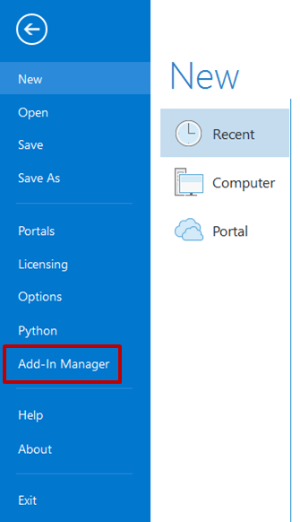
The installation process is straightforward:
| 2 | Install Add-In |
|---|---|
| 1 | Ensure ArcGIS Pro is closed. |
| 2 | Double click the provided Add-In.** |
| 3 | Select Yes to the digital certification pop-up and then OK. |
SAGIS interface
All SAGIS processing tools are contained in the SAGIS tab on the toolbar in the ArcGIS Pro project, as shown below (Figure 4). Standard ArcGIS pro tools are fully functional and can be used to manipulate the data and modify visualisation of outputs.
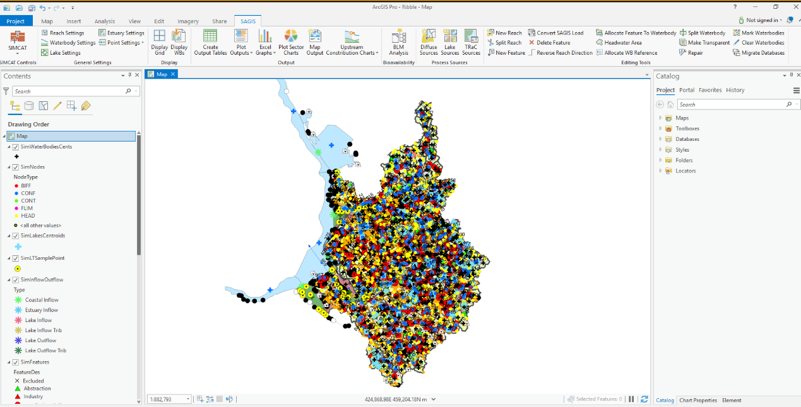
Figure 4 SAGIS GIS interface tab
Activating geoprocessing log files and viewing history
Before commencing modelling, users should ensure that ArcGIS Pro is configured to save geoprocessing log files. This can be done by:
| 3 | Activating Geoprocessing Log Files and Viewing History |
|---|---|
| 1 | Select Project then Options and Geoprocessing to open the form shown in |
| 2 | Check the Write geoprocessing operations to XML log file box (highlighted in yellow in Figure 3), then select OK. |
This is necessary because if a geoprocessing task fails at any stage, or if a user identifies a problem with the outputs of a particular process, these files will be required to diagnose the underlying causes. Note that when using SAGIS a pop-up window showing geoprocessing history (Figure 6) will appear on the righthand side of the screen which provides feedback to the user on progress. The progress notifier may be pinned to the screen and the system messages reviewed, although these outputs are written to a log file which also reports time elapsed for discrete processing functions. The log files can be located by pasting the following location into Windows Explorer which will open a folder containing a series of xml files as in Figure 7.
%APPDATA%\Esri\ArcGISPro\ArcToolbox\History
Figure 5 Geoprocessing options form
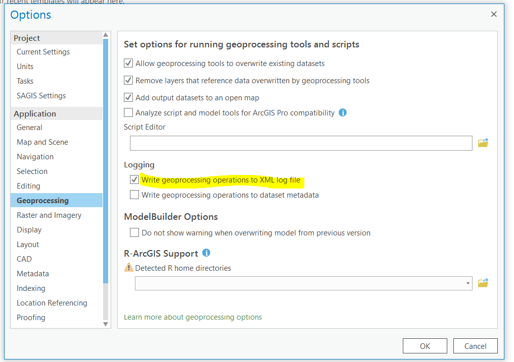
Figure 6 Geoprocessing history Figure 7 Geoprocessing log files
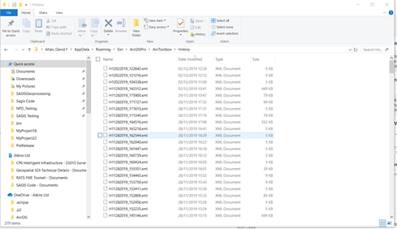
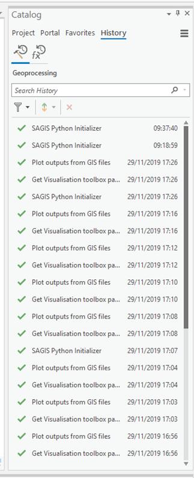
Managing SAGIS projects
SAGIS model files can be located on any accessible drive or folder including OneDrive although modellers should be aware that the periodic OneDrive backup process might ‘lock’ databases which can interfere with modelling actions. The SAGIS processing tools are embedded within the SAGIS aprx (equivalent to the ArcMap mxd). To begin a SAGIS project, an existing or blank project is opened in ArcGIS Pro. Once an ArcGIS Pro project has been created, it can be saved and re-opened as required.
If multiple copies of the aprx are created for a model region, these will all access the same databases so changes made in different aprx’s will affect the same source data. Multiple aprx’s of the same model region accessing the same databases should be avoided. Making copies of the regional databases, each related to a different suite of substances is one option to simplify data management and avoid the need to rebuild databases when switching between different groups of substances.
Using SAGIS (high level overview of simple functions)
A modeller will perform the following actions to create a SAGIS project:
-
Connect SAGIS to the model databases. Done by performing Configuring a Project, Open and Update or Refresh Layers actions. This writes data to attributes tables that are used in subsequent steps. The Refresh Layers option is typically used where databases are transferred from one modeller to another where there is the intention to retain the database settings (that is, an Open and Update is not required – refer to Chapter 4 for further information on Refresh Layers).
-
Specify the General Settings for the determinands to be modelled. Choose General Settings, selectable through the SIMCAT button. Name the dat file.
-
Customise the dat file to be created. Choose Create SIMCAT File, selectable through the SIMCAT button. Customise the dat file (usually unnecessary) and apply calibration settings. Select Run to create the dat file.
-
Run SIMCAT.
-
Plot the outputs. A range of visualisation options are available to present the results of the SIMCAT simulation.
These are described in further detail later.
Inputting improved data based on local information
SAGIS has been set up using national datasets with the aim of providing a consistent approach to national and regional water quality planning. These national datasets may, however, not include all of the key influences on water quality in a catchment because:
-
Some influences including landfills, quarries, contaminated land, coal mines, are not represented by these national datasets.
-
Better information may be available; for example, output from sewer network modelling by water companies in relation to impacts of intermittent discharges.
-
Some errors may exist in national datasets with regard to the location and influence of features.
It will, therefore, be important that the models are checked by scientists with local knowledge of catchments and that better data is used where available.
Configuring a Project
This chapter describes how to connect SAGIS to model databases by ‘configuring’ a project. The process is as follows:
| 4 | Configuring a Project |
|---|---|
| 1 | Click on Project then Options and SAGIS Settings to open the form shown in (Figure 8). |
| 2 | Select the required file geodatabases (including the Regional Database) and the location of the Simcat Folder using the Windows Explorer browsers. |
| 3 | An Output Database must be selected (i.e. the location to which model outputs are written). A blank database is created when a Project is created in ArcGIS Pro which could be used (refer to the Esri website given in the introduction for training on using ArcGIS Pro). This could also be the Regional Database although this is discouraged to avoid cluttering these databases with model output files. |
| 4 | Select OK. |
The geodatabase structure includes the Land National Database (consolidated export coefficient database) and LTRac National Database (consolidated export coefficient database for lakes and transitional waters). It isn’t required to specify a Land National Database (these are not usually distributed with other model components) but modellers should be aware that upon running the Open and Update process, the system will produce an alert which, in this instance, can be ignored.
Figure 8 SAGIS Settings Options form
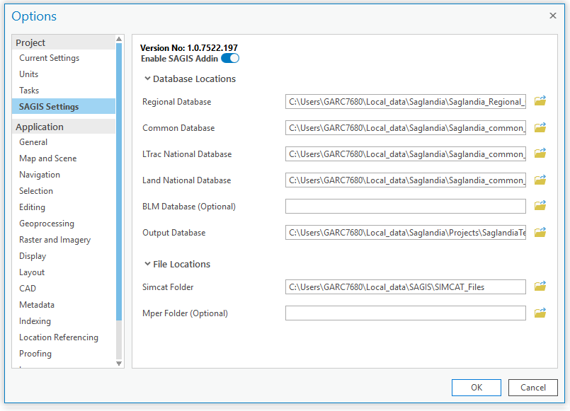
Building Regional Databases
This chapter describes how the information in the national sector databases (Land National Database and LTRac National Database) is processed to create the tables in the Regional Database that SAGIS ultimately uses to create the inputs to SIMCAT (i.e the sector data). These tools only need to be used when building the models; they are not required by the regular user of the tool.
Populate regional diffuse export database
The Diffuse Sources tool (Figure 9) takes the data on diffuse chemical loads or concentrations, standard deviation and correlation coefficient from the national sector databases (for each km2 grid cell) and either adds these up (loads), or calculates an average value (concentration, standard deviation and correlation coefficient) for each water body, which is then stored in the relevant Regional Database (i.e. the current selected Regional Database; Figure 8).
Figure 9 Diffuse Sources button
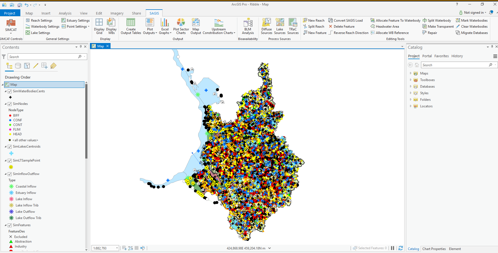
This processing set up only needs to be repeated if the sector data or water body shapes change.
The Diffuse Sources tool operation is only applied to the tables with the Use field ticked (or set to ‘yes’) in the MasterTableNames table within the national sector databases. These can be unticked if changes are only required for some sectors. There are four types of table in the Land National Database; load (LOAD), concentration (CONC), coefficient of variation (STDDEV) and correlation coefficient (CORCOEFF), which are all translated to waterbody-based values when populating the regional model databases.
| 5 | Building Regional Tables for Diffuse Source Inputs |
|---|---|
| 1 | Specify the Land National Database containing the data in the SAGIS Settings (Figure 8), then select OK. |
| 2 | Click on the Diffuse Sources button (Figure 9 - which is available in the SAGIS tab on the ArcPro toolbar, Figure 4). |
Create lakes and estuaries export database
The Lakes Sources (Figure 10) and TRaC Sources (Figure 11) buttons are clicked to extract the diffuse data from the LTRac National Database to populate the Regional Database.
Figure 10 Lake Sources button
Figure 11 TRaC Sources button
This step will only need to be repeated if the LTRac National Database or water body shapes change.
| 6 | Building Regional Lake and Estuary Input Tables |
|---|---|
| 1 | Specify the LTrac Database containing the data in the SAGIS Settings (Figure 8), then select OK. |
| 2 | Click on Lake Sources or TRaC Sources button (Figure 10 or Figure 11 - which are available in the SAGIS tab on the ArcPro toolbar, Figure 4). |
Loading Regional Data
When SAGIS operates it can model up to ten chemicals at one time (i.e. the maximum number that SIMCAT can simulate using a single dat file). If a different set of chemicals need to be modelled, it is necessary to load the data related to the new set of chemicals. The user might also need to set up SAGIS for a different region. Two approaches can be applied by SAGIS to set up, and switch between models: 1) Open and Update and 2) Refresh. The key differences between these are explained below:
-
Open and Update transfers the data from several tables in the selected Common Database and Regional Database (Figure 8) for the selected chemicals into the attributes table of the ArcGIS geodatabase layers on the SAGIS map. This overwrites any temporary changes that have been made to the data in the attributes table data, for example when running scenarios. This prevents the SAGIS data being ‘destroyed’ by the user.
-
Refresh Layers switches the SAGIS interface to the geodatabases and tables associated with a different model region. In contrast to Open and Update this does not change the data in the attributes data for the selected region. The data contained will be those uploaded when Open and Update was last run on the selected region applied to the chemicals selected at this time. Refresh Layers takes only takes a few seconds, so is a way to quickly move between regional models with the required chemicals already set up. The target databases must be specified in the same manner as for Open and Update (i.e. on the SAGIS Options page - refer to Figure 8).
Open and Update
When the model Opens and Updates, the data in the layers in GIS are populated with fixed data taken from several tables in the selected Regional Database and Common Database (Figure 8). This processing step is used to build a model for a different region, apply new chemical substances or reset the modified settings for the current region.
| 7 | Open and Update Regional Database |
|---|---|
| 1 | Select the SIMCAT icon (on the main screen below the Project tab; Figure 12) then Open and Update to open the Open and Update Options form. |
| 2 | Change the values on the Open and Update Options form (Figure 13) as required. |
| 3 | Select Run. |
Figure 12 SIMCAT menu items
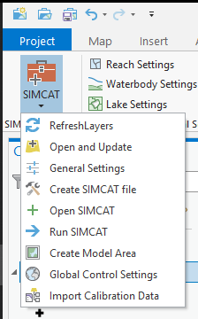
Figure 13 Open and Update Options form
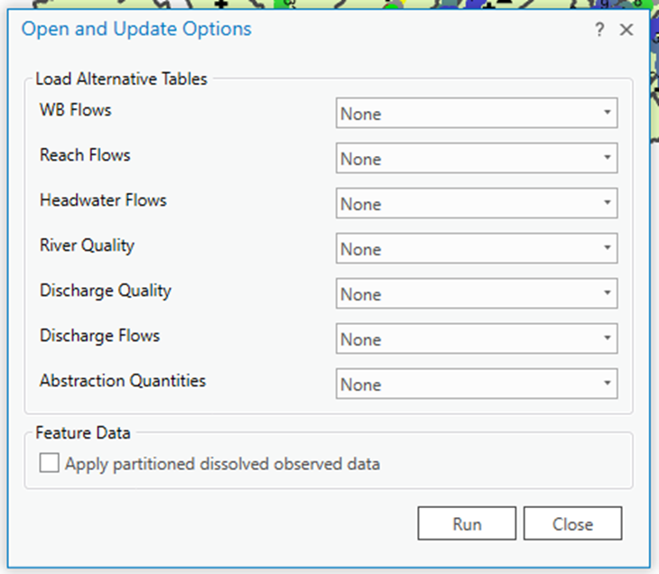
When the model Opens and Updates, it loads data from a series of core databases in the Regional Database and Common Database. The dropdown boxes in the Load Alternative Tables part of the form allow the user to select different versions of these tables that are held in the databases. For example, the user might create a version of the waterbody flow data related to climate change scenarios which, if selected, can then be used to carry out model runs. Similarly, water quality for a different period might be selected or consented effluent quality values rather than observed.
When creating these new versions of the tables, these must have the same name as the unmodified table but with further characters added to the end of the name (e.g. WBFlow_Estimates could become WBFlow_EstimatesCC). If this convention is not followed the new table will not appear in the dropdown box.
Refresh Databases
The following steps are followed to refresh the Regional Database:
| 8 | Refresh Regional Database |
|---|---|
1 |
Click on Project then Options and SAGIS Settings to open the form shown in (Figure 8). |
| 2 | Specify the location of the Regional Database, then select OK. |
| 3 | Select the SIMCAT icon then Refresh Layers (Figure 12). |
Global Controls
The Global Control Settings form (Figure 14) is used to manage global settings which are specified in the DeterminandsForSIMCAT table in the Common Database (pre-dates the development of SAGIS). These are applied to any model that is opened and updated. The Global Controls form is used to set up the way in which inputs from different sectors are set up for each chemical substance. These are implemented when the SIMCAT dat file is created.
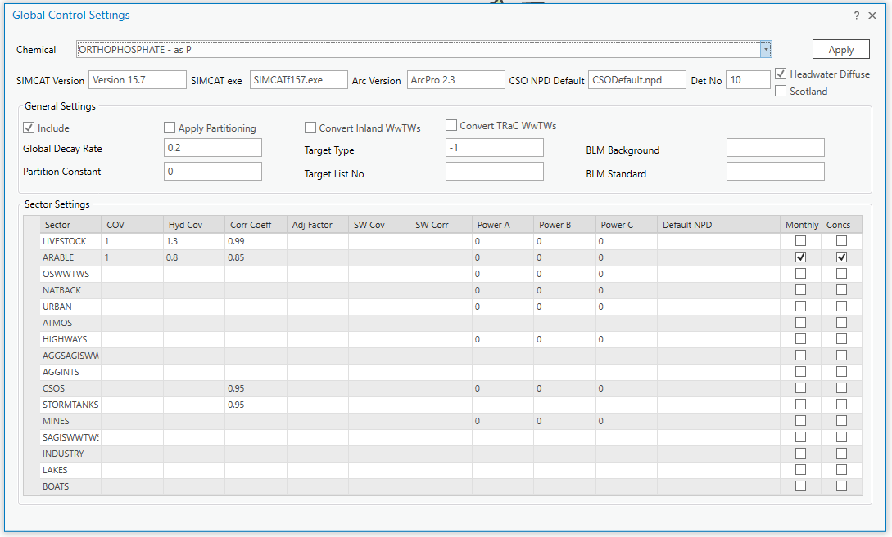
Figure 14 Global Control Settings form
To change the global settings:
| 9 | Modify Global Controls |
|---|---|
| 1 | Select the SIMCAT icon then Global Control Settings (Figure 12) to open the Global Control Settings form (Figure 14). |
| 2 | Select the determinands you wish to work with by ticking the Include box and clicking Apply. Deselect others by unticking the Include box. Ensure that no more than ten chemicals are included for a single dat file (this is a limitation of SIMCAT). |
| 3 | Change the settings and then click on Apply once selections are complete. It is advisable to check General Settings to ensure the correct/intended determinands are selected. |
The settings are listed below (refer to the SIMCAT user manual for information about the SIMCAT specific settings):
-
SIMCAT Version – This is the version stamp printed at the top of the SIMCAT output files that is used for version control.
-
SIMCAT.exe – This is the current version of the SIMCAT executable file. This only needs to be changed if a new version of SIMCAT is deployed.
-
Arc Version – Current version of Arc (e.g. ArcPro 2.3).
-
CSO NPD Default – Name of default npd distribution used to generate the CSO and stormtank non-parametric inputs files.
-
Det No – Number of determinands included in the SIMCAT output files (normally 10).
-
Headwater Diffuse – When this is ticked headwater sector inputs are added when the SIMCAT dat file is created.
-
Scotland – This is ticked to apply modifications to the way SAGIS is set up and run for the Scottish models.
-
Include – When this is ticked, the determinand will be added when the model is Opened and Updated.
-
Apply Partitioning – This is ticked to ‘convert’ total metal concentration to a dissolved phase concentration equivalent (requires that a partition coefficient is pre-specified which is, however, in place for most metals). If observed dissolved data for determinands for which Apply Partitioning has been ticked is to be included (within the outputs, for example, to compare observed and predicted values), then, when the model is Opened and Updated, the Apply partitioned dissolved observed data tick box on the Open and Update Options Form (Figure 13) should be checked.
-
Convert Inland WwTWs – Converts inland point load features to flow and concentration features when the dat file is created.
-
Convert TraC WwTWs – Converts coastal and estuary point load features to flow and concentration features when the dat file is created.
-
Global Decay Rate – Global decay rate.
-
Partition Constant – Partition constant/coefficient (zero if no value).
-
Target Type – Target type (as defined by SIMCAT).
-
Target List No – Number of WFD type target used to assess compliance.
-
BLM Background – Biotic ligand model background concentration (background concentration allowance for bioavailability-based standards for trace metals).
-
BLM Standard – Biotic ligand model standard (bioavailability-based standard for trace metals).
-
COV – If a number is entered, this overrides the value for the COV derived from the Land National Database with the specified value.
-
HydCOV – If a number is entered, this overrides the value for the COV derived from the Land National Database by applying the specified multiple of the COV of the diffuse inflow for the same reach.
-
Corr Coeff – If a number is entered, this overrides the value for the correlation coefficient derived from the Land National Database with the specified value.
-
Adj Factor – Factors up or down of the inputs (loads or concentrations) associated with the specified sector and substance. This can be used to adjust for systematic biases in the loads for all inputs. If further adjustments are later applied on a waterbody or reach basis these adjustments are combined.
-
SW COV – Coefficient of variation for seawater concentrations in estuaries (this is used for the estuary functionality).
-
SW Corr – Correlation coefficient for the seawater concentrations in estuaries (this is used for the estuary functionality).
-
Power A – This is the power index term in the power functions to define input load distributions.
-
Power B – This is the baseline load in the power functions to define input load distributions.
-
Power C – This is the cut-off percentile below which loads are set to zero.
-
Default NPD – Name of the template NPD file (with average load of 1) used to create the reach npd files.
-
Monthly – If the loads in the Land National Database have been set up on a monthly basis, the dat file will be set up to receive a monthly distribution of inputs loads.
-
Concs – If ticked sector inputs will be added as concentrations rather than loads.
General Settings
The General Settings form (Figure 15) contains the settings related to chemical substances in SIMCAT (this translates to the [a] General and [b] Determinands sections in the SIMCAT dat file). The form is also used to create the SIMCAT dat file name and location and generate the suspended solids non-parametric files if the tool is being used carry out runs involving the partitioning of metals.
Different settings can be created as scenarios (related only to settings on the General Settings form) which can then be selected using the dropdown box.
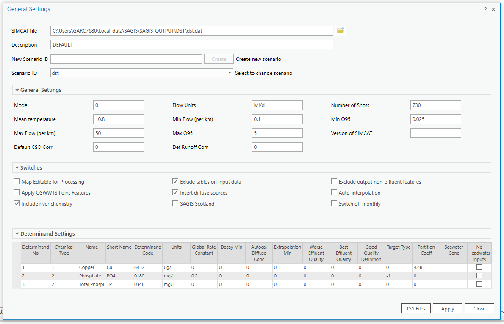
Figure 15 General Settings form
To use the General Settings form:
| 10 | Apply General Settings |
|---|---|
1 |
Select the SIMCAT icon then General Settings (Figure 12) which loads the General Settings form (Figure 15). |
| 2 | To select a scenario previously set up, click on the Scenario ID dropdown box and select the scenario. The associated settings will then be loaded. |
| 3 | To create a new scenario, first select an output location and name for the new dat file. This can be modified manually be editing the SIMCAT File input box or by clicking on the file button beside this box. This opens a File Open dialogue to select the location and add the name of the dat file (extension). This must not exceed 75 characters in length. |
| 4 | Add text to the Description box that describes the scenario. |
| 5 | Change any of the settings (these are described below). |
| 6 | To run partitioned metals, files with information on suspended solids are required in the same folder as the SIMCAT dat file. These are created by clicking on the TSS Files button. TSS Files must be created prior to running the CreateSIMCAT function. |
| 7 | Add a Scenario ID to the New Scenario ID box. For a new dat file name to be applied it is necessary to click on Create new scenario after entering a scenario name, then to click Apply. |
The settings on the General Settings form are described below (Further information on these settings can be found in the SIMCAT user manual):
-
Mode – If the value is zero, SIMCAT is run in mean mode. If it is set to one, SIMCAT is run in percentile mode.
-
Number of Shots – Number of SIMCAT shots.
-
Flow Units – Flow units in SIMCAT.
-
Mean Temp – Mean temperature in SIMCAT.
-
Min Flow (per km), Max Flow (per km), Min Q95 and Max Q95 – This sets limits on the maximum and minimum values for the mean and Q95 flow per kilometre when the dat file is generated.
-
Version of SIMCAT – The version of SIMCAT as printed on the first line of the SIMCAT output files. This is used to check that the correct version of SIMCAT is being used.
-
Default CSO Corr – The default value for correlation between CSO spills and river flow (usually this is overridden by a feature specific value).
-
Def Runoff Corr – The default value for correlation between runoff flow and river flow (usually this is overridden by a feature specific value).
-
Exclude tables on input data – SIMCAT setting to reduce the size of the outputs by excluding data in the input tables.
-
Exclude output non-effluent features – SIMCAT setting to control which features generate outputs to the SIMCAT output files.
-
Apply OSWWTS Point Features – In some cases, data is available to create inputs from septic tanks as points rather than a diffuse layer (as points in the SAGISPointFeature_LOAD layer) which might be preferable when modelling small catchments (e.g. surrounding a lake). Ticking this box modifies how SAGIS reads in OSWWTWs (i.e. from SAGISPointFeature_LOAD instead of using the normal diffuse layer).
-
Insert diffuse sources – SIMCAT setting to add diffuse sources when SIMCAT runs.
-
Auto-interpolation – SIMCAT setting to control how autocalibration is applied.
-
Include river chemistry – SIMCAT setting to control whether river chemistry is applied.
-
SAGIS Scotland – This tickbox needs to be ticked if running the Scottish SAGIS regional models. It modifies how SAGIS reads in some of the data, formatted differently in these models.
-
Switch off monthly – Ticking this tick box switches off the monthly simulation in SIMCAT and greatly improves the run times.
-
Global Rate Constant – The global first order decay is the default value applied to all reaches if this is not replaced by a reach specific value.
-
Decay Min – Minimum value below which the simulated concentrations is not allowed to go due to decay.
-
Autocal Diffuse Conc – The concentration with which gap filling flows are added.
-
Extrapolation Min – This sets a minimum value when SIMCAT extrapolates the extra exponential decay introduced by gap filling.
-
Worse Effluent Quality – When SIMCAT calculates the discharge quality required to meet river targets, this sets a maximum value.
-
Best Effluent Quality – When SIMCAT calculates the discharge quality required to meet river targets, this sets a minimum value.
-
Good Quality Definition – This variable defines an annual mean of good discharge quality, which can be imposed in cases where the current quality is worse than this and the river target cannot be achieved, even if the discharge had zero concentration of pollutant.
-
Target Type – This sets the target type, 1 = mean, 2 = 95 percentile 3 = 90 percentile, 4 = 5 percentile, 5 = 10 Percentile and 6 = 99 percentile. When the value is negative, SAGIS applies a reach specific target derived from the ReachTargets table in the Common database.
-
Partition Coeff – Partition coefficient applied when calculating metal partitioning.
-
Seawater Conc – the concentrations, applied in the estuary calculations.
-
No Headwater Inputs – Excludes sector inputs at headwater nodes.
-
TSS Files – Clicking this button creates files for suspended solids using observed suspended solids data shapefile (TSSdata) now stored in the Common database (previously the SAGISObservedData database). These files are required by SIMCAT when metal partitioning is applied. Once these files have been created in the folder containing the SIMCAT dat file, the operation does not need to be repeated (unless the SIMCAT dat file is written to a new folder). Note that TSS Files must be created in advance of dat file creation (CreateSIMCAT).
Data Editing
The editing forms described in this chapter are used to modify the values in the attributes table of the SAGIS layers. These values are used to create the settings and data in the SIMCAT dat file. An alternative is to edit the attributes tables directly using standard ArcGIS Pro tools. Creating scenarios using the editing forms is covered in Chapter 8.
Editing Reach data
To edit the reach data, the following steps should be followed:
| 11 | Edit Reach Settings |
|---|---|
| 1 | Highlight a reach or reaches on the map, or select a reach in step 3. |
| 2 | Click on Reach Settings (which is available in the SAGIS tab on the ArcPro toolbar, Figure 4) which loads the Reach Settings form (Figure 16). |
| 3 | Change the values on the Reach Settings form as required. If several reaches are highlighted, the Reach No (Recalc) dropdown box can be used to navigate between the selected reaches. If a reach or reaches are not already selected (in step 1), then the Reach No (Recalc) dropdown box can be used to select a reach from a list of all those shown on the map. |
| 4 | Monthly flow factors can be added in the Monthly Flow Factors tab (Figure 17). These values multiply the annual mean and Q95 values to generate monthly means and Q95 values. To activate this a value of 1 needs to be entered into the SimReaches table in a field called MonthlyFlow (this operation cannot be carried out using the form). netered in |
| 5 | To create new targets (i.e. which differ from those shown in the Chemical Settings table) new entries need to be made into the RiverQualityTargets table in the Common Database. |
| 6 | Click on Apply to save the changes. |
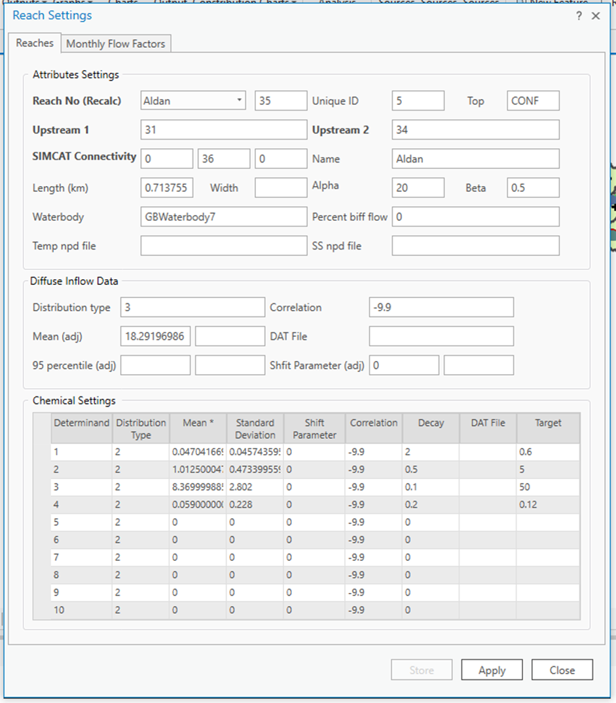
Figure 16 Reach Settings form
Further explanation of the key inputs is provided below:
-
Unique ID – is the unique reference for the reach which is used when cross referencing data from the Regional Database tables.
-
Upstream 1 and Upstream 2 – are the SIMCAT model numbers (SimNo) of the upstream reaches.
-
SIMCAT Connectivity – defines the connectivity with the upstream and downstream reaches using the method applied by SIMCAT.
-
Alpha and Beta – are travel time parameters.
-
Percent biff flow – Where two reaches are downstream of a bifurcation this defines the percentage of the total flow passing down the selected reach.
-
Temp npd file and SS npd file – specify non-parametric files for temperature and suspended solids which are applied to each reach when SIMCAT runs. If Temp npd file input box is left blank, SIMCAT applies the annual average temperature as specified on the General Settings form. Suspended solid npd files are generated automatically when the TSS Files button on the General Settings form is clicked (as described in Chapter 6). Entering a file name in the SS npd file input box results in the specified file being used in preference (e.g. using improved local data). Note that TSS Files must be created in advance of dat file creation (CreateSIMCAT).
-
Diffuse Inflow Data – The data in this box define the statistics for diffuse quality (mean, Q95, distribution type, shift parameter, correlation and non-parametric file) for each chemical substance. Once values have been stored, they will no longer be defined as a default.
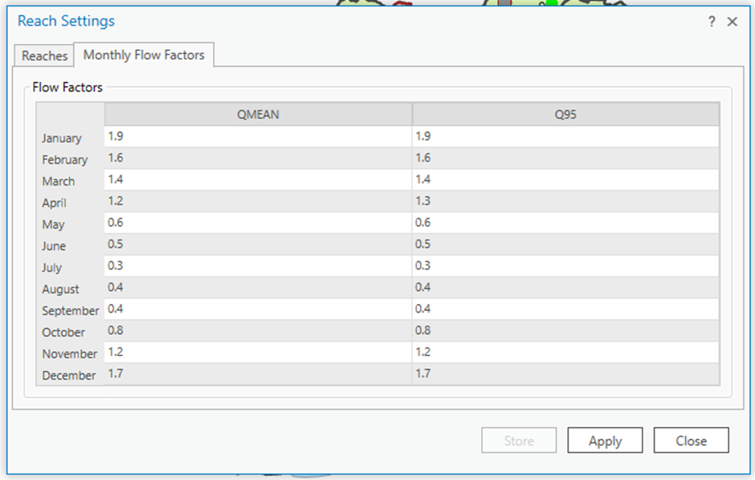
Figure 17 Reach Settings Monthly Flow Factors form
Opening and Updating the model replaces any modifications to the settings with the original values.
Editing Feature data
Feature data can be edited in both the SimFeatures, SimNodes or SAGISPointFeature_LOAD layers using Feature Settings, Node Settings and Feature Load Settings forms, respectively. It is important to note that features for Industry and Sewage Works are contained in both of SimFeatures and SAGISPointFeature_LOAD layers. The sewage works in the latter layer are smaller sewage works and works discharging into transitional or coastal waters that were not included in the original National SIMCAT models and are represented as loads. The industry loads in this layer are derived from the Pollution Inventory, whereas the values in the SimFeatures layer are taken from the original National SIMCAT models. Creating scenarios using the editing form is covered in Chapter 8.
To edit the feature data:
| 12 | Edit Feature Settings |
|---|---|
| 1 | Highlight a feature or features on the map (either SimFeatures, SimNodes or SAGISPointFeature_Load). Unlike the other layers, only one feature can be selected at a time from the SAGISPointFeatures_LOADs and changes are only applied to the selected feature (multiple changes can only be made by editing the attributes table directly). |
| 2 | Select Point Settings (menu option which is available in the SAGIS tab on the ArcPro toolbar, Figure 4) then Feature Settings (to edit SimFeatures), Node Settings (to edit SimNodes) or PFL Settings (to edit SAGISPointFeature_LOAD) which loads the Feature Settings form (Figure 18), Node Settings form (same as Feature Settings form, though labelled Node Settings) or Feature Load Settings form (Figure 19), respectively. |
| 3 | Change the values on the Feature Settings, Node Settings or Feature Load Settings form as required (key settings are described below). |
| 4 | If several reaches or nodes are highlighted, the Site Number dropdown box is used to navigate between the selected features. |
| 5 | Click on Apply to save the changes. |
| 6 | If the Complex Abstraction Settings (header) is selected, the Complex Abstraction Settings form is opened (Figure 20). This is used to enter information on abstractions from intakes to reservoirs (key inputs are described below). |
| 7 | To specify discharge parameters in monthly format (as opposed to an annual value), selected a discharge feature on the map, click the Monthly Feature Data button the Monthly Settings form (Figure 21) will open. Here, monthly values can be added for discharge flow AND discharge quality for the determinands available in the dropdown box (quality and flow values must be set for each chemical available within from the dropdown – this will be the same as the determinands selected for the model run). Once entries have been made the Apply button is clicked to save the changes. Note that monthly flow values will only be applied if a value of 1 is entered for the feature in a field called MonthlyFlow in the SimFeatures table (this operation cannot be carried out using the form – this selection must be set within the attributes table directly). Monthly entries should only be entered for feature types 3 (wastewater treatment works) and 5 (industrial discharges). |
| 8 | There are already data in the SimReaches table which set the monthly river flow profile when the Monthly option is selected. To apply a monthly river flow profile to headwater nodes (feature type 10) set the MonthlyFlow field in the SimNodes table to ‘1’ (default is ‘0’). In this case the monthly flow factors specified for the adjoining reach in the SimReaches table will be applied to the node. |
Figure 18 Feature Settings form
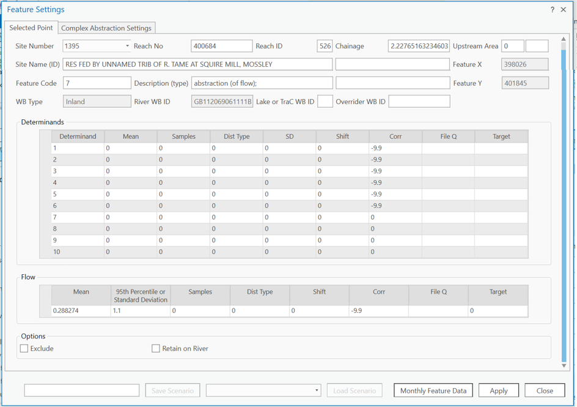
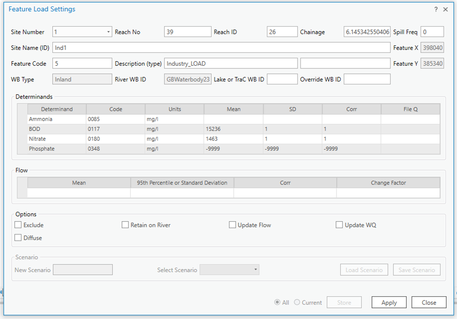
Figure 19 Feature Load Settings form
Further explanation of the key settings is provided below:
-
Site Number – is the Unique ID reference for the features which is used to cross reference the data in the Regional Database table during Open and Update.
-
Reach No – SIMCAT model reach number on which the feature is located.
-
Reach ID – Unique ID reference for the reach on which the feature is located.
-
Chainage – Distance of the feature from the start of the reach in km.
-
Upstream area – If the selected feature is a SimNodes this gives the area upstream.
-
Site Name (ID) – The Site Name is the name of the features as used by SIMCAT, whilst the ID is the name of the WIMS sample reference as listed in the SamplePointQuality or DischargeQuality tables in the Common Database.
-
Feature Code – is the SIMCAT feature code (e.g. 1 for monitoring point).
-
Description (type) – is the SIMCAT feature description.
-
WB Type – identifies the feature as an inland, lake or estuary/coastal feature.
-
River WB ID – River waterbody ID for an inland feature.
-
Lake or TraC WB ID – Lake or estuary/coastal waterbody ID for a non-inland feature.
-
Override WB ID – transfers the target waterbody ID to a preferred water body (river, lake or estuary). This might, for example, be used to make a sewage works discharge to an estuary even though it is located close to a river.
-
Water Quality data - These specify the statistics for the water quality data for up to 10 chemical substances associated with the feature (mean, sample number, distribution type, SD, shift parameter, correlation, non-parametric file and target).
-
Flow data – These specify the statistics for the flow data for up to 10 chemical substances associated with the feature (mean, Q95 or SD, sample number, distribution type, shift parameter, correlation, non-parametric file and target).
-
Exclude – excludes a feature from the dat file.
-
Retain on River – retains a feature as a river feature even though the location indicates if it should be a lake feature.
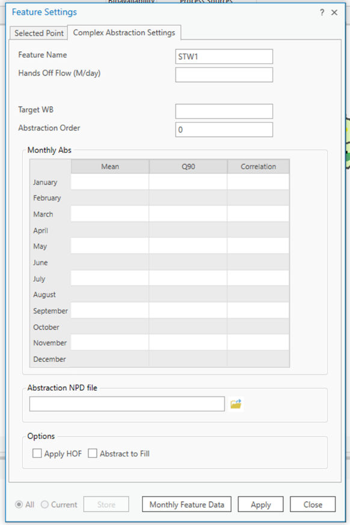
Figure 20 Complex Abstraction Settings form
Further explanation of the key inputs on the Complex Abstraction Settings form is provided below:
- Hands Off Flow (Ml/day) – the river flow value at which the abstraction will cease to operate.
-
Target WB – The reservoir or lake water body ID.
-
Abstraction Order – shows which intake is used first, second, third etc. to fill the reservoir (1, 2, 3 etc is entered).
-
The Monthly Abs boxes are used to enter monthly values for the mean abstraction (Mean), the 10%ile abstraction (Q90) and the Correlation between the abstraction quantity and river flow.
-
Abstraction NPD file – specifies a non-parametric file for abstraction to the lake (selected by clicking on the button beside the box). The format of these files is specified in Chapter 18.
-
Apply HOF – applies a Hands-Off Flow specified for the abstraction. Water will be abstracted up to the Mean flow specified on the Feature Settings form.
-
Abstract to Fill – specifies that water is only abstracted to a reservoir until it is full rather than abstracted by the full amount.
Figure 21 Monthly Settings form
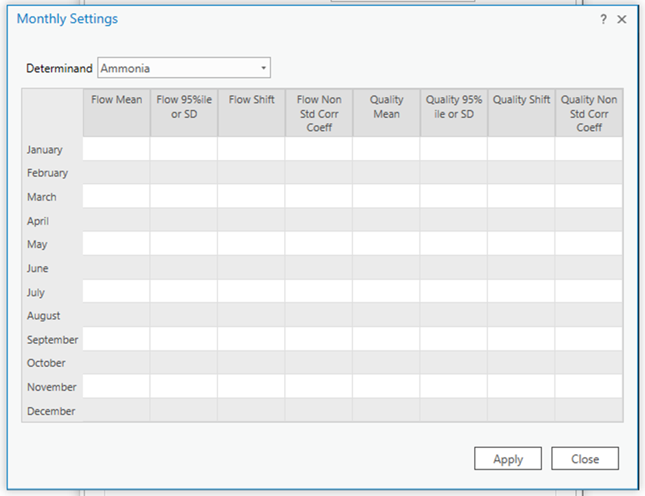
Editing Water Body data
To edit the waterbody data:
| 13 | Edit Waterbody Settings |
|---|---|
| 1 | Highlight a waterbody on the map. |
| 2 | Click on Waterbody Settings (which is available in the SAGIS tab on the ArcPro toolbar, Figure 4) which loads the Waterbody Settings form (Figure 22). |
| 3 | Change the values on the Waterbody Settings form as required. |
| 5 | If several waterbodies are highlighted, the Selected WBs dropdown box is used to navigate between the selected features. |
| 6 | Click on Apply to save the changes. |
Figure 22 Waterbody Settings form
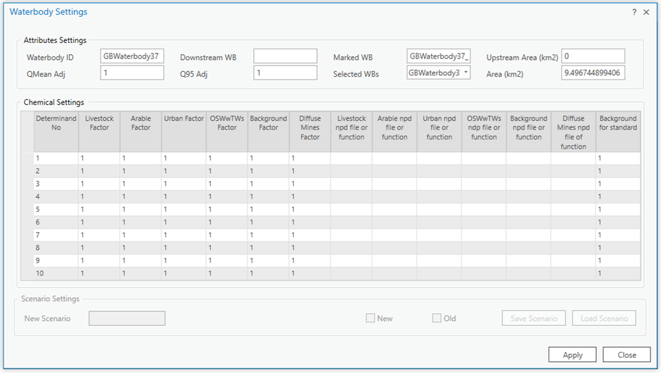
Further explanation of the inputs on the Waterbody Settings form is provided below:
-
Downstream WB – Waterbody ID for the downstream waterbody. This is only specified where the waterbody has no river reach so the loads associated with it needs to be transferred downstream. This can be disabled by unticking the box (e.g. if the transfer is carried out by creating a tributary).
-
QMean Adj and Q95 Adj – to apply factors to the diffuse inflows to improve model performance with regards to flow. These changes are fixed in contrast to the changes made via a calibration table (see Chapter 10).
-
Factors – are applied to the input loads for each chemical and diffuse input sector for each chemical substance (e.g. Livestock Factor, Arable Factor etc.). These can be used to apply scenarios for reductions in diffuse inputs.
-
NPD Files – are used to specify non-parametric files to input chemical loads for each diffuse sector (e.g. Livestock npd file, Arable npd file etc.). These are defined as a sequence of numbers that have an average value of 1 which are then factored up and down to provide the correct annual load when SAGIS creates the SIMCAT dat file. A StandardNPDs table has been created in the Common database. This methodology is aimed at providing a better representation of diffuse input driven by rainfall and runoff such as agricultural phosphorus inputs. In these cases, the standard log normal distributions can input too much load at lower flows which can result in over representation of concentrations for these sectors.
An alternative way to define the non-parametric relationship between load and flow is to enter the power function and baseload in the form xx_yy_zz where xx = the power function, yy = the fixed base load as a percentage of the total load and zz = a percentage cut-off below which the load is zero.
If no entries are applied in the form, the global settings values are used.
Editing Lakes data
Editing lakes data should be undertaken by qualified specialists with an understanding of lakes-related processes. To edit the lakes data:
| 14 | Edit Lake Settings |
|---|---|
| 1 | Highlight a lake on the map (only one can be chosen). |
| 2 | Click on Lakes Settings (which is available in the SAGIS tab on the ArcPro toolbar, Figure 4) which loads the Lakes Settings form (Figure 23). |
| 3 | Change the values on the Lakes Settings form as required (Figure 23). |
| 4 | Click on Update to save the changes. |
| 5 | Monthly values for the setting and sediment release rates can be added by clicking on the Mon Rates button, which brings up the Monthly Lake Rates form (Figure 24). |
| 6 | An estimate of the annual settling) rates can be changed by clicking on the Ann Rates button, which brings up the Lake Rates form (Figure 25). |
| 7 | Input loads for birds can be modified by clicking on the Birds button which opens the Bird Inputs form (Figure 26). Nutrient excretion rates and monthly bird counts can be modified for each species listed by the dropdown box. Values for further species that are not already contained in the database can be saved by entering the name of the species in the Add Species box, either selecting Apply Default values (from the default table which include approximately 20 species) or inserting user defined values, then clicking on the Update button.** |
Further explanation of the key inputs on the Lakes Settings form is provided below:
-
Volume (Ml) – specifies the lake volume. A volume npd file can be entered into the Volume (MI) NPD File box by clicking on the button and navigating to the file. This npd file is a non-parametric file providing information on how the volume of the lake varies (the format of the file is shown in Chapter 18).
-
Offline (Y/N) – An offline lake is not connected to the SIMCAT reach network.
-
GW Inflow – Groundwater mean inflow.
-
GW Inflow Q95 – Q95 of groundwater inflow.
-
GW Inflow Corr – Correlation between groundwater inflow and river inflow to the lake.
-
Local Area (km2) – This specified the local catchment area in km2 around the lake and is only specified for offline lakes (see below).
-
Angling Days – allows the user to specify the number of anglers multiplied by the average number of days that they visit a lake. This overrides the default values in the LTrac Database.
-
Compensation Flow – Mean compensation flow out of the lake or reservoir.
-
Simulation Period (yrs) – Length of simulation period for the lake model in years.
-
Timestep (days) – Lake model timestep in days.
-
Output Type – This describes the way the water quality and flow output from the lake model is input to SIMCAT as i) Statistics (mean and standard deviation), ii) Monthly File (monthly means and standard deviation), iii) NPD File (NPD files for the flow and water quality probability distribution functions).
-
Hydrological Series File – allows the user to specify a series of random numbers that the lake model uses to carry out the detailed lake simulation (see Chapter 11). The sequence is ordered to represent sequences of dry or wet conditions. The file is entered by clicking on the button next to the box and navigating to the file. If nothing is entered into this box and default regional sequence is applied from the Regional Database or if this is absent, a national sequence from the Common Database is applied.
-
Dynamic Sediment – if ticked, the sediment concentration will change as chemicals move in and out of the sediment, based on the settling rate, sediment release rate and burial rate. Otherwise, the sediment concentration is fixed at the specified value throughout the simulation and chemical release from the sediment is controlled by this concentration and the sediment release rate.
-
Run Detailed - The lake model can be run in two modes Fast and Detailed – which is explained further in Chapter 11.
-
Exclude – excludes the lake from the simulation.
-
Lake Temperature Settings – monthly values for lake temperature.
-
Settling Rate – Lake model parameter to account for the decay or settling of a chemical out of the water column (m/day) which forms part of the lake model (see Chapter 11). Upper lower and upper limits can be specified between which values are sampled as part of the Monte Carlo lake simulation (alternatively just a single lower value can be applied as a constant setting). For settling rates, sediment release rates, burial rates and sediment concentrations, the values in these small input boxes can also be viewed and changed by double clicking on the box. This opens an input box into which new values can be entered.
-
Sediment Rel Rate – Lake model parameter (m/day) to account for release of a chemical from the sediment pool (upper and lower limits can be applied as described above). It is only applied in the Detailed model.
-
Burial Rate – Lake model parameter (m/day) to account for the permanent loss of a chemical from the sediment pool (upper and lower limits can be applied as described above). It is only applied in the Detailed model.
-
Sediment Conc – Starting sediment concentration. This remains fixed unless Dynamic Sediment is ticked. It is only applied in the Detailed model.
-
GW Qual Mean – If a groundwater flow (see above) is specified this is the mean concentration with which it is input to the lake.
-
GW Qual SD – If a groundwater flow (see above) is specified this is the standard deviation of the concentration with which it is input to the lake.
-
GW Qual Corr – If a groundwater flow (see above) is specified this is the correlation of the concentration with the input flow to the lake.
-
Target – Lake water quality target.
Figure 23 Lake Settings form
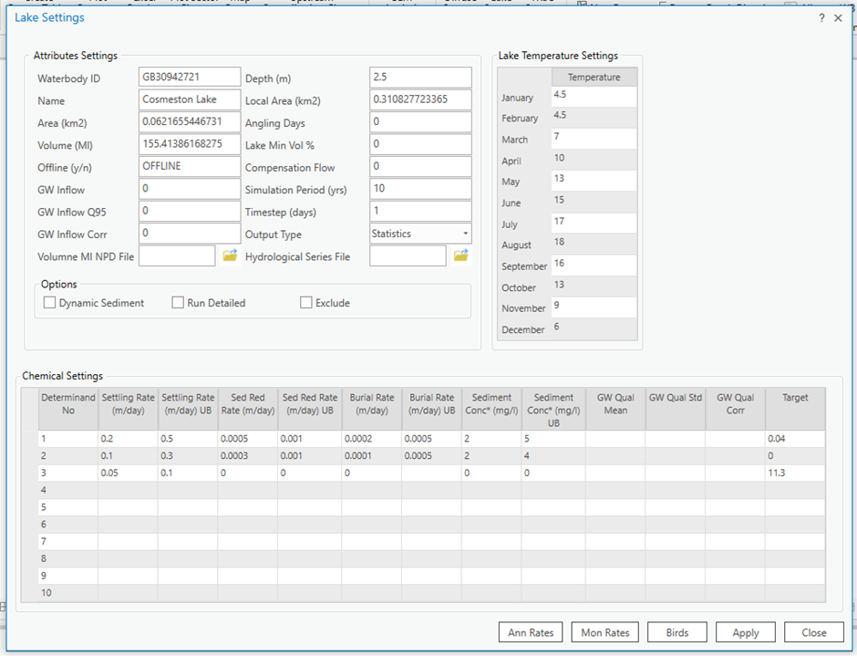
Figure 24 Monthly Lake Rates form
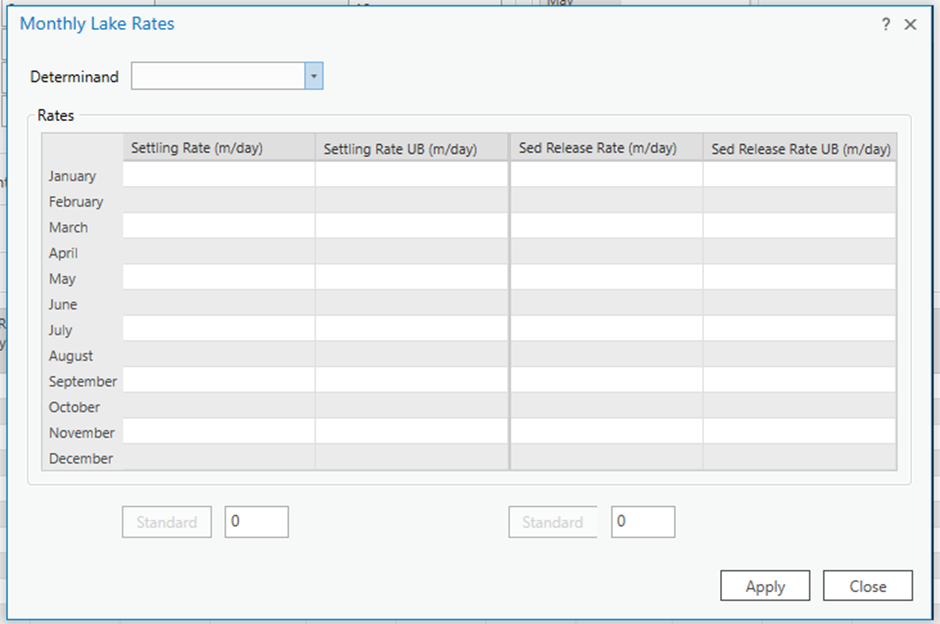
Figure 25 Lake Rates form
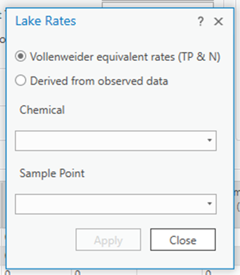
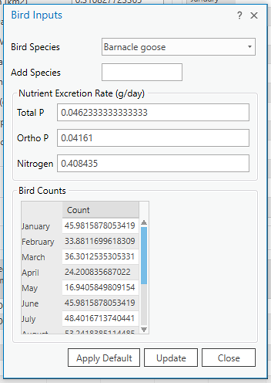
Figure 26 Bird Inputs form
Editing Estuaries data
To edit the estuary data:
| 15 | Edit Estuary Settings |
|---|---|
| 1 | Highlight an estuary on the map (only one can be chosen). |
| 2 | Click on Estuary Settings (which is available in the SAGIS tab on the ArcPro toolbar, Figure 4) which loads the Estuary Settings form (Figure 27). |
| 3 | Change the values on the Estuaries Settings form as required. |
| 4 | Click on Apply to save the changes. |
Figure 27 Estuary Settings form
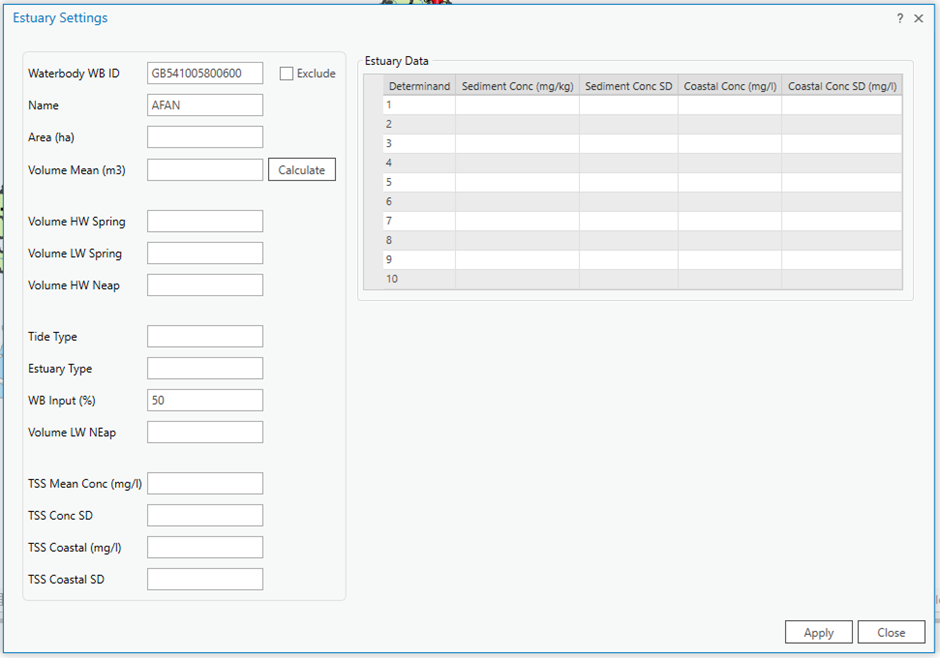
Further explanation of the key inputs on the Estuary Settings form is provided below:
-
Volume Mean (m3) – specifies the mean volume unless high water spring, low water spring, high water neap and low water neap values are specified.
-
Estuary Type – Category of estuary type (e.g. Macrotidal, Mesotidal, Microtidal) with which the proportion of load passed downstream is associated.
-
WB Input % – Percentage of input load that is retained by the estuary before the load is passed downstream.
-
TSS Mean Conc (mg/l) and TSS Conc SD – Total suspended solids concentration in the estuary and associated standard deviation (derived from observed data).
-
TSS Coastal (mg/l) and TSS Coastal SD – Total suspended solids concentration in the coastal waterbody into which the estuary discharges, and associated standard deviation (derived from observed data).
-
Sediment Conc (mg/kg) and Sediment Conc SD – Concentration of each chemical substance associated with the suspended sediment.
-
Coastal Conc (mg/l) and Coastal Conc SD (mg/l) – Concentration of each chemical in the coastal waterbody into which the estuary discharges.
Setting Up Scenarios
The data input forms for Features, Waterbodies and Lakes described in Chapter 7 can be used to set up and save Scenarios. The components of these forms that are used to set up scenarios are shown below (Figure 28).
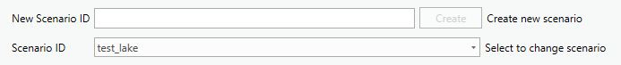
Figure 28 Setting up and saving scenarios
Settings for selected features can be saved as a scenario by entering a scenario name in the New Scenario ID box then clicking on the Create new scenario button (this only applies to selected features and only the currently selected feature for lakes).
To load a scenario the Scenario ID drop down button is selected which lists previously saved scenarios. The required scenario is selected from the dropdown list. This loads in all the saved values for all features specified in the selected scenario, not just the currently selected features.
Before creating a scenario, it is good practice to save a baseline scenario with the original values so that these can be reloaded when required (values can also be reset by Opening and Updating but this takes much longer).
Running SIMCAT and Viewing the Outputs
This chapter describes how the data created in the map attributes layers are translated into the input (dat) file to SIMCAT then run. Using the SAGIS interface, the SIMCAT outputs can then be viewed. Some of the forms described in this chapter show options to display results for lakes and estuaries and outputs related to the MPER model. These elements are covered in separate chapters in the manual.
General Settings and Create SIMCAT form
Creating an unmodified regional dat file
To create a SIMCAT dat file the name must first be specified on the General Settings form (Chapter 6). The Create SIMCAT File form (Figure 29) is then used to create the SIMCAT dat file. The basic steps to do this are described below followed by further information on how these steps can be modified.
| 16 | Creating a Simple Regional SIMCAT dat File |
|---|---|
| 1 | Open the General Settings form (Figure 15) by clicking on the SIMCAT icon then General Settings (Figure 8). |
| 2 | Select an output location and name for the new dat file. This can be modified manually be editing the SIMCAT File input box or by clicking on the folder button beside this box. This opens a File Open dialogue to select the location and add the name of the dat file (extension dat). The dat file name must NOT begin with a number (e.g. 2020scenario.dat) but may contain numbers (e.g. scenario2020.dat). The full path length (i.e. dat file name and file path) must not exceed 75 characters. |
| 3 | Add text to the Description box that describes the scenario. |
| 4 | Add a Scenario ID to the New Scenario ID box and click on Save. For a new dat file name to be applied it is necessary to click on Save after entering a scenario name (i.e. create a scenario) then to click Apply. |
| 5 | Open the Create SIMCAT File form by clicking on the SIMCAT icon then Create SIMCAT File. |
| 6 | Click on Run. This will create the unmodified dat file with default settings. |
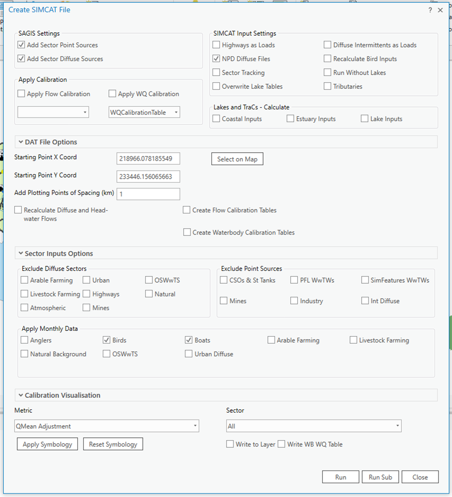
Figure 29 Create SIMCAT File form
Creating a sub-regional model
Sub areas of the regional model can be run by defining a sub-regional polygon.
Creating a Sub Area Polygon model
The first step is to create a polygon and SIMCAT dat file that covers the reaches for the sub area. To do this:
| 17 | Creating a Sub-area SIMCAT dat File using a Sub-area Polygon buttons |
|---|---|
| 1 | Highlight the downstream reach of the model area. |
| 2 | Click on the SIMCAT icon then Create Model Area Figure 12) to open the Create Model Area form (Figure 30). |
| 3 | Give the model sub area a name, typically, the name of the river catchment in the Area Name input box. |
| 4 | Click Save to create the sub-model area (this is saved in the Regional Database). |
| 5 | Open the Create SIMCAT File form by clicking on SIMCAT then Create SIMCAT File. |
| 6 | Select the starting point within the submodel using the ‘Select on Map’ option (Figure 29) |
| 7 | Click on Run Sub. This will create the dat file with default settings. |
| 8 | This opens a dropdown box that lists all the sub-areas that have previously been created for the regional model (Figure 31). Select the area for which the sub-area model is required. This will create the dat file with default settings.** |
| 9 | Sometimes reaches are included in the sub area polygon that are not upstream of the selected downstream reach. For example, the waterbodies in SAGIS do not align perfectly with the confluences of the reaches or virtual reaches may cross the model area. This will result in the wrong reaches being selected when creating the SIMCAT dat file. This is corrected by opening the Create Model Area form again and selecting the model area using the dropdown box in the Revise area of the form and entering the Unique_Ref values of the reaches that need to be excluded. Once Save is clicked this information is stored and will be applied whenever the model sub area is used again to create a sub area SIMCAT dat file. |
| 10 | When creating a sub-area, it might not be required to include all areas upstream, for example if several upstream areas are linked together by virtual reaches (e.g. along the coast). To limit the extent of the upstream area created, enter the final upstream SIMCAT model number (SimNo) to include in the sub-area and the SimNode unique reference where the break with the upstream area is to be made. A reduced upstream area will then be created. |
| 11 | The existing sub-area can be mapped by clicking on the Map button. Clicking on the delete button removes the sub-area from the drop-down list. |
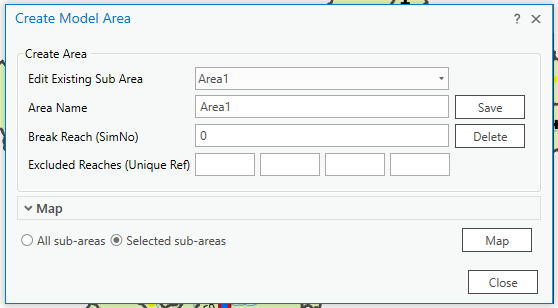
Figure 30 Create Model Area form
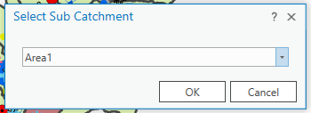
Figure 31 Select Sub Catchment box
Variations to basic model run
This following text describes how variations to the basic model run can be specified by clicking on the tick boxes on the form (Figure 29):
-
Add Sector Point Sources – adds point source information (this is the default condition). If the box is not ticked only diffuse inputs will be included in the dat file.
-
Add Sector Diffuse Sources box – adds the sector information derived from the Sector Load database (this is the default condition). If this is not ticked the SIMCAT models are created without the sector information (i.e. the pre SAGIS versions of the models are created in which diffuse inputs are derived from a user defined diffuse concentration rather than sector loads).
-
Highways as Loads and Diffuse Intermittents as Loads – change the way these sectors are input to SIMCAT as loads for each determinand, rather than the default condition of flows and concentrations.
-
NPD Diffuse Files – if ticked, non-parametric files are used to input diffuse loads (this is the default condition).
-
Recalculate Bird Inputs – if ticked, input loads from birds to lakes will be recalculated based in the entries using the Lake Settings form (see Chapter 11).
-
Sector Tracking – if ticked diffuse inputs from each marked model area will be tracked downstream (SIMCAT tracks inputs from point source inputs automatically). In order for the sector tracking to ‘work’ it is necessary that the waterbodies to be tracked have been ‘marked’. Waterbodies may be ‘marked’ for tracking by highlighting the waterbodies to be tracked (SimWaterbodies layer) and then selecting the Mark Waterbodies icon/tool located on the ribbon in the Editing Tools command set (see Chapter 14.13). Marking can be reset using the Clear Waterbodies icon/tool (see Chapter 14.14). A maximum of 100 waterbodies can be tracked (SIMCAT limitation). Note that tracking diffuse sector inputs increases the SIMCAT run time and the file size of the SIMCAT outputs.
-
Run Without Lakes – allows the user to switch off the inputs from lake outflows once the lake model has been run and these have been created (otherwise these are used as a default).
-
Overwrite Lake Tables – Ticking this box forces the table with information on local inputs of chemicals to the lake to be overwritten, otherwise existing values will be used.
-
Lakes Inputs, Estuary Inputs and Coastal Inputs – if these are ticked, SIMCAT output is generated at the boundaries between the river and lakes, estuaries and coastal waters, respectively, which are then used to calculate inputs to these water bodies (and used as inputs to the SAGIS Lake Model – Chapter 11).
-
Starting Points (x and y coordinates) – define the start and end of sub model reaches (as described in Section 9.2.1)
-
Add Plotting Points of Spacing (km) box – (1km is the default) sets the regular interval at which plotting points are created.
-
Exclude Sectors – Sectors can be selectively ‘switched off’ using the Exclude Diffuse Sectors and Exclude Points Sectors tick boxes.
-
Apply Monthly Data – Inputs monthly sector data but only if monthly loads have been created in the Land National Database. These are only applied if the Monthly option is selected for the sector and chemical on the Global Controls Settings form (Section *.*)
Calibration tables
Calibration adjustments (calculated outside SAGIS) can be applied using the Apply Calibration settings. Existing tables for water quality and flow are listed in the dropdown boxes. These are stored in the Regional Database and consist of adjustments to the diffuse flows and loads on a reach or catchment basis. The calibration tables must have the name FlowCalibrationTable and WQCalibrationTable with additional characters appended to differentiate between them. The calibration table is applied by selecting the required table from the dropdown box and ticking Apply Flow Calibration or Apply WQ Calibration for flow and water quality, respectively. Information on mapping the calibration factors is presented in Chapter 10.
Running SIMCAT
SIMCAT can be run directly from the GIS interface (Box 18) or using the stand alone SIMCAT interface (operation of this interface is described separately in the SIMCAT manual).
| 18 | Running SIMCAT from the GIS Interface |
|---|---|
| 1 | Click on the SIMCAT icon then Run SIMCAT (Figure 12) to open the Run SIMCAT form (Figure 32). |
| 2 | Select the dat file. |
| 3 | Click on the dropdown box to select the SIMCAT run option (Mode 0 to 11; the default option 0 should be applied) then tick the box Run Rivers (SIMCAT) before clicking on Run. |
| 4 | When SIMCAT runs the black SIMCAT screen appears and the run proceeds feature by feature. |
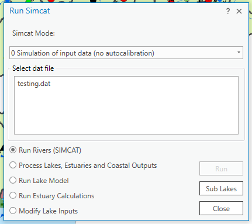
Figure 32 Run SIMCAT form
Visualisation of SIMCAT outputs
A range of visualisation options are available to present the results of the SIMCAT simulation which are presented below.
Plotting outputs
To map model outputs from SIMCAT:
| 19 | Plot Outputs |
|---|---|
| 1 | Click on the Plot Outputs button (which is available in the SAGIS tab on the ArcPro toolbar, Figure 4) then Plot Rivers to open the Plot River Outputs form (Figure 33). |
| 2 | Select the chemical substance of interest using the dropdown box. Output for all determinands can be generated in one operation by selecting All Chemicals.** |
| 3 | Select the location of the outputs points: all output locations (All), monitoring locations (Monitoring Stations - water quality and flow monitoring), or at water body boundaries (WB Boundary) as specified on the form. A special output format to prepare the inputs for MPER can also be selected which is described in Chapter 13. |
| 4 | For metals, select which partitioned fraction to plot, Total, Particulate or Dissolved using the option buttons in the Partitioned Outputs box. For other non-partitioned substances, the default of Total is applied. |
| 5 | Click on the Create Map button. |
| 6 | To change to mapped symbology adjust the options on the form and select Change Symbology.** |
An example of mapped output for rivers is shown below (Figure 34).
Once the map has been created, further options are available for viewing the data as specified in the Symbology Options part of the form. Further information on these options is presented below:
-
Concentration, Load or River Flow – changes the model output metric to be plotted.
-
Comp Prob – Plots the probability of compliance with the target or standard.
-
T Test 1 and T Test 2 – shows whether there is a significant difference (Bad) or no difference (Good) between the observed and simulated data using a stringent (simulated mean within 95% confidence limits of the observed data) and less stringent (overlap between the 95% confidence limits of the simulated and observed data) T Test.
-
Probability of WFD Class – plots the probability that the output data is with the selected WFD class.
-
Simulated, Observed or Difference – to select a plot of observed data, simulated model output or the difference between the simulated and observed (ratio simulated/observed).
-
Mean, 90th percentile, 95th percentile or 99th percentile – changes the model output metric to be plotted.
-
Cal Score – plots scores between 1 (lowest) and 25 (highest) for monitoring points. Scores reflect the closeness of fit between observed and simulated values. This score is calculated as follows based on the differences between the observed data and model outputs. The scores are the product of the ratio between the simulated and observed means and the degree of overlap between the confidence limits. Table 1 shows the derivation of the scores.
| Ratio between simulated and observed mean | Sim mean outside confidence limits of observed mean but overlap of confidence limits on same side of the observed mean | Sim mean outside confidence limits of observed mean but overlap of confidence limits on opposite side to the observed mean | Sim mean within confidence limits of observed mean but one or both Sim confidence limits outside observed confidence limits | Sim mean within confidence limits of observed mean and Sim confidence limits within observed confidence limits on the same side as observed mean | Sim mean within confidence limits of observed mean and Sim confidence limits within observed confidence limits either side of observed mean |
|---|---|---|---|---|---|
| \< 0.33 or >3 | 2 | 3 | 3.5 | 4 | 5 |
| 0.33 to 0.5 or 2 to 3 | 4 | 6 | 7 | 8 | 10 |
| 0.5 to 0.66 or 1.5 to 2 | 6 | 9 | 10.5 | 12 | 15 |
| 0.66 to 0.8 or 1.25 to 1.5 | 8 | 12 | 14 | 16 | 20 |
| >0.8 and \<1.25 | 10 | 15 | 17.5 | 20 | 25 |
Table 1 Scores and the ratio between the simulated and observed means and the degree of overlap between the confidence limits
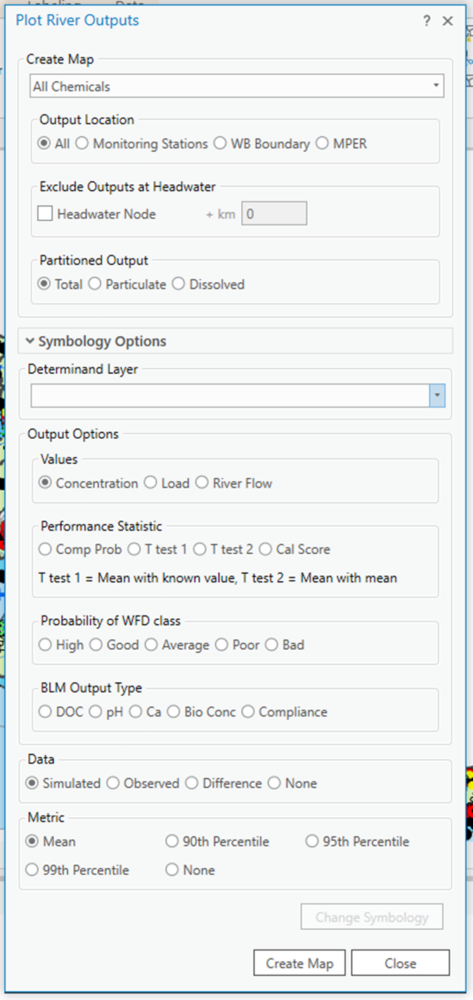
Figure 33 Plot River Outputs form
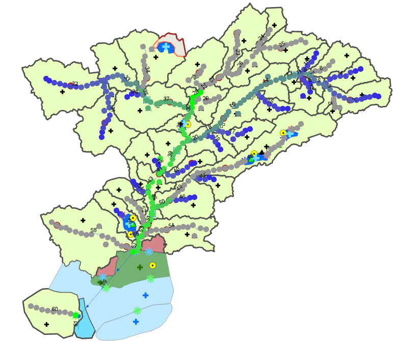
Figure 34 Example output generated by Plot Outputs tools
Once created, the symbology can also be edited using the standard ArcGIS interface (i.e. right click on the layer then click on Properties then Symbology).
The Lake Maps and BLM and MPER plots are described later in Chapter 11 (Lakes Model) and Chapter 13 (Bioavailability Model and MPER), respectively.
Mapping RQP
SIMCAT has been modified to carry out RQP type calculations at all wastewater discharges. This involves applying mass balance calculations to estimate downstream concentrations based on fixing the upstream concentrations to 50% of the Environmental Quality Standard or Target. The outputs of these calculations are contained in the *.EFF output file from SIMCAT (after it is run in Mode 11).
To read in the RQP output follow the steps described in the grey box.
| 20 | Mapping RQP Outputs |
|---|---|
| 1 | Click on the Plot Outputs button (which is available in the SAGIS tab on the ArcPro toolbar, Figure 4) then RQP to open the Plot RQP form (Figure 35). |
| 2 | Select Target, Nat Breaks or TargetBack. |
| 3 | Click on the RQP button. The RQP outputs are mapped for all selected chemical substances (e.g. Figure 36). |
Figure 35 Plot RQP form
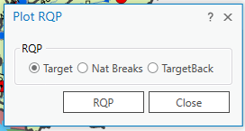
Figure 36 Example of RQP output
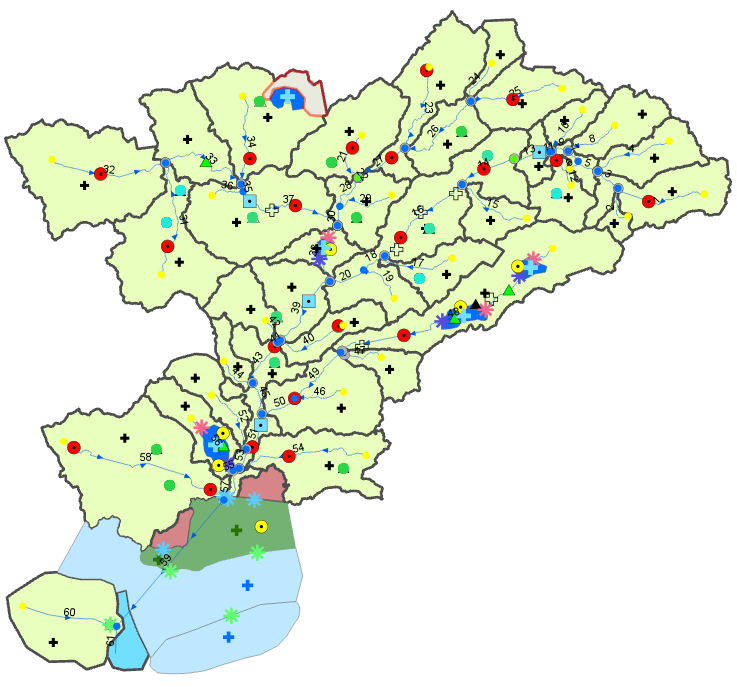
Many other outputs are contained in the mapped RQP layer which can be used to create other symbologies using the standard ArcGIS interface.
Mapping Input Data
The source data in the Land National Database 1 km grid (Chapter 3) can be plotted as follows:
| 21 | Mapping Input Load Grid |
|---|---|
| 1 | Click on the Display Grid button (which is available in the SAGIS tab on the ArcPro toolbar, Figure 4) to open the National loads per sq. km form (Figure 37). This requires the National Land database to be specified in the SAGIS Options form (see Chapter 2) |
| 2 | Using the top dropdown box, select the chemical substance of interest. |
| 3 | Using the lower dropdown box, select the table of interest (e.g. ArableFarming_CONC) and click on Apply Symbology which then creates the gridded map (e.g. Figure 38). |
Figure 37 National loads per sq. km form
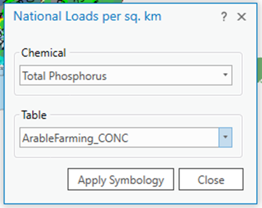
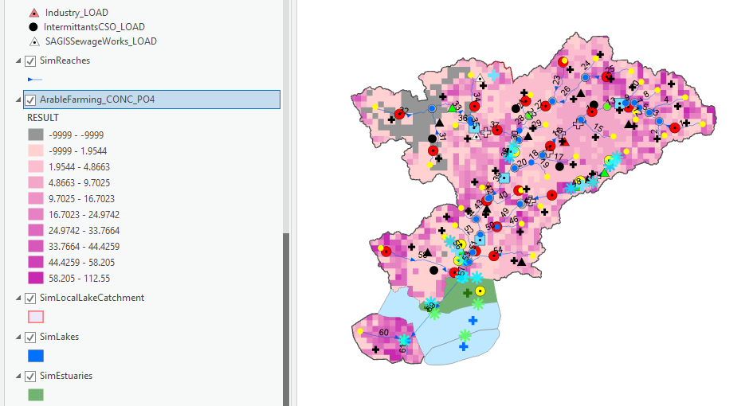
Figure 38 Example output generated by Plot Outputs tools
| 22 | Mapping Input Waterbody Loads |
|---|---|
| 1 | Click on the Display WBs button (which is available in the SAGIS tab on the ArcPro toolbar, Figure 4) to open the Regional loads per Waterbody form (Figure 39). |
2 |
Using the top dropdown box, select the chemical substance of interest. |
| 3 | Using the lower dropdown box, select the table of interest (e.g. ArableFarming_CONC) and click on Apply Symbology which then creates the gridded map (e.g. Figure 40). |
| 4 | If the Total Load option is selected, the total loads to the waterbodies are displayed and if the Load per km2 is selected the loads per km2 are displayed. |
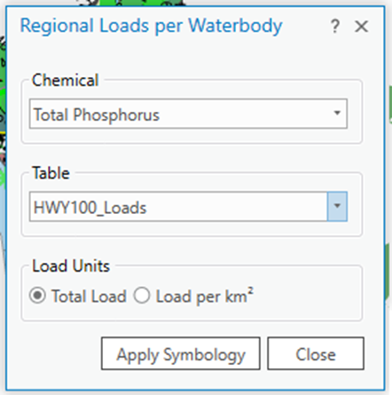
Figure 39 Regional loads per Waterbody form
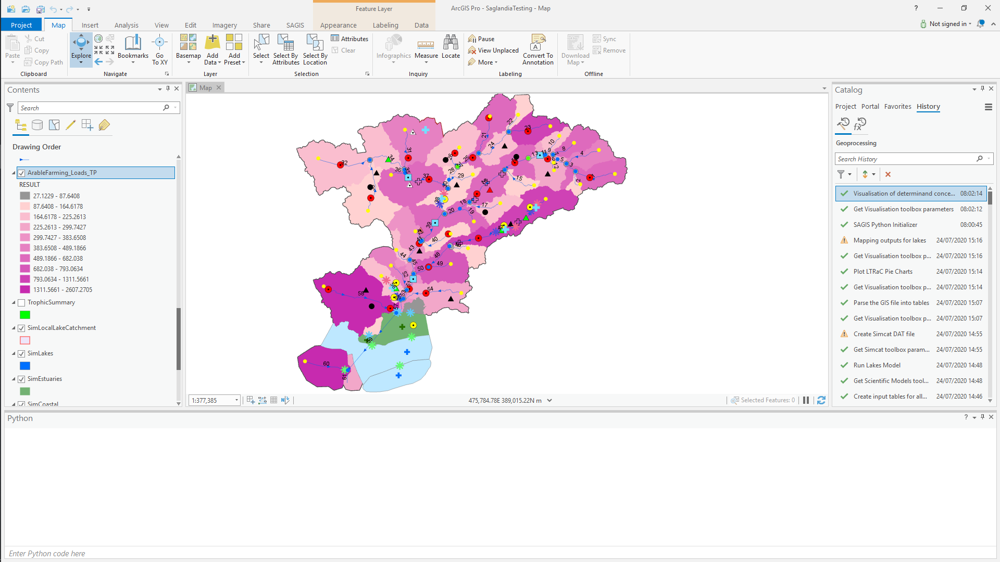
Figure 40 Example waterbody export load plot
Create Output Tables
Before the charts described in the following sections can be generated, the SIMCAT output files need to be processed by clicking on the Create Output Tables button. Three sets of output tables are created in the Regional Database:
-
Sewage works tables – at each waterbody outlet, the contributed loads from each upstream point source to the combined points source load are listed (table name = dat file name + ContributingSTWs).
-
Sector tables – output tables with the sector input and output loads and output concentrations at each waterbody boundary (input load table name = dat file name + ContributingInputs, output load table name = dat file name + ContributingOutputLoads and output concentration table name = dat file name + ContributingOutputs).
-
Upstream diffuse contribution tables – these tables show the contributing loads of all upstream marked catchment areas (e.g. waterbodies) and are created for each selected chemical substance and sector (table name = dat file name + Contributing + sector name; e.g. RiverDeeContributingArable).
| 23 | Create Output Tables |
|---|---|
| 1 | Click on the Create Output Tables button (which is available in the SAGIS tab on the ArcPro toolbar, Figure 4) to open the Create Output Tables form (Figure 41).** |
| 2 | The tick boxes specify which feature types to include in the table; STW, Outputs, Diffuse Sectors and Inputs. |
| 3 | Selecting a Waterbody Calibration Table from the dropdown will apply the calibration factors when creating the sector input tables. |
| 4 | Select the Fraction to be rendered; Total, Dissolved or Solid. This should typically be Total other than where the dissolved phase concentration is typically of interest (e.g. metals with bioavailability-based standards). |
| 5 | Select Run. |
Figure 41 Create Output Tables form
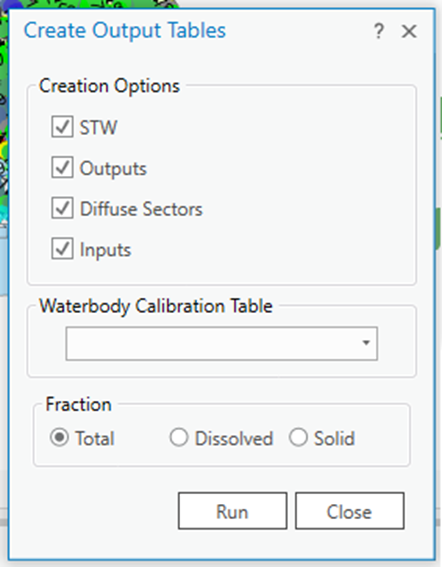
Sector pie charts
To generate pie charts:
| 24 | Create Sector Pie Charts |
|---|---|
| 1 | Click on the Plot Sector Charts button (which is available in the SAGIS tab on the ArcPro toolbar, Figure 4) which opens the Plot Sector Charts form (Figure 42). |
2 |
Click on the dropdown box to select the chemical substance of interest. Output for all determinands can be generated in one operation by selecting All Chemicals. |
| 4 | Click to select plot options within the Advanced River Options section of the form (Lakes, Estuaries and Coastal Margins are covered later in the manual). |
| 5 | Click on Run to create the pie charts. |
Further information on the Advanced River Options on the form are described below:
-
In-stream Conc – Sector apportionment chart for simulated concentrations at the waterbody outlet.
-
In-stream Load – Sector apportionment chart for simulated loads at the waterbody outlet
-
Input Load – Sector chart of the input load to each waterbody (this is adjusted by the calibration factors if this option was selected during the Create Output Tables stage).
-
Input Cumulative Load – Input load from all waterbodies upstream (including the load to the waterbody).
Figure 43 shows an example pie chart plot.
Figure 42 Plot Sector Charts form
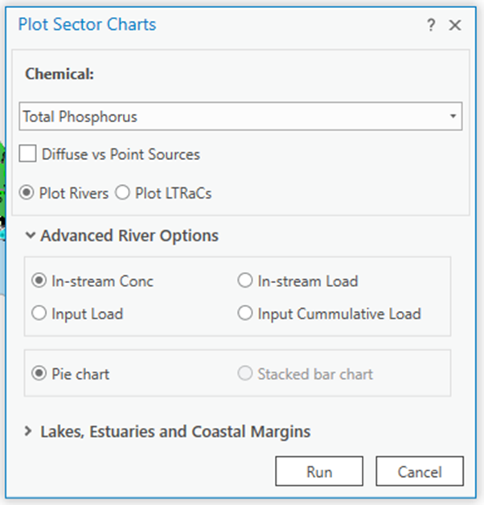
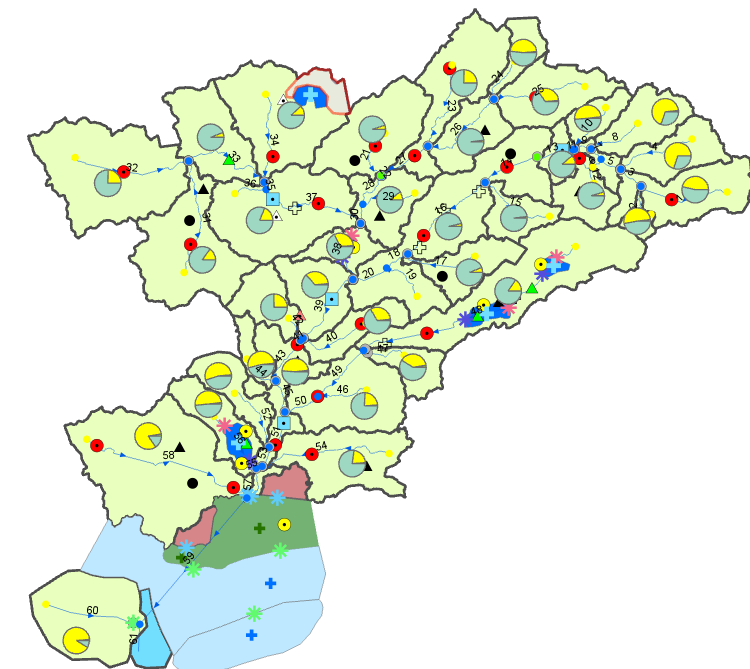
Figure 43 Example of source apportionment pie chart plot
If no sector information is available for a chemical (e.g. BOD), the pie charts show the relative contribution of diffuse and point sources. This output can be selected for chemicals with sector information by ticking the Diffuse vs Point Sources tick box.
Upstream contribution charts
Before these charts can be generated, the output tables must be created using Create Output Tables (Section 9.4.4). In the case of diffuse sources, Sector Tracking must be enabled on the Create SIMCAT File form and areas to track must be created (Section 9.3) before running SIMCAT to first create the tracking information in the SIMCAT output files. To create upstream contribution charts:
| 25 | Create Upstream Contribution Charts |
|---|---|
| 1 | Click on the Upstream Contribution Charts button (which is available in the SAGIS tab on the ArcPro toolbar, Figure 4) and then on either the Sector Charts or Point Source Charts option which opens the associated Upstream Contribution Charts form (for Sector Charts: Figure 44 and for Point Source Charts: Figure 45). |
| 2 | Select the Waterbody of interest from the dropdown list. |
| 3 | Select the chemical of interest using the Determinand dropdown box. |
| 4 | Specify the Point Source Options or diffuse Sector Options. |
| 5 | Click on Run to create the chart. |
Figure 44 Upstream Contribution form for Sector Charts
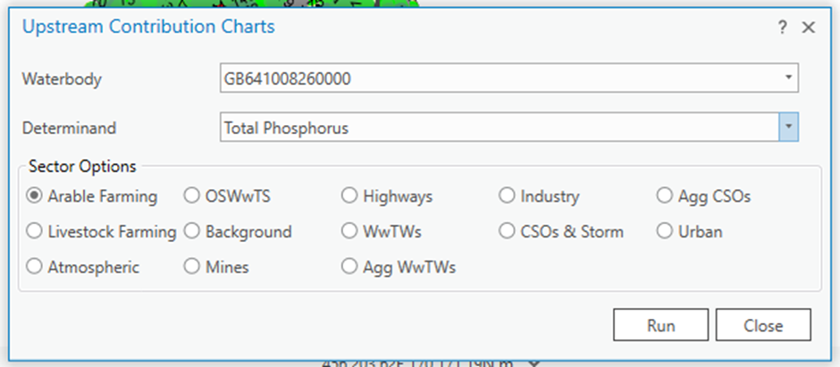
Figure 45 Upstream Contribution form for Point Source Charts
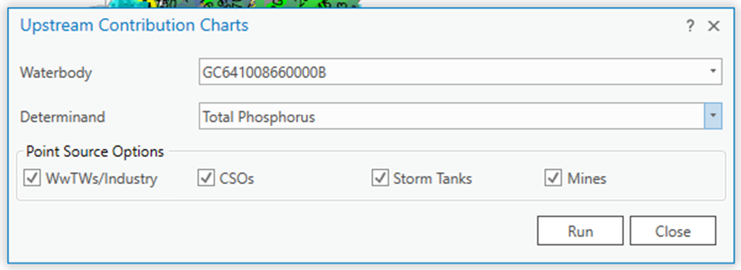
If point contributions are selected, bars will appear on the map showing the relative contribution of upstream point sources. If diffuse contributions are selected a coloured map is produced showing the relative loads from upstream catchments.
Mapped water body output charts
The Map Output tools takes the mapped point outputs generated by the Plot Output tools, and maps these onto the water body layer to show compliance and source apportionment at the waterbody spatial scale. To generate these outputs:
| 26 | Create Mapped Outputs Charts |
|---|---|
| 1 | Click on the Map Output button (which is available in the SAGIS tab on the ArcPro toolbar, Figure 4) which opens the Map Output form (Figure 46). |
| 2 | Select Determinand Layer and Sector of interest from the drop down lists. |
| 3 | Select a Model Output Location and an Output Option. |
5 |
Select the statistic to map from the Mapped Statistic box. |
| 6 | Click on Apply to create the chart. |
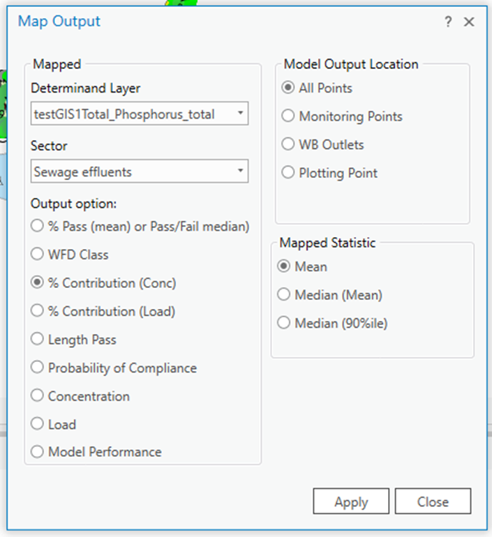
Figure 46 Map Output form
Further information on the mapping options is shown below:
-
All Points – all model outputs used to generate the waterbody statistics.
-
Monitoring Points – only model output at the monitoring points used to generate the waterbody statistics.
-
WB Outlets – only model output as the waterbody boundary used to generate the waterbody statistics.
-
Plotting Point – only model output at plotting points used to generate the waterbody statistics
-
Mean – mean of the mean concentration for the selected points.
-
Median (Mean) – median value of the mean concentration for the selected points.
-
Median (90%ile) – median value of the 90%ile concentration for the selected points.
-
% Pass (mean) or Pass/Fail (median) – the percentage of selected points that are compliant compared to the standard or whether the median value passes or fails if the median statistic has been specified.
-
WFD Class – WFD class of the selected points (only applies to chemicals with WFD classes) related to the average or median concentration.
-
% Contribution (Conc) – the percentage contribution of the sector selected using the dropdown box to the total concentration.
-
% Contribution (Load) – the percentage contribution of the sector selected using the dropdown box to the total load.
-
Probability of Compliance – average or median probability of compliance.
-
Concentration – average or median concentration.
-
Load – average or median load.
-
Model performance – average or median deviation between observed data and model output.
An example mapped output is shown in Figure 47.
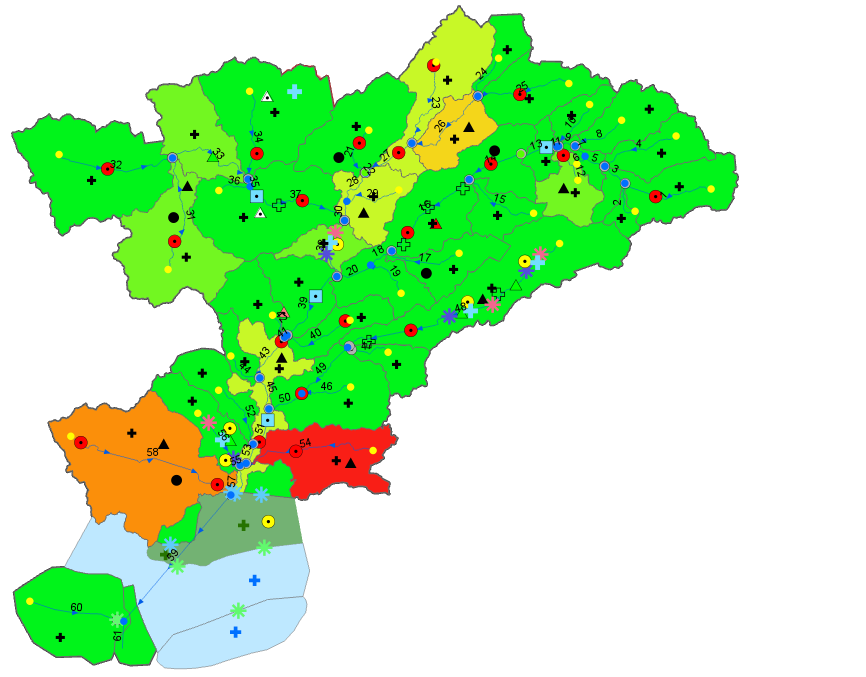
Figure 47 Example mapped output plot (% Contribution (Conc))
River chainage plots (Excel)
A chainage plot is a plot of model results and observed data along a continuous length of river between a start point and an end point. To create a chainage plot:
| 27 | Create Chainage Plot |
|---|---|
| 1 | Select the Excel Graphs icon (which is available in the SAGIS tab on the ArcPro toolbar, Figure 4) then River Chainage which opens the Plot River Chainage Graphs form (Figure 48). |
| 2 | Select the chemical of interest using the Determinand dropdown box. |
| 3 | Select the upstream reach as the Start Reach and the furthest downstream reach as the End Reach from the dropdown lists or Select on map. |
| 4 | Select the Fraction; Total, Dissolved or Solid. This should typically be Total other than where the dissolved phase concentration is typically of interest (e.g. metals with bioavailability-based standards). |
| 5 | Click Run. Following this a spreadsheet will appear automatically in the dat file folder. |
| 6 | Open the spreadsheet, then click on the Initialise Data button (in the Import_Controls tab; Figure 49) and Simulated and Observed Concentration chainage plots (e.g. Figure 50) will appear. The chainage plots can be modified by changing the settings (described below) on the worksheet. |
| 7 | Sector Chainage* and Probability of Compliance plots (e.g. Figure 51) can be viewed by selecting the See Load and Compliance Charts* button. The chainage plots can be modified by changing the settings on the worksheet. |
The settings that can be adjusted to modify chainage plots are described below (and are also detailed in the Excel spreadsheet):
-
Upstream Reach – upstream reach in chain.
-
Downstream Reach – downstream reach in chain.
-
Targets – displays the water quality targets on the plot (for WFD chemicals the High, Good, Moderate, Poor boundaries are shown).
-
Observed Data – displays the observed data on the plot.
-
Fixed Y Axis – Manual control on Y axis (id blank applies default).
-
Observed Confidence Limits – displays observed confidence limits.
-
Show Lake Data – shows lake data (if exists).
-
Reach markers – displays reach markers.
-
Mean, 90 Percentile, 95 Percentile, 99 Percentile – select the output statistic to plot.
-
Conc or Load – specifies if concentrations or loads are shown.
Figure 48 Plot River Chainage Graphs form
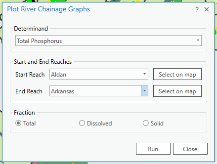
Figure 49 Chainage plots via Excel
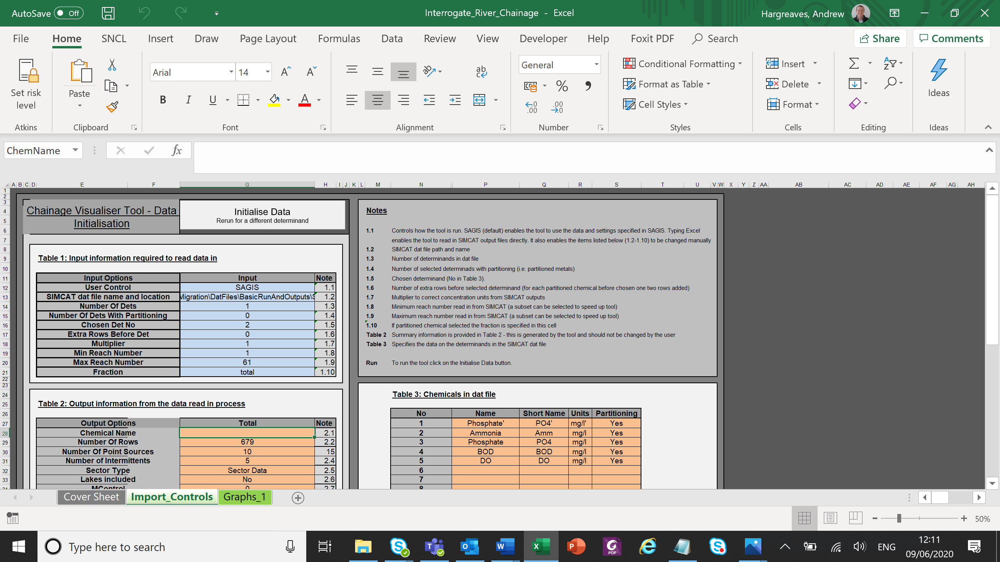
Figure 50 Example Simulated and Observed Concentration chainage plots
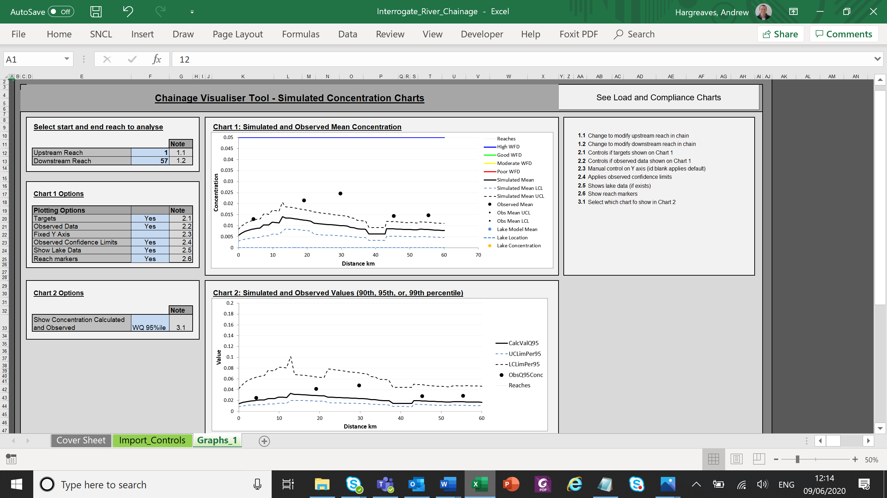
Figure 51 Example Sector Chainage and Probability of Compliance plots
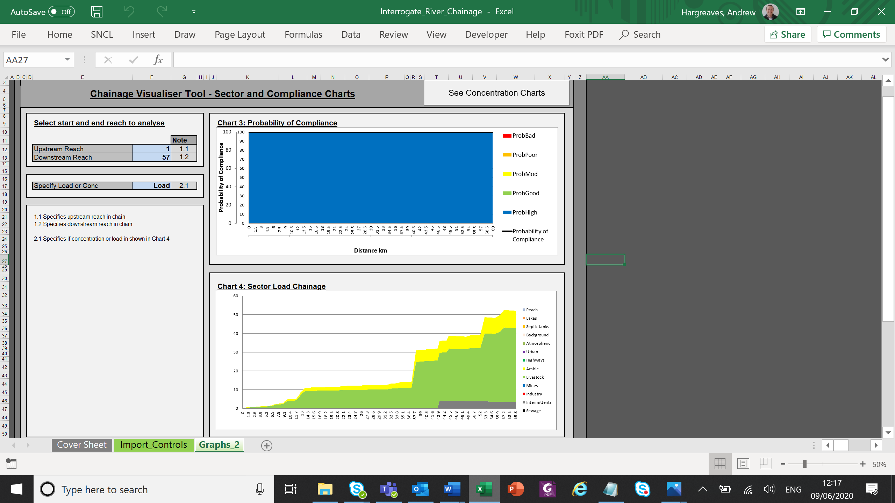
Calibration Adjustments and Calibration Tables
SIMCAT model calibration in SAGIS is based on making adjustments to diffuse inflows and to sector input loads. These can be applied by modifying the source data (i.e. Land National databases and flow data tables) or adjustment factors in the SimWaterbodies attributes table (Waterbody Settings). The preferred approach in SAGIS is, however, to create Flow and Water Quality Calibration tables that are applied during creation of the SIMCAT dat file (see Chapter 7). This allows calibration to be consistently applied independently of other changes that might be made to the source data (e.g. related to land use change or climate change). Other manual adjustments are combined with the adjustments in the calibration tables.
The format of the calibration table is shown in Chapter 17. In the Flow Calibration table, adjustment factors are defined for the Mean and Q95 flow for both Reach and Node (Headwater) inputs. In the Water Quality Calibration table, adjustment factors are defined for all input sectors. The coefficient of variation associated with each sector can also be set.
Calibration adjustments can be applied at either the reach or waterbody scale. Adjustments are applied as follows:
-
The Unique_ref specified in the calibration table is applied to the corresponding UniqueRef_ID in the SimReaches layer (i.e. for reach specific diffuse flows and input loads). It is recommended that a Unique_ref value should always present.
-
The adjustment to the reach diffuse inflow is also applied to the corresponding headwater node, but a further adjustment to the headwater node is applied if the adjustment factor for the node is not 1.
-
Note that if new reaches are created no calibration adjustment will be applied to them. The adjustment factor needs to be added to the table or the calibration repeated.
Once the calibration factors have been created these can be mapped using the Create SIMCAT File form:
| 28 | Mapping Calibration Adjustment Factors |
|---|---|
| 1 | Open the Create SIMCAT File form (Figure 52) by clicking on SIMCAT then Create SIMCAT File (Figure 12). |
| 2 | Select the Flow and Water Quality Calibration tables using the dropdown boxes in the Apply Calibration part of the form. |
| 3 | Select the metric to map using the left-hand side dropdown box in the Calibration Visualisation part of the form. |
| 4 | Select the sector to map using the right-hand side dropdown box in the Calibration Visualisation part of the form. |
| 5 | Click on Apply Symbology to create a map of the adjustment factors. |
Figure 52 Create SIMCAT File form
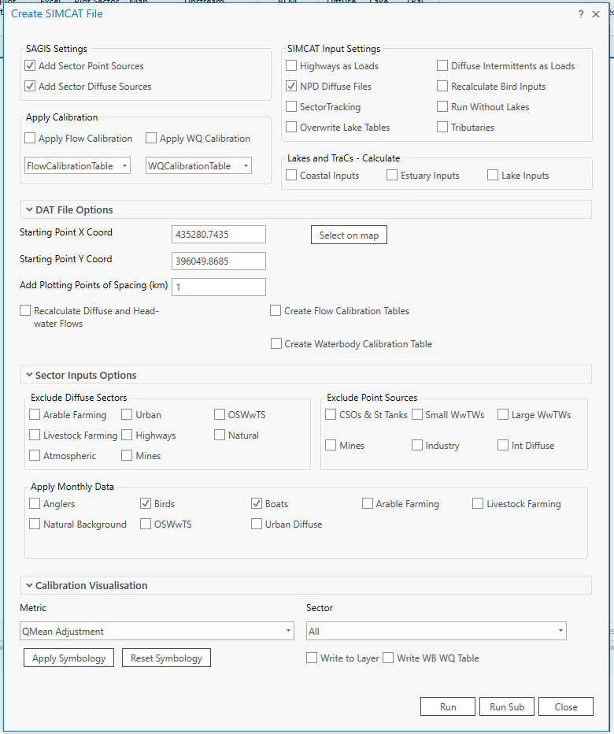
Import Calibration Data
To import the table listing the reach and determinand specific adjustments.
| 29 | Import Calibration Data |
|---|---|
| 1 | Click on the SIMCAT icon then Import Calibration Data (Figure 12) to open the form shown in Figure 53. |
| 2 | Select the location of the Input Excel File using the ArcGIS Pro dialogue box. |
| 3 | Select a location for the Output Table using the ArcGIS Pro dialogue box. |
| 4 | Insert the name of the Sheet in the Input Excel File that you want data to be extracted from. |
| 5 | Select the Run button. The Output Table is placed in the specified file geodatabase.** |
Figure 53 Import Calibration Data
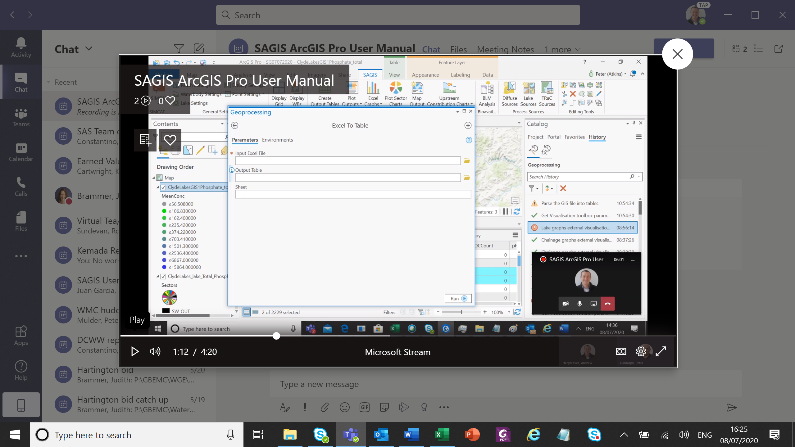
Running the SAGIS Lake Model and Viewing Outputs
SAGIS Lake Model
The SAGIS lakes model supports two types of model run:
-
The Fast mode model run is based on a fixed 30 years simulation with simplified parameter values. The input sectors are modelled in two groups, a) strongly driven by rainfall such as agricultural phosphorus and b) relatively constant, for example sewage works inputs. The sector concentrations associated with each group are pooled and modelled together within the lake then the lumped concentrations are split between the sectors, based on the relative size of their inputs. Chemical losses within the lake are modelled by a single parameter. No hydrological sequencing is applied in contrast to the second method. Monte Carlo iterations are not applied.
-
The Detailed mode model run is based on a Monte Carlo simulation for a specified number of shots (NShots). Concentrations and loads associated with each sector are simulated separately. For each shot, different parameter values are sampled between the upper and low bound and NShots annual simulations are carried out. The model run is repeated for a user specified number of years until a steady state is reached which can be assessed by plotting the time series model output. During the annual simulation, monthly sequences of random numbers are applied based on observed variations in river flow to simulate the effect of sequences of low (drought) and high (wet) flow periods on the concentrations. If a lake volume npd is specified the starting volume in each month’s simulation is chosen at random from the non-parametric distribution of lake volumes.
The chosen approach depends on the purpose of the model run. For example, to represent the influence of lakes on river water quality the Fast mode model would be used but for a detailed study on a particular lake, the Detailed mode model would be more appropriate.
Running the lake model
SIMCAT
Before running the SAGIS lake model, the SIMCAT dat file must be set up and run using the Create SIMCAT File form as shown below (Figure 54). The options in the Lakes and TraCs – Calculate section (within red box) must be ticked.
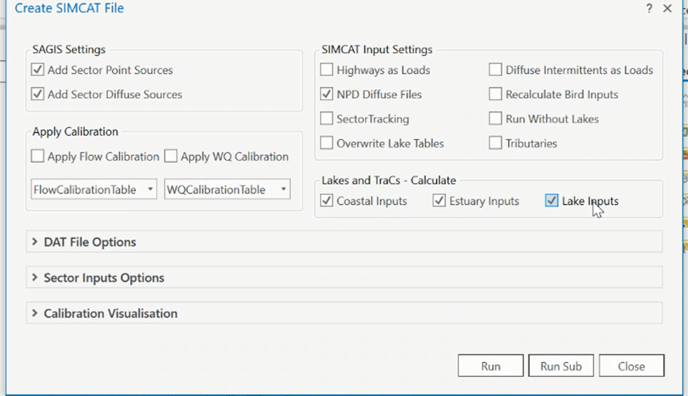
Figure 54 Create SIMCAT File form set up to create the inputs for Lakes
Setting up lake input tables
Before running the lake model two tables need to be created in the Regional Database which record the flow and water quality inputs to the lake to provide the input data to the SAGIS lake model; annual inputs (table name = dat file name + LakeInputs) and monthly inputs (table name = dat file name + LakeInputsMonthly). Corresponding tables are also created of the coefficient of variation (COV) and correlation coefficient (COR) for the inputs.
To create the lake input tables:
| 30 | Creating SAGIS Lake Model Input Tables |
|---|---|
| 1 | Click on the SIMCAT icon then Run SIMCAT (Figure 12) to open the Run SIMCAT form (Figure 55). |
| 2 | Tick Process Lakes, Estuaries and Coastal Outputs then click Run.** |
Running the SAGIS lake model
To run the SAGIS lake model:
| 31 | Running the SAGIS Lake Model |
|---|---|
| 1 | Click on the SIMCAT icon then Run SIMCAT (Figure 12) to open the Run SIMCAT form (Figure 62). |
| 2 | Tick Run Lake Model then click Run.** |
| 3 | This opens the Lake Model form. Modify the settings on the form, as required, then click the Run button to set the lake model running. |
Figure 55 Run SIMCAT form (for Lakes)
Figure 56 Lake Model form
Further information on the settings on the Lake Model form is provided below:
-
Number of Shots – sets the number of shots when running the lake model.
-
Determinands – sets the determinands to be Included and Excluded. Changes to which column a determinand features can be made using the >> and \<\< buttons.
When the model runs, it creates two output files in the Regional Database:
-
Summary results table (table name = dat file name + SIM).
-
Time series results (table name = date file name + SIMTS), only for the Detailed mode.
If only part of the regional model area has been run in SAGIS using the sub-area functionality (Section 9.2), only lakes included within the sub-area will be simulated when SIMCAT is run.
Incorporating model outputs into SIMCAT
Once the lake simulation has been carried out SIMCAT will take outflows from the lake generated by the Lake Model simulation to feed into SIMCAT downstream of each lake. SAGIS looks for files created by the lake model and if these are found they are used to modify the dat file to include output flows and concentrations from the lakes. This can be disabled by clicking on the Run Without Lakes tick box on the Create SIMCAT File form.
If more than one lake is present in the river chain, it is necessary to run SIMCAT again to take the outputs of the upstream lakes downstream then running the lake model again to simulate the effects of these changed inputs. This process may need to be repeated several times if there are several lakes in a chain.
Viewing the Lake Model outputs
A range of options are available to view the outputs from the SAGIS Lakes model.
Plot outputs
To create the lake plot outputs:
| 32 | Plot Lake Model Outputs |
|---|---|
| 1 | Click on the Plot Outputs button (which is available in the SAGIS tab on the ArcPro toolbar, Figure 4) then Plot Lakes to open the Plot Lake Outputs form (Figure 57). |
| 2 | Select the Lake Centroids or Sample Points option and check the Trophic Summary box as required. |
| 3 | Select Create Map. |
| 4 | Navigate to and click on a lake centroid or sample point on the map. A pop-up screen will appear (Figure 58). |
| 5 | The pop-up screen has a top and bottom section. In the top section, scroll down until the Trophic Summary option appears. |
| 6 | In this section choose the lake that you wish to view trophic summary data for. An image similar to that given in Figure 59 will appear. |
Figure 57 Plot Lake Outputs form
Figure 58 Lake outputs plotting pop-up
Figure 59 Trophic Summary
The trophic status analysis is based on using SAGIS to estimate:
-
R – Total inflow to the lake (m3/year)
-
J – Total input load of total phosphorus to the lake (mg/yr)
-
Tw - Retention time (yrs)
This information is then used to calculate a predicted in-lake total P concentration using OECD lake classification equations.

For lakes with a mean depth of >= 3 m, (a, b) = (1.55, 0.82). For shallow lakes with a mean depth \< 3 m, (a, b) = (1.02, 0.88). Similarly, Chlorophyll-a and Nitrate are calculated using further OECD equations.
Where a = 0.38 and b = 0.86
Where JN = Nitrogen Load, a = 5.34 and b = 0.78
Confidence limits are based on confidence limits in the OECD analysis. In addition, further calculations are carried out to assess whether Phosphorus, Nitrogen, Silica or ambient light is limiting for phytoplankton growth based on the methodology described by Reynolds & Maberly 2002[^2].
Further information on the key values reported in the Trophic Summary are provided below:
-
Mean Depth (m) – Mean lake depth.
-
Retention Time (yrs) – Lake retention time.
-
Predicted [P], [Chl-a] and [N] – Predicted annual mean total phosphorus, Chlorophyll-a and total inorganic nitrogen concentrations based on OECD equations.
-
Observed [P], [N] and [Chl-a] – Observed annual mean total phosphorus, Chlorophyll-a and total inorganic nitrogen concentrations based on OECD equations.
-
Light:P Chl-a ratio – Ratio of predicted chlorophyll-a limited by light and total phosphorus (i.e. if the ratio is below 1, phytoplankton are predicted to be limited by light rather than phosphorus).
-
N:P Chl-a ratio – Ratio between predicted chlorophyll-a limited by total inorganic nitrogen and P.
-
Si:P Chl-a ratio – Ratio between predicted chlorophyll-a limited by silica and total phosphorus.
-
N:P Ratio – Ratio between predicted total inorganic nitrogen and total phosphorus concentration.
-
Limitation – labels points to indicate if they are total inorganic nitrogen, silica, total phosphorus or light limited.
Selecting the buttons (WFD, OECD, Target or Clear) on the form (Figure 59) will apply the colour scheme to the rows in the table in which the values are reported (Figure 59) depending on the criteria specified:
-
WFD status – High (blue), Good (green), Moderate (yellow), Poor (red), Bad (brown)
-
OECD status – Oligotrophic (blue), Mesotrophic (green), Eutrophic (beige), Hypertrophic (grey)
-
Target – Pass (green), Fail (red)
-
Clear – no colour scheme
Plot charts
To create the lake pie charts:
| 33 | Create Lake Pie Charts |
|---|---|
| 1 | Click on the Plot Sector Charts button (which is available in the SAGIS tab on the ArcPro toolbar, Figure 4) which opens the Plot Sector Charts form (Figure 60). |
| 2 | Click on the dropdown box to select the chemical substance of interest. Output for all determinands can be generated in one operation by selecting All Chemicals.** |
| 3 | Tick the Plot LTRaCs button. |
| 4 | Select the plot options within the Lakes, Estuaries and Coastal Margins section of the form. |
| 6 | Click on Run to create the pie charts. |
Further information on the settings on the Plot Sector Charts form related to lakes is provided below:
-
Load (input), Conc (output) or Flow (input) – selects input loads, simulated lake concentration or input flow.
-
Sector or Input (river, direct, pumped) – selects sector inputs or the relative magnitude of inputs from direct river inflows, local inputs (including direct discharges) and pumped inputs.
Figure 60 Plot Sector Charts form
An example map is shown in Figure 61.
Figure 61 Example lake sector pie charts
Lake Plots (Excel)
As for data visualisation for rivers it is possible to visualise data for lakes via an excel spreadsheet:
| 34 | Create Lake Plots in Excel |
|---|---|
| 1 | Select the Excel Graphs icon then Lakes which opens the Plot Lake Graphs form (Figure 62). |
| 2 | Choose the Determinand to report data for from the dropdown list. |
| 3 | In the two dropdowns in the Sample Point section choose a lake (Waterbody) and Sample Point that you want data for from the dropdown lists or Select on map. These selections are mandatory with errors arising if no selection is made. |
| 4 | Select Run. Following this an Excel workbook will appear automatically in the dat file folder. |
5 |
Open the spreadsheet, then click on the Initialise Lake Data button (in the Import_Controls tab; Figure 63). Monthly charts including Chemical Concentration plot (e.g. Figure 64), Source Apportionment plot (e.g. Figure 65), Volume plot (e.g. Figure 66) and Flow plot (e.g. Figure 67) will appear. |
| 6 | Timeseries outputs can be viewed by selecting the See Yearly Charts button (these are only for lakes run in detailed mode) and include Yearly Concentration plot (e.g. Figure 68), Sediment Concentration plot (e.g. Figure 69), Sediment Flux plot (e.g. Figure 70) and Yearly Flow plot (e.g. Figure 71). |
| 7 | There is the facility to update the charts for another Lake and Sample Point within the same model by modifying the selection within the spreadsheet (in the Import_Controls tab; Figure 63). |
Figure 62 Plot Lake Graphs form
Figure 63 Lake plots via Excel
Further information on the information shown on the lake charts is provided below:
-
Mean, Percentile (%ile), Confidence Limits (Conf) – metric shown on chart.
-
Quality Target – shows the OECD Target or WFD Target on the chart.
-
Obs Data – shows observed data, if available, on the graph.
-
Sediment conc – shows the concentration in the sediment (only Detailed mode).
-
Sediment flux – shows the proportion of the concentration derived from the sediment input (only Detailed mode).
Figure 64 Example Lake Chemical Concentration chart
Figure 65 Example Lake Source Apportionment chart
Figure 66 Example Lake Volume chart
Figure 67 Example Lake Flow chart
Figure 68 Example Lake Yearly Chemical Concentration chart
Figure 69 Example Lake Sediment Concentration chart
Figure 70 Example Lake Sediment Flux chart
Figure 71 Example Lake Yearly Flow chart
Upstream contribution charts
Before these charts can be generated, the output tables must be created using Process Lakes, Estuaries and Coastal Outputs (Chapter 11.2.2).
To create upstream contribution charts:
| 35 | Create Lake Upstream Contribution Charts |
|---|---|
| 1 | Click on the Upstream Contribution Charts button (which is available in the SAGIS tab on the ArcPro toolbar, Figure 4) and then on either the Sector Charts or Point Source Charts option which opens the associated Upstream Contribution Charts form (for Sector Charts: Figure 44 and for Point Source Charts: Figure 45). |
| 2 | Select the Waterbody of interest from the dropdown list. |
| 3 | Select the chemical of interest using the Determinand dropdown box. |
| 4 | Specify the Point Source Options or Sector Options. |
| 5 | Click on Run to create the chart. |
Incorporating lake outputs into SIMCAT
Once the SAGIS lake model has been run the outputs are automatically fed back into SIMCAT (unless this is switched off on the Create SIMCAT File form - Chapter 9.1). When chainage plots have been created in Excel (Chapter 9.4.8), the influence of the lake can be shown on the chart by selecting Yes from the drop-down for the Show Lake Data option (Figure 72).
Figure 72 Show Lake Data on chainage plot
Running the Estuary and Coastal Waters Calculations and Viewing Outputs
SIMCAT
Before carrying out the Estuary and Coastal Water calculations, the SIMCAT dat file must be set up and run using the Create SIMCAT File form as shown below (Figure 73). The Coastal Inputs and Estuary Inputs tick boxes (within red box) must be ticked.
Figure 73 Create SIMCAT File form set up to create the inputs for Estuary and Coastal Waters
Setting up estuary and coastal waters input table
Information on the chemical inputs to the estuaries and coastal waters from all sources are created in the Regional Database for inputs (table name = dat file name + EstuaryInputs) and monthly inputs (table name = dat file name + EstuaryInputsMonthly).
To create the estuary and coastal waters input tables:
| 36 | Creating SAGIS Estuary and Coastal Waters Model Input Tables |
|---|---|
| 1 | Click on the SIMCAT icon then Run SIMCAT (Figure 12) to open the Run SIMCAT form (Figure 81). |
| 2 | Tick Process Lakes, Estuaries and Coastal Outputs then click on Run.** |
Figure 74 Run SIMCAT form
Estuary calculations
The estuary calculations are run by:
| 37 | Running the Estuary Calculations |
|---|---|
| 1 | Click on the SIMCAT icon then Run SIMCAT (Figure 12) to open the Run SIMCAT form (Figure 83). |
| 2 | Tick Run Estuary Calculations then click on Run.** |
Estuary and Coastal Waters Plot charts
To create the estuary and coastal waters pie charts:
| 38 | Create Estuary and Coastal Water Pie Charts |
|---|---|
| 1 | Click on the Plot Sector Charts button (which is available in the SAGIS tab on the ArcPro toolbar, Figure 4) which opens the Plot Sector Charts form (Figure 75). Click on the dropdown box to select the chemical substance of interest. Tick the Plot LTRaCs button. Click on the plot options within the Lakes, Estuaries and Coastal Margins section of the form. Click on Run to create the pie or stacked bar charts.. |
| 2 | Click on the dropdown box to select the chemical substance of interest. Output for all determinands can be generated in one operation by selecting All Chemicals. |
| 3 | Tick the Plot LTRaCs button. |
| 4 | Click on the plot options within the Lakes, Estuaries and Coastal Margins section of the form. |
| 5 | Click on Run to create the pie charts. |
Further information on the settings on the Plot Sector Charts form related to estuaries and coastal waters is provided below:
-
Load (input), Conc (output) or Flow (input) – selects input loads, simulated lake concentration or input flow.
-
Sector or Input (river, direct, pumped) – selects sector inputs or the relative magnitude of inputs from direct river inflows and local inputs (including direct discharges).
-
Inflow, Outflow or TSS – plots flow-weighted average of the inflow concentration, estimated outflow concentration based on dilution by seawater or total suspended solids concentration.
Figure 75 Plot Sector Charts form (Estuaries)
An example map is shown in Figure 76.
Figure 76 Example estuaries sector pie charts
Estuary Plots (Excel)
Two types of graph are available for output from the estuary calculations; total suspended solids plots and concentration plots. To generate these plots:
| 39 | Create Estuary Plots in Excel |
|---|---|
| 1 | Select the Excel Graphs icon (which is available in the SAGIS tab on the ArcPro toolbar, Figure 4) then Estuary which opens the Plot Estuary Graphs form (Figure 77). |
| 2 | Choose the Determinand to report data for from the dropdown list. |
3 |
In the two dropdowns in the Sample Point section choose an estuary (Waterbody) and Sample Point that you want data for from the dropdown lists or Select on map. |
| 4 | Select Run. Following this a spreadsheet will appear automatically in the dat file folder. |
| 5 | Open the spreadsheet and click on the Initialise Estuary Data button (in the Import_Controls tab; Figure 78). Charts including a Total Suspended Solids plot (e.g. Figure 79) and a Chemical concentration plot (e.g. Figure 80) will appear. |
| 6 | There is the facility to update the charts for another Estuary and Sample Point within the same model by modifying the selection within the spreadsheet (instructions are included within the worksheet itself). |
Figure 77 Plot Estuary Graphs form
Figure 78 Estuary plots via Excel
Total Suspended Solids plots (e.g. Figure 86) compare:
-
Freshwater – The TSS concentration that would result in the estuary due to the freshwater inputs and no other inputs (after mixing with seawater).
-
Sea – The TSS concentration that would result in the estuary from seawater if there were no other inputs.
-
Estuary – The observed TSS concentration.
Figure 79 Example Total Suspended Solids plot
Chemical concentration plots (e.g. Figure 87) show:
-
Inflow concentration – the average concentration in the influent water from all rivers and direct inflows.
-
Outflow concentration – concentration of water flowing out of the estuary after full mixing of freshwater and seawater.
-
Sediment concentration – the concentration in suspended sediment based on observed data.
-
Observed concentration – observed concentration.
Comparison of the plots shows the contribution of freshwater inputs and seawater to estuary concentrations compared to observed concentrations and those based on sediment concentrations.
Figure 80 Example Chemical concentration plot
Upstream contribution charts
Before these charts can be generated, output tables must be created using Process Lakes, Estuaries and Coastal Outputs (Chapter 12.2). To create upstream contribution charts follow the steps described in the box below:
| 40 | Create Estuary and Coastal Upstream Contribution Charts |
|---|---|
| 1 | Click on the Upstream Contribution Charts button (which is available in the SAGIS tab on the ArcPro toolbar, Figure 4) and then on either the Sector Charts or Point Source Charts option which opens the associated Upstream Contribution Charts form (for Sector Charts: Figure 44 and for Point Source Charts: Figure 45). |
| 2 | Select the Waterbody of interest from the dropdown list. |
3 |
Select the chemical of interest using the Determinand dropdown box. |
| 4 | Specify the Point Source Options or Sector Options. |
| 5 | Click on Run to create the chart. |
Bioavailability Model and MPER
SAGIS can be used to run MPER, a metal permitting tool developed for the Environment Agency. MPER carries out Monte Carlo RQP style mass balance calculations at single locations using statistical information on upstream and discharge flows and concentrations. The MPER functionality in SAGIS allows this information to be provided from the SAGIS databases. Model outputs from MPER run in batch mode can generate regional scale maps of MPER at selected wastewater treatment works.
Running MPER
Before running the tool, dissolved metal concentrations must first be modelled using SAGIS where partitioning has been applied to the total concentration sector inputs. Once SAGIS has created the SIMCAT dat file and SIMCAT has been run, the output needs to be plotted:
| 41 | Plot Mapped Model Output for BLM and MPER |
|---|---|
| 1 | Click on the Plot Outputs button (which is available in the SAGIS tab on the ArcPro toolbar, Figure 4) then Plot Rivers to open the Plot River Outputs form (Figure 33). |
2 |
Select the chemical substance of interest using the dropdown box. Output for all determinands can be generated in one operation by selecting All Chemicals. |
| 3 | Select the MPER option in the Output Location section of the form (Figure 33). |
| 4 | For total metals, select the partitioned fraction to plot by selecting Dissolved using the option buttons in the Partitioned Outputs box.. |
| 5 | Click on the Create Map button |
The data for DOC, pH and calcium can come from a number of sources:
-
Theisson polygons (created in the BLM Biostandards access database).
-
Observed data (BLMSamplePointQuality in the Common Database).
-
Output from SAGIS (DOC has been modelled in SAGIS previously).
-
SEPAs alkalinity and BLM model which is incorporated into SAGIS but only operates with Scottish data.
Operation of the SAGIS MPER tool varies depending on the sources of data. If SAGIS-SIMCAT output for DOC or the outputs from the SEPA tool are used, these must already be run and the output layer available in the table of contents.
To run the bio availability analysis tool:
| 42 | Running MPER |
|---|---|
| 1 | Select the SEPA Alkalinity and BLM model output or SAGIS-SIMCAT DOC model output if these are to be used as sources of data. |
| 2 | Highlight the wastewater treatment works on the map for which outputs are required. An option is also available to run all works. |
| 3 | Click on the MPER button to open the MPER form (Figure 81). |
| 4 | Select the options in the Data Sources section of the form. This determines where the DOC, calcium and pH data is sourced. |
| 5 | Click on Calculate Stds and select the BLM database as prompted (e.g. BioConcData.mdb). Data is gathered for pH, DOC and calcium which is populated into the existing mapped output layers of the selected metals. |
| 6 | Populate the MPER Options part of the form and click on Create MPER File. This opens a dialogue to select a name for the file. |
| 7 | Click on Run MPER to run MPER (a black screen appears with model output, similar to SIMCAT). |
| 8 | Click on Map MPER and select the MPER output file as prompted to create a new mapped layer with the MPER outputs for each of the selected chemical substances (e.g. Figure 82). This is colour based on the ratio of the downstream concentration and the standard. |
Figure 81 MPER Analysis form
Further information on the settings on the MPER form is provided below:
-
Interpolate – When calculating the dissolved equivalent of the BLM standard using the lookup table in the BLM database, values are interpolated; otherwise the closest value is applied.
-
DOC Layer – applies the DOC Theisson polygon layer in the BioStandard database to input DOC.
-
DOC Model – applies either SAGIS-SIMCAT output or SEPA model DOC to input DOC (this layer needs to be selected in the table of contents first).
-
DOC Observed – applies upstream observed values from the BLMSamplePointQuality table in the Common database. This is used in combination with one of the other DOC input options, replacing the mapped information with the local observed data if this is available.
-
Ca Layer – applies the Ca Theisson polygon layer in the BioStandard database to input Ca.
-
Ca Model – applies the SEPA model Ca (this layer needs to be selected first) to input Ca (this can only be applied for the Scottish models at present).
-
Ca Observed – applies upstream observed values from the BLMSamplePointQuality table in the Common database. This is used in combination with one of the other Ca input options, replacing the mapped information with the local observed data if this is available.
-
pH Layer – applies the pH Theisson polygon layer in the BioStandard database to input pH.
-
pH Model – applies the SEPA model Ca (this layer needs to be selected first) to input pH (this can only be applied for the Scottish models at present).
-
pH Observed – applies upsteam observed values from the BLMSamplePointQuality table in the Common database. This is used in combination with one of the other pH input options, replacing the mapped information with the local observed data if this is available.
-
All STWs – applies the calculations to all wastewater treatment works (in SimFeatures).
-
Selected STWs – applies the calculations only to highlighted wastewater treatment works (in SimFeatures).
-
Transparent – makes the SAGIS layers transparent with mapping the MPER output to make it clearer.
-
Target Fraction – when this is ticked the upstream concentration is set to the specified fraction of the dissolved equivalent of the BLM standard.
-
Deterioration – when this is clicked MPER applies a deterioration assessment against the specified percentage deterioration.
-
Partitioned – ticked when the metal concentrations have been simulated by partitioning.
-
Sensitivity – applies MPER sensitivity calculations outputs from which are issued in the outputs.
-
Reach Metal – if ticked applies, the observed upstream metal concentration is available upstream in the same reach.
-
Create table – if ticked, a table is created in the regional database when the MPER input file is created as a record of the outputs.
-
Works DOC – A default value is applied for the discharge DOC (from the Def STWQual table in the Common database). However, when ticked the value is replaced by the observed data if this is found in the BLMSamplePointQuality table in the Common database).
-
Upstream Obs – if ticked, applies the observed DOC, pH or calcium if available on the same reach upstream of the discharge.
-
Ca pH Corrlation – correlation between calcium and pH.
Figure 82 Example mapped output from MPER (coloured squares show ratio of bioavailable concentration and bioavailable concentration standard at locations with discharges)
SAGIS Tools
In addition to the SAGIS interface that drives the SAGIS-SIMCAT functionality, several tools have been created to support model building and analysis. These are run by clicking on icons shown below. Details of the operation and function of these tools is provided in this chapter.
Additional model build tools are available on the ribbon in the Editing Tools command set (Figure 83).
Figure 83 GIS processing tools
New Reach
This tool is used to add a new reach to the SimReaches river polyline. To add a new reach:
| 43 | Create New Reach |
|---|---|
| 1 | Click on the New Reach tool which creates a cross hair cursor. Click on the map on the line of the new reach starting at the location of the start of the reach. Each click creates a new vertex then double click when the reach joins the existing polyline. |
| 2 | A new reach and headwater node will be added. The old reach will also be split at the new confluence and a new node added at the confluence. |
| 3 | Further information is added to the reaches including a new unique reference, length, reach type, waterbody ID and other information collected from the existing reaches. |
| 4 | Further information on the new reach needs to be added manually including the name and alpha and beta. |
| 5 | The addition of the new reaches requires recalculation of the reach connectivity. After the new features have been created, a Yes/No prompt appears asking to recalculate connectivity. If several reaches are to be added it is best to wait until the last is complete to recalculate the connectivity. Alternatively, the connectivity can be recalculated using the Create SIMCAT File form. |
Split Reach
This tool is used to split an existing reach to the SimReaches river polyline. To split the reach:
| 44 | Split Reach |
|---|---|
| 1 | Click on the Split Reach tool which creates a cross hair cursor. Click on the map on the river polyline where the river needs to be split. |
| 2 | A prompt indicates the X and Y location of the split. |
| 3 | The existing reach is split and new continuation node added between the new reaches. |
| 4 | A new unique ID is created for the downstream reach and reach lengths calculated. Other values such as diffuse inputs are derived from the previous reach. |
| 5 | Splitting the reach requires recalculation of the reach connectivity. After the reach has been split, a Yes/No prompt appears asking to recalculate connectivity. If several reaches are to be modified it is best to wait until the last is complete to recalculate the connectivity. Alternatively, the connectivity can be recalculated using the the Create SIMCAT File form. |
New Feature
| 45 | Add New Feature |
|---|---|
| 1 | Click on the New Feature tool which creates a cross hair cursor. |
| 2 | Click on the map where the new feature is to be added. This opens the Create Point Feature form (Figure 84). |
| 3 | Select the feature type on the form and click Create. |
| 4 | The new feature is created with the location, GISCode, waterbody reference and reach location. Further information needs to be added such as the feature name and water quality code reference. |
Figure 84 Create Point Feature form
Convert SAGIS Load
To convert SAGISPointFeature_LOAD features to a SimFeature:
| 46 | Converting Load to Flow features |
|---|---|
| 1 | The flow statistics associated with the SAGISPointFeature_LOAD first need to be calculated and entered in the following attributes table fields FLOW_MEAN, FLOW_Q95 and FLOW_CORR (mean flow, standard deviation of flow and the correlation between discharge flow and river flow) in the SAGISPointFeature_LOAD layer. These can be calculated from the loads already in the layer and a default concentration. |
| 2 | Select the features to be converted (e.g. using Select by Attributes). |
| 3 | Click on the tool. A Yes/No prompt appears asking to remove the old SAGISPointFeature _LOAD features from the map and database. |
| 4 | The new SimFeatures appear on the map with data transferred from the SAGISPointFeature_LOAD layer (e.g. name, location etc.), but other data in the attributes table needs to be added. |
Delete Feature
| 47 | Delete Feature |
|---|---|
| 1 | Select feature to delete. |
| 2 | Click on the Delete Feature icon. |
| 3 | The number of features selected is indicated and a prompt appears to proceed with deleting each feature type in turn. |
Reverse Reach Direction
| 48 | Reverse Reach Direction |
|---|---|
| 1 | Make the project non-editable. |
| 2 | Select the reach. |
| 3 | Click on the Reverse Reach Direction tool to reverse the reach direction. |
Allocate Feature to Waterbody
| 49 | Allocate Feature to Waterbody |
|---|---|
| 1 | Click on the Allocate Feature To Waterbody tool to allocate waterbodies and point source inputs to inland rivers, estuaries and coastal waterbodies based on their location. It is used as part of the model build process. |
Headwater Area
| 50 | Calculate Headwater Area |
|---|---|
| 1 | Click on the Headwater Area tool to calculate the headwater area (written to the UpArea field in the SimNodes attributes layer). |
Allocate WB Reference
| 51 | Allocate Waterbody Reference to Rivers |
|---|---|
| 1 | Click on the Allocate WB Reference tool to allocate the waterbody reference to the reaches. |
Split Waterbody
| 52 | Split Waterbody |
|---|---|
| 1 | Select the waterbody to split. |
| 2 | Click on Split Waterbody tool. This creates a cross hair cursor which is used to click on the map along the line where the waterbody is to be split. |
| 3 | A prompt asks the user to provide an extension to the waterbody ID for the new waterbody (this is added to the existing waterbody ID). |
| 4 | A prompt asks the user if the waterbody flow inputs (in the Regional Database table WB_FlowEstimates) are to be modified (i.e. split between the two waterbodies based on area). |
| 5 | The user is prompted to apply other tools to update the waterbody ID references in the other layers (e.g. SimFeatures, SimReaches etc.). This needs to be carried out separately. |
| 6 | Note that processing of Diffuse Sources (Section 3.1) must be re-run to align the diffuse sector inputs with the revised waterbody layer. |
Make Transparent
This icon is used to make the feature layers transparent to make the output symbology clearer on the map:
| 53 | Make Transparent |
|---|---|
| 1 | Click on the Make Transparent tool. |
| 2 | Specify the % transperency as prompted and click OK to apply. |
Repair
This tool repairs corrupted GIS layers:
| 54 | Repair Layers |
|---|---|
| 1 | Highlight a layer in the table of contents then click on the Repair tool to apply repair. This is used to repair layers that have become corrupted. |
Mark Waterbodies
| 55 | Mark Waterbodies |
|---|---|
| 1 | Select the waterbodies to be marked. |
| 2 | Select the Mark Waterbodies tool to apply mark. |
Clear Waterbodies
| 56 | Clear Waterbodies |
|---|---|
| 1 | Select the waterbodies for which mark to be cleared. |
| 2 | Select the Clear Waterbodies tool to remove mark. |
Migrate Databases
This tool is used in the process for converting pre-existing Access databases (used in the ArcMap version of SAGIS) into file geodatabase format required by the ArcGIS Pro version of SAGIS (for more detail see Chapter 15).
Delete, Copy/Paste and Edit File Geodatabase Tables using ArcGIS Pro Interface
| 57 | Delete, Copy/Paste and Edit File Geodatabase Tables using ArcGIS Pro Interface |
|---|---|
| 1 | Open the ArcGIS Pro Catalog by selecting Catalog View (located in the View tab) and navigate to a File Geodatabase Table added to a project. |
| 2 | Right click and select Delete from the options to delete a table. |
| 3 | Right click and select Copy; then navigate into a File Geodatabase and Paste to include a copy of a File Geodatabase Table in a File Geodatabase (if a File Geodatabase Table with the same name already exists then an appendix will be applied to the name e.g. ‘_1’). |
| 4 | To edit a File Geodatabase Table, right click and select Add to Map.** |
| 5 | Right click on the table in the Contents pane and select Open. |
| 6 | Double click on a cell within the table to make a modification. |
| 7 | Once modification(s) have been made, select the Save button in the Edit tab which opens the Save Edits form (press Show Edits to reveal the tables where edits have been made). |
| 8 | Select Yes to save edits made. |
Converting Database Formats
SAGIS connects and uses data from various databases, that are either common or specific (i.e. regional model databases). Whereas in the ArcMap version of SAGIS these databases exist in Microsoft Access database format (this is a legacy format), the ArcGIS Pro version of SAGIS requires data to be stored in file geodatabase format. The file geodatabase format offers numerous advantages over the Access database format, in particular, that the file geodatabase equivalents of pre-existing Access databases are much smaller in size and have a much larger maximum file size (1tb vs 2gb). Because of the transition of SAGIS to the ArcGIS Pro platform, all pre-existing model databases must be converted to the new file geodatabase format. This chapter describes a series of management tasks that should be undertaken prior to converting databases from the legacy Access format to the file geodatabase format, as well as the process for converting the databases.
- Database management and trouble shooting
There are two classes of data that need to be managed, namely, tables and feature classes (i.e. tables with associated geometry and coordinates which typical have a ‘Shape_Index’ extension). It is strongly recommended that modifications, edits and deletions are made to the databases using Arc Catalog, either in ArcMap, or ArcGIS Pro after the conversion. Attempting these actions with Microsoft Access directly will risk that data becomes mismatched or corrupted which may have implications for the database migration and subsequent use within ArcGIS Pro. For example, tools such as ArcCatalog automatically ‘group’ the components of feature class data so that data tables and their corresponding geometry components are visible as a single entity whereas in Access these are visible as separate entities. To avoid deleting or corrupting any necessary data, it is advised that no tables or feature classes are deleted from the original databases, but rather only the necessary data is copied into the new file geodatabase using Arc Catalog. It is, however, an opportune time to remove unnecessary data (e.g. old outputs or intermediate data). Users should also, of course, confirm that models are fully operational prior to the file type conversion (e.g. test the open and update, dat file creation, outputs plotting functions).
Information on tables and feature classes are summarised in four tables in this document to support data management and migration processes as well as identifying common issues that have been found to cause problems. These are:
-
Table 1 lists the tables in each regional model database, indicating those which are required, optional, and the essential meta data tables that are typically not visible to users. This also lists tables that are frequently found in regional model databases, but which have subsequently been deprecated in the course of SAGIS development and that are no longer required (i.e. unnecessary for these to be transferred).
-
Table 2 lists the feature classes required for each regional model database.
-
Table 3 lists the fields that should be present in the DeterminandsForSIMCAT table in the common tables database. The structure of this table has changed in recent years and legacy versions of this table may be missing fields that will generate errors with both the latest ArcMap and ArcPro versions of SAGIS. Prior to the database migration, modellers should substitute legacy versions of the DeterminandsForSIMCAT table with that present in the common tables database distributed with the Saglandia database if an update is required.
Common Issues and Troubleshooting
- Table 4 lists a series of common data related issues that have been uncovered in databases in the course of working with (certain) live models that have been found to cause difficulties. The ‘DB’ field indicates if the issue relates to the common tables database (C) or the regional model database (R). Users should check and, if necessary, rectify issues prior to creating new databases. Please note that this list is not definitive – it is probable that other data-related issues will exist. Please also note that tables containing fields with the character length set to maximum (>2 million characters) will cause a memory error even if the field is not used by code directly. Fields with this type of formatting are likely to be indicative of database corruption and so, if any single instance is identified it is possible that other instances will be found. However, this is the only known cause of memory related errors encountered in testing thus far.
| No | Name | Comments | Status |
|---|---|---|---|
| 1 | AbstractionNPDs | Not present in all models - only where previously set up | Optional |
| 2 | Anglers_CORCOEFF | Required | |
| 3 | Anglers_LOAD | Required | |
| 4 | Anglers_STDDEV | Required | |
| 5 | ArableFarming_CONC | Created to test functionality to add sector inputs as concentrations | Optional |
| 6 | ArableFarming_CORCOEFF | Required | |
| 7 | ArableFarming_Loads | Required | |
| 8 | ArableFarming_pKMReach | Required | |
| 9 | ArableFarming_STDDEV | Required | |
| 10 | AtmosphericDeposition_CORCOEFF | Required | |
| 11 | AtmosphericDeposition_Loads | Required | |
| 12 | AtmosphericDeposition_pKMReach | Required | |
| 13 | AtmosphericDeposition_STDDEV | Required | |
| 14 | Atmospheric_CORCOEFF | Deprecated | |
| 15 | Atmospheric_LOAD | Deprecated | |
| 16 | Atmospheric_STDDEV | Deprecated | |
| 17 | BirdCounts | Required | |
| 18 | Birds_CORCOEFF | Required | |
| 19 | Birds_LOAD | Required | |
| 20 | Birds_STDDEV | Required | |
| 21 | Boats_CORCOEFF | Required | |
| 22 | Boats_LOAD | Required | |
| 23 | Boats_STDDEV | Required | |
| 24 | CalculationType | Legacy from national SIMCAT models - not used by SAGIS | Deprecated |
| 25 | CalDiffuseFlow | Deprecated | |
| 26 | CalHeadWaterFlow | A critical value in this table exists in a field named ‘FivePercentFlow’. However, in certain models the field is named ‘F5PercentFlow’. This discrepancy causes the ‘FLOW_NPILE’ value in the SimFeatures table not to be updated. The correct field name is ‘FivePercentFlow’ and databases should be updated accordingly. This issue affects four tables, namely ‘SimRiverFlowGauges’, ‘CalHeadWaterFlow’, ‘SimOtherFeatures’ and ‘Type13Flow’. All tables should be updated. | Deprecated |
| 27 | DBLocations | Deprecated | |
| 28 | DefDiffuseWBFlow | Also in national common database but if present in the regional model database these take precedent | Optional |
| 29 | DefSTWQual | Also in national common database but if present in the regional model database these take precedent | Optional |
| 30 | DeterminandPrediction | Legacy from national SIMCAT models - not used by SAGIS | Deprecated |
| 31 | DeterminandType | Legacy from national SIMCAT models - not used by SAGIS | Deprecated |
| 32 | DiffuseQuality | Legacy table, previously used to apply reach specific diffuse inputs for non-sector determinands (e.g. BOD, ammonia). Values in this table will take precedence of values in the ‘DefDiffuseQual’ table | Required (table must be present but is usually blank) |
| 33 | DiffuseScenarios | Optional | |
| 34 | FlowNPDs | Not present in all models - only where previously set up | Optional |
| 35 | GeneralAttributes | Required | |
| 36 | GeneralSettings | Required | |
| 37 | HeadWaterQuality | Legacy table, previously used to apply headwater specific diffuse inputs for non-sector determinands (e.g. BOD, ammonia). Values in this table will take precedence of values in the ‘DefHeadQual’ table | Required (table must be present but is usually blank) |
| 38 | HighwayRunoff_CORCOEFF | Required | |
| 39 | HWYTOTAL_Load | Any table ending in "Load" rather than “Loads” (note the ‘s’) should be removed | Deprecated |
| 40 | HWY100_Loads | Required | |
| 41 | HWY100_pKMReach | Required | |
| 42 | HWY20_Loads | Required | |
| 43 | HWY20_pKMReach | Required | |
| 44 | HWY40_Loads | Required | |
| 45 | HWY40_pKMReach | Required | |
| 46 | HWY60_Loads | Required | |
| 47 | HWY60_pKMReach | Required | |
| 48 | HWY80_Loads | Required | |
| 49 | HWY80_pKMReach | Required | |
| 50 | HWYTOTAL_Loads | Required | |
| 51 | HWYTOTAL_pKMReach | Required | |
| 52 | LakeMonthlyRatesSRR | Required | |
| 53 | LakeMonthlyRatesSSR | Required | |
| 54 | LakesData | Required | |
| 55 | LakeVolNPDs | Not present in all models - available only where previously set up | Optional |
| 56 | LakeWBAreasTable | Optional | |
| 57 | LivestockFarming_CORCOEFF | Required | |
| 58 | LivestockFarming_Loads | Required | |
| 59 | LivestockFarming_pKMReach | Required | |
| 60 | LivestockFarming_STDDEV | Required | |
| 61 | ModelRun | Legacy from national SIMCAT models - not used by SAGIS | Deprecated |
| 62 | MonthlyFeatureData | Not present in all models – available only where previously set up although table must be present (even if empty) | Optional |
| 63 | NaturalBackground_CORCOEFF | Required | |
| 64 | NaturalBackground_Loads | Required | |
| 65 | NaturalBackground_pKMReach | Required | |
| 66 | NaturalBackground_STDDEV | Required | |
| 67 | OSWwTS_CORCOEFF | Required | |
| 68 | OSWwTS_Loads | Required | |
| 69 | OSWwTS_pKMReach | Required | |
| 70 | OSWwTS_STDDEV | Required | |
| 71 | SAGISPFL | Used to return the SAGISPointFeature_LOAD layer to original values - if point features and/or data have been edited, this table must be removed | Optional |
| 72 | SimAbstractions | The table in the regional database contains fields named as ‘SIM_FEATURE_TYPE’ and ‘SIMFEATURETYPE’. In the English and Welsh regional models, the field with underscores is normally populated, whereas the other one is blank. In Scottish models, it seems to be the other way around. The code has been standardised to use data in the ‘SIM_FEATURE_TYPE’ field therefore where relevant data exists in the ‘SIMFEATURETYPE’ field this should be transferred to the ‘SIM_FEATURE_TYPE’ field. | Required |
| 73 | SimConnectivity | Required | |
| 74 | SimDiffuseWBTable | Optional | |
| 75 | SimDischarges | Required | |
| 76 | SimFeaturesMonthly | Not present in all models - only where previously set up | Optional |
| 77 | SimFeatureTypes | Legacy from national SIMCAT models - not used by SAGIS | Deprecated |
| 78 | SimLakeWQSettings | Required | |
| 79 | SimNodeTypes | Legacy from national SIMCAT models - not used by SAGIS | Deprecated |
| 80 | SimOtherFeatures | A critical value in this table exists in a field named ‘FivePercentFlow’. However, in certain models the field is named ‘F5PercentFlow’. This discrepancy causes the ‘FLOW_NPILE’ value in the SimFeatures table not to be updated. The correct field name is ‘FivePercentFlow’ and databases should be updated accordingly. This issue affects four tables, namely ‘SimRiverFlowGauges’, ‘CalHeadWaterFlow’, ‘SimOtherFeatures’ and ‘Type13Flow’. All tables should be updated. | Required |
| 81 | SimPlottingPoints | Required | |
| 82 | SimRiverFlowEstimates | Legacy from national SIMCAT models - not used by SAGIS | Deprecated |
| 83 | SimRiverFlowGauges | A critical value in this table exists in a field named ‘FivePercentFlow’. However, in certain models the field is named ‘F5PercentFlow’. This discrepancy causes the ‘FLOW_NPILE’ value in the SimFeatures table not to be updated. The correct field name is ‘FivePercentFlow’ and databases should be updated accordingly. This issue affects four tables, namely ‘SimRiverFlowGauges’, ‘CalHeadWaterFlow’, ‘SimOtherFeatures’ and ‘Type13Flow’. All tables should be updated. | Required |
| 84 | SimRiverQuality | Legacy from national SIMCAT models - not used by SAGIS | Deprecated |
| 85 | SimSetup | Legacy from national SIMCAT models - not used by SAGIS | Deprecated |
| 86 | SubAreasTable | Required | |
| 87 | TributaryQuality | Required | |
| 88 | Type13Flow | A critical value in this table exists in a field named ‘FivePercentFlow’. However, in certain models the field is named ‘F5PercentFlow’. This discrepancy causes the ‘FLOW_NPILE’ value in the SimFeatures table not to be updated. The correct field name is ‘FivePercentFlow’ and databases should be updated accordingly. This issue affects four tables, namely ‘SimRiverFlowGauges’, ‘CalHeadWaterFlow’, ‘SimOtherFeatures’ and ‘Type13Flow’. All tables should be updated. | Required |
| 89 | Type13Qual | Required | |
| 90 | Type15Qual | Required | |
| 91 | UrbanRunoff_CORCOEFF | Required | |
| 92 | UrbanRunoff_Loads | Required | |
| 93 | UrbanRunoff_pKMReach | Required | |
| 94 | UrbanRunoff_STDDEV | Required | |
| 95 | WB_FlowEstimates | Required | |
| 96 | FlowCalibration** | Flow calibration tables start with this string | Optional |
| 97 | WQCalibration** | WQ calibration tables start with this string | Optional |
| 98 | GDB_AnnoSymbols | These tables are metadata from the database and should not be visible to the user within Arc Catalog. If the database is opened with Microsoft Access these must not, under any circumstance, be deleted or modified. Doing so may cause irreparable damage. | Metadata |
| 99 | GDB_AttrRules | Metadata | |
| 100 | GDB_CodedDomains | Metadata | |
| 101 | GDB_ColumnInfo | Metadata | |
| 102 | GDB_DatabaseLocks | Metadata | |
| 103 | GDB_DefaultValues | Metadata | |
| 104 | GDB_Domains | Metadata | |
| 105 | GDB_EdgeConnRules | Metadata | |
| 106 | GDB_Extensions | Metadata | |
| 107 | GDB_FeatureClasses | Metadata | |
| 108 | GDB_FeatureDataset | Metadata | |
| 109 | GDB_FieldInfo | Metadata | |
| 110 | GDB_GeomColumns | Metadata | |
| 111 | GDB_JnConnRules | Metadata | |
| 112 | GDB_NetDatasets | Metadata | |
| 113 | GDB_ObjectClasses | Metadata | |
| 114 | GDB_RangeDomains | Metadata | |
| 115 | GDB_RasterCatalogs | Metadata | |
| 116 | GDB_RelClasses | Metadata | |
| 117 | GDB_ReleaseInfo | Metadata | |
| 118 | GDB_RelRules | Metadata | |
| 119 | GDB_ReplicaDatasets | Metadata | |
| 120 | GDB_Replicas | Metadata | |
| 121 | GDB_SpatialRefs | Metadata | |
| 122 | GDB_StringDomains | Metadata | |
| 123 | GDB_Subtypes | Metadata | |
| 124 | GDB_Toolboxes | Metadata | |
| 125 | GDB_TopoClasses | Metadata | |
| 126 | GDB_Topologies | Metadata | |
| 127 | GDB_TopoRules | Metadata | |
| 128 | GDB_UserMetadata | Metadata | |
| 129 | GDB_ValidRules | Metadata |
| No | Name | Comments | Status |
|---|---|---|---|
| 1 | SimFeatures | Required | |
| 2 | SimNodes | Required | |
| 3 | SAGISPointFeature_LOAD | Required | |
| 4 | SimLTSamplePoint | Required | |
| 5 | SimInflowOutflow | Required | |
| 6 | SimCoastal | Required | |
| 7 | SimEstuaries | Required | |
| 8 | SimLocalLakeCatchment | Required | |
| 9 | SimReaches | Required | |
| 10 | SimWaterBodies | Required | |
| 11 | SimLakes | Required | |
| 12 | SimWaterBodiesCents | Required | |
| 13 | SimLakesCentroids | Required | |
| 14 | SimCoastalCentroids | Required | |
| 15 | SimEstuaryCentroids | Required | |
| 16 | ModelBoundary | Required | |
| 17 | Sub*** | All sub-model polygons will be as the listed feature classes but include the prefix ‘Sub’. | Required |
Table 3 SAGIS feature classes
| No. | Field | No. | Field | No. | Field |
|---|---|---|---|---|---|
| 1 | Include | 60 | CorCoeff_Livestock | 119 | SWHWCOR |
| 2 | ID | 61 | CorCoeff_NatBack | 120 | SWURCOR |
| 3 | OBJECTID | 62 | CorCoeff_Highways | 121 | SWBGCOR |
| 4 | DETERMINAND_CODE | 63 | CorCoeff_OSWwTWs | 122 | SWSTCOR |
| 5 | SCOTTISH_DETCODE | 64 | CorCoeff_Urban | 123 | SWBOCOR |
| 6 | DETERMINAND_NAME | 65 | CorCoeff_Atmos | 124 | BioStandard |
| 7 | DET_TYPE | 66 | CorCoeff_AggInts | 125 | BioBackground |
| 8 | DETERMINAND_UNIT | 67 | CorCoeff_ AggSAGISWwTWs | 126 | TargetListNo |
| 9 | UNIT_NAME | 68 | CorCoeff_CSOs | 127 | SWLKCOR |
| 10 | DET_LABEL | 69 | CorCoeff_StormTanks | 128 | SWLKCOV |
| 11 | DET_SHORTNAME | 70 | CorCoeff_Mines | 129 | SWRDCOV |
| 12 | UNIT_LABEL | 71 | CorCoeff_Industry | 130 | SWRDCOR |
| 13 | GlobalRateConstant | 72 | CorCoeff_ SAGISWwTWs |
131 | ConvertINL |
| 14 | MinQualtyDecay | 73 | Factor_Arable | 132 | ConvertSW |
| 15 | AutoCalQuality | 74 | Factor_Livestock | 133 | DiffuseCorr |
| 16 | AutoCalMinQuality | 75 | Factor_NatBack | 134 | DiffuseConc |
| 17 | WorstEffQuality | 76 | Factor_Highways | 135 | Conc_Arable |
| 18 | BestEffQuality | 77 | Factor_OSWwTWs | 136 | Conc_Livestock |
| 19 | GoodEffQuality | 78 | Factor_Urban | 137 | Conc_NatBack |
| 20 | DET_Order | 79 | Factor_Atmos | 138 | Conc_Atmos |
| 21 | TargetType | 80 | Factor_AggInts | 139 | Conc_OSWwTWs |
| 22 | High | 81 | Factor_ AggSAGISWwTWs |
140 | Conc_Urban |
| 23 | Good | 82 | Factor_CSOs | 141 | Conc_Highways |
| 24 | Moderate | 83 | Factor_StormTanks | 142 | Conc_SAGISWwTWs |
| 25 | PartCoeff | 84 | Factor_Mines | 143 | Conc_SAGISIndustry |
| 26 | Poor | 85 | Factor_Industry | 144 | Conc_Mines |
| 27 | SectorData | 86 | Factor_ SAGISWwTWs |
145 | PowerA_Livestock |
| 28 | Parent | 87 | Monthly_Arable | 146 | PowerA_Arable |
| 29 | ApplyPartition | 88 | Monthly_Livestock | 147 | PowerA_Urban |
| 30 | Daughter | 89 | Monthly_NatBack | 148 | PowerA_Background |
| 31 | COV_Arable | 90 | Monthly_Atmos | 149 | PowerA_Highways |
| 32 | COV_Livestock | 91 | Monthly_ OSWwTWs |
150 | PowerA_OSWWTWs |
| 33 | COV_NatBack | 92 | Monthly_Urban | 151 | PowerA_Mines |
| 34 | COV_Highways | 93 | NPD_Arable | 152 | PowerA_CSOs |
| 35 | COV_OSWwTWs | 94 | NPD_Livestock | 153 | PowerB_Livestock |
| 36 | COV_Urban | 95 | NPD_NatBack | 154 | PowerB_Arable |
| 37 | COV_Atmos | 96 | NPD_Mines | 155 | PowerB_Urban |
| 38 | COV_AggInts | 97 | NPD_OSWWTWs | 156 | PowerB_Background |
| 39 | COV_AggSAGISWwTWs | 98 | NPD_Urban | 157 | PowerB_Highways |
| 40 | COV_CSOs | 99 | SeaWaterConc | 158 | PowerB_OSWWTWs |
| 41 | COV_StormTanks | 100 | SWSWCOV | 159 | PowerB_Mines |
| 42 | COV_Mines | 101 | SWINCOV | 160 | PowerB_CSOs |
| 43 | COV_Hyd_Arable | 102 | SWIMCOV | 161 | PowerC_Livestock |
| 44 | COV_Industry | 103 | SWMICOV | 162 | PowerC_Arable |
| 45 | COV_SAGISWwTWs | 104 | SWLSCOV | 163 | PowerC_Urban |
| 46 | COV_Hyd_Livestock | 105 | SWARCOV | 164 | PowerC_Background |
| 47 | COV_Hyd_NatBack | 106 | SWATCOV | 165 | PowerC_Highways |
| 48 | COV_Hyd_Highways | 107 | SWHWCOV | 166 | PowerC_OSWWTWs |
| 49 | COV_Hyd_OSWwTWs | 108 | SWURCOV | 167 | PowerC_Mines |
| 50 | COV_Hyd_Urban | 109 | SWBGCOV | 168 | PowerC_CSOs |
| 51 | COV_Hyd_Atmos | 110 | SWSTCOV | 169 | HeadDiffuse |
| 52 | COV_Hyd_AggInts | 111 | SWBOCOV | 170 | n/a |
| 53 | COV_Hyd_ AggSAGISWwTWs | 112 | SWSWCOR | 171 | n/a |
| 54 | COV_Hyd_CSOs | 113 | SWINCOR | 172 | n/a |
| 55 | COV_Hyd_StormTanks | 114 | SWIMCOR | 173 | n/a |
| 56 | COV_Hyd_Mines | 115 | SWMICOR | 174 | n/a |
| 57 | CorCoeff_Arable | 116 | SWLSCOR | 175 | n/a |
| 58 | COV_Hyd_Industry | 117 | SWARCOR | 176 | n/a |
| 59 | COV_Hyd_ SAGISWwTWs | 118 | SWATCOR | 177 | n/a |
| DB | Table / feature class | Field | Problem | Solution |
|---|---|---|---|---|
| C | General_ | OBJECTID | OBJECTID field missing or not formatted as ‘auto number’ | Create or recreate OBJECTID field and format as auto number |
| C | ReachTargets | N/A | Table exists in common tables database but contains incorrect data | Remove table from database |
| C | SIMCATText | N/A | Table absent from common tables database, prevents dat file creation with latest version of ArcMap version of SAGIS | Add SIMCATText table (copy from common tables database distributed with Saglandia databases) |
| C | DeterminandsForSIMCAT | N/A | The structure of this table has changed in recent years and legacy versions of this table may be missing fields (refer to Table 3) that will generate errors with both the latest ArcMap and ArcPro versions of SAGIS. | Prior to the database migration, substitute legacy versions of the DeterminandsForSIMCAT table with the version in the common tables database distributed with the Saglandia database. |
| R | DiffuseQuality | N/A | Empty row at the top of the table | Remove empty row |
| R | SimLakes | GWInflow | Field is 'text' formatted, and contains spaces | Remove spaces, change field to numeric type |
| R | LakesData | GWInflow | Field is 'text' formatted, and contains spaces | Remove spaces, change field to numeric type |
| R | LakesData | GWInflowSD | Field is 'text' formatted, and contains spaces | Remove spaces, change field to numeric type |
| R | LakesData | GWInflowCorr | Field is 'text' formatted, and contains spaces | Remove spaces, change field to numeric type |
| R | LakesData | Comp_Flow | Field is 'text' formatted, and contains spaces | Remove spaces, change field to numeric type |
| R | LakesData | Comp_FlowSD | Field is 'text' formatted, and contains spaces | Remove spaces, change field to numeric type |
| R | SimLakes | EA_WB_ID | Field length set to maximum (>2 million characters), causes memory error | Recreate field (as 'text' type, sets 256-char limit), transfer pre-existing values |
| R | SimLTSamplePoint | EA_WB_ID | Field length set to maximum (>2 million characters), causes memory error | Recreate field (as 'text' type, sets 256-char limit), transfer pre-existing values |
| R | SimLTSamplePoint | LakesData | Field length set to maximum (>2 million characters), causes memory error | Recreate field (as 'text' type, sets 256-char limit), transfer pre-existing values |
| R | SimDischarges | Correlation | Field is 'text' formatted, should be 'numeric' type | Change field to numeric type |
| R | SimFeatures | Mean_Q1 | Field is 'text' formatted, should be 'numeric' type | Change field to numeric type |
| R | SimFeatures | PermitNo | Field length inadequate, data truncated | Recreate field ('text' type) transfer pre-existing values |
| R | SimFeatures | CORR_Q1 | Field is 'text' formatted, should be 'numeric' type | Change field to numeric type |
| R | SimFeatures | SD_Q1 | Field is 'text' formatted, should be 'numeric' type | Change field to numeric type |
| R | SimReaches | N/A | Mismatching feature class data (i.e. differences in the number of rows/entries in the feature class table and 'Shape_Index' file component). Affected reaches are not visible in the reach polyline layer. Probable cause is incorrect reach layer modification. | Remove mismatched data, recreate reaches using GIS |
| R | SimReaches | N/A | Poorly connecting reach polylines (i.e. gaps between connected reaches). In some instances, there are gaps between reach polylines. If these are large this may result in connectively errors that are either visible (i.e. SIMCAT run fails) or invisible (the ‘stranded’ reach is connected incorrectly to another reach). Automated processes within SAGIS use the shortest reach within a given model as the reach ‘auto-connect’ tolerance. For example, if the shortest reach in a model is 10m, where there are gaps between polylines, an automated process will search for reaches within 10m of the ‘stranded’ reach and connect it with the nearest reach. If the ‘stranded’ reach is more than 10m from its nearest reach, SIMCAT will produce an error when run. Another risk is, of course, that the automated process connects reaches incorrectly. |
Review reach polylines within the model and modify the reach structure (i.e. extend reaches) to minimise any gaps between connected reaches. |
| R | Sector data tables (all sectors, all models) | N/A | The data tables for individual sectors must contain their four component parts, that is, the [SECTOR NAME] and ‘CORCOEFF’, ‘Load’ or ‘CONC’, ‘STDDEV’. The absence of any one of these will generate a dat file creation error. | Ensure required data tables are present (Table 1). |
-
Database migration
ArcMap is (one of) the only tools that can read and write data to and from Access and file geodatabase formats. When converting the Access databases there are two classes of data that need to be moved independently, namely, tables and feature classes. The most straightforward approach to converting the Access databases is to use the in-built conversion toolbox in ArcMap 10.2 (Figure 85). Please ensure ArcPro is closed before attempting this process using ArcMap to avoid data management conflicts.
Figure 85 ArcMap 10.2 tools to convert filetypes across databases
The ArcToolbox in ArcMap has two tools within the ‘Conversion Tools’ toolbox that allow the user to select feature classes and tables and convert these to the file geodatabase format. These are:
-
‘Feature Class to Geodatabase (multiple)’
-
‘Table to Geodatabase (multiple)’
The database conversion process entails several steps, namely:
- Within ArcCatalog (Figure 86), create the target file geodatabases for each of the databases to be migrated, that is, the regional model, the commontables, the LTRaC database (the ‘lakes’ and ‘estuaries’ databases will be included within a single file geodatabase), the land national database (rarely used), and optionally, an ‘Outputs’ database where model outputs can be stored.
Figure 86 ArcMap 10.2 catalog tools to create the new file geodatabase
-
Using ArcCatalog, open the Access ‘lakes’ database and create a copy of the ‘MasterTableNames’ table named ‘MasterTableNames_lakes’.
-
Using ArcCatalog, open the Access ‘estuaries’ database and create a copy of the ‘MasterTableNames’ table named ‘MasterTableNames_estuaries’.
-
Using the ‘Feature Class to Geodatabase (multiple)’ tool, navigate to the relevant Access database (only regional model databases contain feature class data so this step will not be necessary for converting the common tables database), select the feature classes (Table 2) to be migrated (only feature class data will be visible – note that some feature class data may be located in folders [named ‘simcat’] within the Access database), select the target file geodatabase, and then select ‘ok’. The ‘TSSData’ feature class located in the ‘Obs’ database should be moved into the common tables geodatabase. A ‘pop up’ notification will indicate once the process is complete (time dependent on the size of the database and the processing capacity of the computer used).
-
Using the ‘Table to Geodatabase (multiple)’ tool, navigate to the relevant Access database (this will need to be done for the regional models, common tables, lakes and estuaries, and the land databases), select the tables to be migrated (users should be careful not to select tables associated with feature classes), select the destination file geodatabase, and then select ‘ok’. For the ‘lakes’ and ‘estuaries’ databases only export the renamed ‘MasterTableNames’
-
Run the ‘database adaptation’ tool (this modifies a number of tables within the regional databases, specifically normalising nomenclature, scans for file conversion errors and searches for missing fields) on the new file geodatabase. There are two steps associated with running this tool:
-
Click the ‘Migrate Databases’ icon in ‘editing tools’ (Figure 87).
-
Navigate to the regional model file geodatabase and select ‘Run’ (Figure 88). If a database is specified in the configuration menu this will be used by the migration tool although you will be able to specify the database to be ‘processes’ when prompted upon selecting ‘Run’.
Figure 87 The ‘Migrate Databases’ tool located in ‘Editing Tools’
Figure 88 Navigate to the relevant regional model file geodatabase and select ‘Run’
SAGIS Databases
Data sources
The source apportionment tool is underpinned by export loads for each of the sector inputs. Diffuse source information has been processed into a 1 km2 grid of England and Wales (~150,000 squares) and point source inputs (e.g. over 5,000 WwTWs and almost 400,000 on-site wastewater treatment systems) have been processed on a site basis.
The diffuse loads are reported on a common 1 km2 grid then translated to the waterbody scale (automatically using GIS tools), which allows for any future changes in waterbody boundaries and the river network to be made without compromising the tool. Export loads for each of the identified substances have been generated using methodologies that were agreed (and ‘signed off’) by the Environment Agency and the UKWIR Project Steering Group. These methodologies are based on datasets on the location of sources, combined with literature, monitoring data and assumptions on the magnitude of the load associated with each source.
Inevitably, significant uncertainty is associated with some of the input data and in some cases, it is necessary to use default values. SAGIS has, therefore, been designed to allow input of improved data and settings without requiring changes to the functionality; for example, improved local data or refined spatial information.
For some substances, output from existing models has been used; notably for nutrients - phosphorus (via the PSYCHIC model) and nitrogen (via NEAP-N). For other substances, values have been derived from reported literature on export coefficients and national datasets on sources.
The SAGIS tool structure builds upon existing National SIMCAT models and associated geo-databases containing the input data and model structure.
In addition to the existing SAGIS export load databases, new lakes and estuaries export load databases have been created to provide export loads to each lake and estuary for each chemical substance. SIMCAT generates output files that are processed by the GIS tool to create inputs to lake and estuary models. Direct inputs to the estuaries, lakes and coastal waters and inputs from the local catchment, not covered by SIMCAT, are also estimated by the GIS tools and mapped onto the water bodies.
The information provided in the following sections does not describe all of the fields in all of the tables; it focuses on input values that might be directly manipulated by the user and outputs that might be processed outside of SAGIS.
Export loads databases
The export loads databases contain the national data on diffuse and point sources generated as part of the UKWIR project. The export loads databases are used to create the regional databases using the Diffuse Sources, Lakes Sources and TRaC Sources tools in the GIS interface.
The tables in the Land National Database (e.g. ExportCoefficientDB_230420.gdb) are summarised and referenced in the database table MasterTableNames (Table 5).
| Sector | Variable | TableName | Load Type | Use |
|---|---|---|---|---|
| ArableFarming | CONC | ArableFarming_CONC | Diffuse | Yes |
| ArableFarming | LOAD | ArableFarming_LOAD | Diffuse | Yes |
| ArableFarming | COR COEFF | ArableFarming_CORCOEFF | Diffuse | Yes |
| ArableFarming | STD DEVIATION | ArableFarming_STDDEV | Diffuse | Yes |
| AtmosphericDeposition | LOAD | AtmosphericDeposition_LOAD | Diffuse | Yes |
| AtmosphericDeposition | COR COEFF | AtmosphericDeposition_CORCOEFF | Diffuse | Yes |
| AtmosphericDeposition | STD DEVIATION | AtmosphericDeposition_STDDEV | Diffuse | Yes |
| HighwayRunoff | COR COEFF | HighwayRunoff_CORCOEFF | Diffuse | Yes |
| HWY100 | LOAD | HWY100_LOAD | Diffuse | Yes |
| HWY20 | LOAD | HWY20_LOAD | Diffuse | Yes |
| HWY40 | LOAD | HWY40_LOAD | Diffuse | Yes |
| HWY60 | LOAD | HWY60_LOAD | Diffuse | Yes |
| HWY80 | LOAD | HWY80_LOAD | Diffuse | Yes |
| HWYTOTAL | LOAD | HWYTOTAL_LOAD | Diffuse | Yes |
| Industry | COR COEFF | Industry_CORCOEFF | Point | Yes |
| Industry | STD DEVIATION | Industry_STDDEV | Point | Yes |
| Industry | LOAD | Industry_LOAD | Point | Yes |
| IntermittantsCSO | STD DEVIATION | IntermittantsCSO_STDDEV | Point | Yes |
| IntermittantsCSO | LOAD | IntermittantsCSO_LOAD | Point | Yes |
| IntermittantsCSO | COR COEFF | IntermittantsCSO_CORCOEFF | Point | Yes |
| IntermittantsStorm | LOAD | IntermittantsStorm_LOAD | Point | Yes |
| IntermittantsStorm | STD DEVIATION | IntermittantsStorm_STDDEV | Point | Yes |
| IntermittantsStorm | COR COEFF | IntermittantsStorm_CORCOEFF | Point | Yes |
| LivestockFarming | LOAD | LivestockFarming_LOAD | Diffuse | Yes |
| LivestockFarming | COR COEFF | LivestockFarming_CORCOEFF | Diffuse | Yes |
| LivestockFarming | STD DEVIATION | LivestockFarming_STDDEV | Diffuse | Yes |
| MineWaters | LOAD | MineWaters_LOAD | Point | Yes |
| MineWaters | COR COEFF | MineWaters_CORCOEFF | Point | Yes |
| MineWaters | STD DEVIATION | MineWaters_STDDEV | Point | Yes |
| NaturalBackground | LOAD | NaturalBackground_LOAD | Diffuse | Yes |
| NaturalBackground | COR COEFF | NaturalBackground_CORCOEFF | Diffuse | Yes |
| NaturalBackground | STD DEVIATION | NaturalBackground_STDDEV | Diffuse | Yes |
| NorthernOSWWT | LOAD | NorthernOSWWT_LOAD | Point | Yes |
| NorthernOSWWT | STD DEVIATION | NorthernOSWWT_STDDEV | Point | Yes |
| NorthernOSWWT | COR COEFF | NorthernOSWWT_CORCOEFF | Point | Yes |
| OSWwTS | LOAD | SepticTanks_LOAD | Diffuse | Yes |
| OSWwTS | COR COEFF | SepticTanks_CORCOEFF | Diffuse | Yes |
| OSWwTS | STD DEVIATION | SepticTanks_STDDEV | Diffuse | Yes |
| SAGISSewageWorks | COR COEFF | SAGISSewageWorks_LOAD | Point | Yes |
| SAGISSewageWorks | STD DEVIATION | SAGISSewageWorks_STDDEV | Point | Yes |
| SAGISSewageWorks | LOAD | SAGISSewageWorks_CORCOEFF | Point | Yes |
| SepticTankPoint | LOAD | SepticTankPoint_LOAD | Point | Yes |
| SepticTankPoint | COR COEFF | SepticTankPoint_CORCOEFF | Point | Yes |
| SepticTankPoint | STD DEVIATION | SepticTankPoint_STDDEV | Point | Yes |
| UrbanRunoff | LOAD | UrbanRunoff_LOAD | Diffuse | Yes |
| UrbanRunoff | STD DEVIATION | UrbanRunoff_STDDEV | Diffuse | Yes |
| UrbanRunoff | COR COEFF | UrbanRunoff_CORCOEFF | Diffuse | Yes |
Table 6 Land National Database table MasterTableNames
For each sector there are separate tables specifying the annual load in kg per km2 (LOAD), concentration (CONC), the coefficient of variation (STDDEV) and correlation coefficient (CORCOEFF). Some tables are for diffuse inputs and some for point inputs as specified by the LoadType field.
In each table the load, concentration, coefficient of variation or correlation coefficient, associated with each substance, is specified in the column headed by the appropriate determinand code (e.g. D0348_A – the annual load for total phosphorus).
Loads and concentrations can also be added monthly. In this case, the month is indicated in the field name – e.g. D0348_1 for January. Monthly inputs are only set up for a few substances and sectors (agricultural and background P and N).
The determinand codes are specified in the Common Database in the table DeterminandsForSimcat.
For sectors for which inputs are intermittent (e.g. urban runoff and intermittent discharges), a field called InputPerc1 specifies the proportion of the time that the discharge occurs. For highways, there are separate database for different rainfall bands following the method developed by the WRc.
The format of the LTRaC National Database (consolidated export coefficient database for lakes and transitional waters) is the same as the rivers database but the associated loads (birds, anglers, boats, atmospheric) are specified as total loads for each lake, estuary and coastal water body.
The table Def_RndDeviate specifies a hydrologically sequenced series of random numbers that are used for the lake model simulation. The values in this database are only used if a similar table is not present in the Regional Database. The table EstuaryPassOn specifies the percentage of sediment loads that are passed onto the coastal water for different estuary types, and Trans_Sed gives sediment concentrations for each estuary.
Common database
The Common database contains data related to all the regional models. Key tables are described below:
-
SamplePointQuality – This table contains the observed river water quality data which is collated at the monitoring features in the SimFeatures layer. This data is also presented when creating chainage plots. Each set of data has a unique determinand (specified by the MEAS_DETERMINAND_CODE field) and sample point code (specified by the SAMP_SMPT_USER_REFERENCE field).
-
LakeSampleQuality – This table contains all the observed lake water quality data which is collated at the monitoring features in the LakeEstuarySamplePoint layer. This data is also presented when creating lake calibration plots. Each set of data has a unique determinand (specified by the DETCODE field) and sample point code (specified by the SAMPLEPOINTCODE field).
-
EstuarySampleQuality – This table contains all the observed estuary water quality data which is collated at the monitoring features in the LakeEstuarySamplePoint layer. This data is also presented when creating estuary calibration plots. Each set of data has a unique determinand (specified by the DETCODE field) and sample point code (specified by the SAMPLEPOINTCODE field).
-
DischargeQuality – This table contains all the observed effluent water quality data which is collated at the discharges features in the SimFeatures layer. Each set of data has a unique determinand (specified by the MEAS_DETERMINAND_CODE field) and sample point code (specified by the SAMP_SMPT_USER_REFERENCE field).
-
RiverQualityTargets – This table specifies the river quality targets which are collated in the SimReaches and SimFeatures attributes tables and shown on the chainage plots. Values associated with a target number (specified by the Target field) are specified for a range of determinands. The target number is specified for each reach or feature and entered in the SIMCAT data file accordingly.
-
LakeQualityTargets – This table specifies the lakes quality targets which are collated in the SimLakes attributes table. Values associated with a target number (specified by the Target field) are specified for a range of determinands.
-
ReachTargets – Reach and waterbody specific targets (e.g. for phosphorus) are specified in this table.
-
General_ – This table specifies the default general setting for SIMCAT such as the number of shots and average river temperature which are shown in the General Settings form in the GIS interface. These values can be modified using this form before carrying out a SIMCAT run.
-
DefSTWQual – This table specifies the default effluent concentrations for the substances specified in the DeterminandsForSimcat table if no observed effluent data is available. There are a number of similar tables specifying default concentrations (e.g. DefDiffuseQual), which are only used if the inputs from the export load database are switched off and SIMCAT is run in the old way.
-
Def_LakeSettings – This table specifies the default values for sediment concentrations and lake settling rates, release rates and burial rates in lakes for the substances specified in the DeterminandsForSimcat table if no observed effluent data is available.
-
Def_EstSed – This table specifies the default values for suspended sediment concentrations in estuaries (different tidal categories) for the substances specified in the DeterminandsForSimcat table if no observed effluent data is available.
-
DeterminandsForSimcat – This table specifies the chemicals included in SAGIS tools and associated data and settings related to each chemical substance. Information on the key fields is listed below (Table 7).
| Field Name | Description |
|---|---|
| DET_TYPE | Defines the SIMCAT determinand type: Type 1 = Conservative. Type 2 = Exponential decay define by decay constant. |
| Include | If ticked included in SIMCAT run (up to a maximum of 10 determinands). This value is modified using the SIMCAT determinands form. |
| ApplyPartition | If ticked the partition coefficient is applied. This value is modified using the SIMCAT determinands form. |
| GlobalRateConstant | Sets the global decay rate decay rate for each determinand. The rate can be modified using the General Settings form. |
| PartCoeff | Sets the partition coefficient for each determinand (this can only be applied to determinands (i.e. metals) with a dissolved and solid phase). The rate can be modified using the General Settings form. |
| COV_**** | A separate field for each sector setting the Coefficient of Variation. A non-zero value will override the values in the export coefficient database. |
| COV_Hyd**** | A separate field for each sector setting the Coefficient of Variation in relation to the Coefficient of Variation of the Diffuse Inflow for each reach. A non-zero value will override the values in the export coefficient database. This is used for determinands for which inputs are driven by runoff. A value of 1 should result in a constant Load as the inflows vary. |
| CorCoeff**** | A separate field for each sector setting the Correlation Coefficient. A non-zero value will override the values in the export coefficient database. |
| Factor**** | A separate field for each sector factoring the diffuse input up or down. This can be used to adjust inputs for a particular sector if there is evidence that these are systematically too low or high. |
| Monthly**** | A value of 1 results in the tool applying monthly input data. This can only be applied for determinands and sectors for which monthly data exists in the export coefficient database. |
| NPD**** | Name and location of unit non-parametric file to apply to diffuse loads if this option is selected. |
| SeawaterConc | Average concentration of the chemical substance in seawater |
| SW**COV | Coefficient of variation for freshwater input to the estuaries and coastal waters for the specified (**) sector. |
| SW**COR | Correlation factor for freshwater input to the estuaries and coastal waters for the specified (**) sector. |
| Biostandard | BLM standard for the chemical. |
| BioBackground | Background concentration for the BLM standard. |
| ConvertINL | Flag to convert load features to flow and concentrations features for inland waterbodies when the dat file is created. |
| ConvertSW | Flag to convert load features to flow and concentrations features for estuary and coastal discharges when the dat file is created. |
| Conc**** | Flag to apply sector inputs as a concentration. |
| PowerA**** | First part of power function for each sector. |
| PowerB**** | Second part of power function for each sector. |
| PowerC**** | Third part of power function for each sector. |
| HeadDiffuse | Flag to apply headwater diffuse sector inputs. |
Regional databases - Inputs
The Regional Databases contain data and information specific to each regional SIMCAT models.
When the Diffuse Sources tool is run, the national sector loads are mapped onto the water bodies in the regional databases in a series of tables mirroring those in the Land National Database (e.g. NaturalBackground_Loads, NaturalBackground_CORCOEFF and NaturalBackground_STDDEV). These tables are accessed when the SIMCAT data file is created. The loads in the tables are the total annual load to each waterbody in kg per year.
The point source loads, coefficients of variation and correlation coefficients are mapped onto the regional model area as a single table called SAGISPointFeature_LOAD which is also presented as a layer in the GIS interface. Key fields in the table are presented below. Values can be modified using the Feature Settings form in the tool.
When the TRaC Sources tool is run the loads, coefficients of variation and correlation coefficients associated with the input sectors to these water bodies (anglers, boats, birds) are mapped onto the regional model mirroring those in the LTRaC National Database.
SAGISPointFeature_LOAD table
The key fields for this feature class are shown below (Table 8). When the model is rebuilt, modified values are replaced with the original values.
| Field Name | Description |
|---|---|
| FeatName | Name of feature. |
| WBID | Waterbody number within which feature is located. |
| Diffuse | A value of 1 includes the feature in aggregated diffuse load for intermittent discharges or small wastewater treatment works. |
| Exclude | Exclude feature from model run. |
| FLOW_MEAN | Mean flow. |
| FLOW_Q95 | Standard deviation or Q95 for flow. |
| FLOW_CORR | Correlation between flow and river flow. |
| D****_A | Average load for determinand. **** |
| D****_AS | Standard deviation for load for determinand. **** |
| D****_AC | Correlation coefficient for determinand. **** |
| D****_AF | Non-parametric distribution file for determinand. **** |
| InputPerc1 | Percentage of time inputting for intermittent discharges. |
| Offshore | Flag to mark if the discharge occurs offshore. |
| OtherWBID | Waterbody ID of the waterbody into which the feature discharges if it does not discharge to a river. |
Table 8 Regional Database table SAGISPointFeature_LOAD
SimReaches Table
This feature class, containing information on the SIMCAT reaches, is populated when the regional model is initialised using the Open and Update tool in the GIS interface. It collates information held in other tables in the selected Regional Database and the Common Database. Tables that are accessed during this process are:
-
WB_FlowEstimates – This table contains estimates of diffuse inflow to each waterbody per square kilometre derived from Lowflows 2000 (the QMeanNatPerKm2 and Q95NatPerKm2 fields).
-
CalDiffuseFlow – Values in this table override the diffuse inflows from the WB_FlowEstimates table and are used to calibrate the flow model. These values are added to the reaches as flow per km2.
-
DiffuseQuality – This table inputs diffuse quality for each reach (default values are added from the Simcat Common Table Database if no values are specified). It also contains values for the travel time parameters alpha and beta.
Values in the table can be edited using the Reach Settings form. Key fields in the table are listed below (Table 9).
| Field Name | Description |
|---|---|
| SIMNAME | Name of Reach. |
| WaterBodyNo | Waterbody number within which each reach is located. |
| ALPHA | Travel time parameter Alpha for the reach (see SIMCAT manual). |
| BETA | Travel time parameter Beta for the reach (see SIMCAT manual). |
| DIFF_DTYPE | Distribution type for diffuse inflows. |
| DIFF_MEAN | Mean diffuse inflow. |
| DIFF_NFIVE | Q95 for the diffuse inflow. |
| DIFF_SHIFT | Shift parameter for the diffuse inflow. |
| DIFF_CORR | Correlation coefficient for the diffuse inflow. |
| DIFF_DAT | Non-parametric file for the diffuse inflow. |
| DetDecay1 | Decay rate for the determinand 1. |
| DIFFQ1_DTY | Distribution type for determinand 1. |
| DIFFQ1_MEA | Mean Load for determinand 1. |
| DIFFQ1_SD | Standard deviation for Load for determinand 1. |
| DIFFQ1_SHI | Shift parameter for determinand 1. |
| DIFFQ1_COR | Correlation coefficient for the determinand 1. |
| DIFFQ1_DAT | Non-parametric file for determinand 1. |
| Same as above for determinands 2 to 10. | |
| TempNPD | Non-parametric file for temperature for the reach. |
| SSNPD | Suspended solids file for the reach. If a file is entered this overwrites the file created automatically by the tool using the General Settings form. |
| TARGET_1 | Target concentration for determinand 1. Repeated for determinands 2 to 10. |
| WFD_Std1_1 | WFD class boundary (high) for determinand 1 (the boundary good is specified in the WFD_Std2_1 field etc.). Repeated for determinands 2 to 10. |
| QMeanJan | Change factor for the QMean for January. The annual QMean is multiplied by this factor to generate monthly statistics. Repeated for months Feb to Dec. |
| Q95Jan | Change factor for the Q95 for January. The annual Q95 is multiplied by this factor to generate monthly statistics. Repeated for months Feb to Dec. |
| MonthlyFlow | A value of 1 in this field instructs the tool to generate a monthly npd file for this reach. |
| DiffuseCalAdjQ1 | Calibration adjustments for determinand Q1 which can be created by the calibration mapping tool on the Create SIMCAT File form. |
Table 9 Regional Database table SimReaches
SimFeatures Table
This feature class, containing information on the SIMCAT features, is populated when the regional model is initialised using the Open and Update tool in the GIS interface. It collates information held in other tables in the Regional Database and the Common Database. Tables that are accessed during this process are:
-
SamplePointQuality – Observed river quality data.
-
DischargeQuality – Observed effluent quality data.
-
SimDischarges – Information (including spatial) on the discharges including flow data.
-
SimAbstractions – Information (including spatial) on the abstractions including flow data.
-
SimRiverFlowGauges – Information (including spatial) on the river flow gauges including flow data.
-
SimPlottingPoints: Information (including spatial) on the plotting points (separate to those created at regular intervals when running the Create SIMCAT File tool (i.e. in the National SIMCAT models).
-
SimRiverQuality – Information (including spatial) on river monitoring stations.
-
SimOtherFeatures – Information (including spatial) on other features including tributaries.
-
SimNodes Table – Information (including spatial) on the nodes, marking the start and end of reaches, is included in the attributes table. The table includes a field called UpstreamArea that defines the area upstream of a headwater. This area is used to calculate the headwater flows based on the flows derived from the WB_FlowEstimates table, as described earlier. Calculated values are overridden by flows in the CalHeadwaterFlow, also in the Regional Database, which can be used to calibrate the flow model. When the Open and Update tool is used, the SimNodes attributes table is populated with quality data from the HeadWaterQuality table in the Regional Database or the default setting from the Common Database.
Settings in the SimFeatures and SimNodes attributes tables can be edited using the settings forms (Feature Settings, Feature Load Settings, Node Settings) or directly in ArcGIS. Values in the source tables are, however, not modified so that when the model is rebuilt, the modified values are replaced with the original values from the source tables.
Key fields in the SimFeatures and SimNodes tables are listed below in Table 10.
| Field Name | Description |
|---|---|
| WaterBodyNo | Waterbody number within which feature is located. |
| FEATURE_NA | Name of feature. |
| SAMPLES_F | Number of samples for flow for the feature. |
| FLOW_DIST | Distribution type for flow for the feature. |
| FLOW_MEAN | Mean flow for the feature. |
| FLOW_NPILE | Q95 for flow for the feature. |
| FLOW_SHIFT | Shift parameter for flow for the feature. |
| FLOW_CORR | Correlation coefficient for flow for the feature. |
| SAMPLES_Q1 | Number of samples for determinand 1. |
| DIST_Q1 | Distribution type for determinand 1. |
| MEAN_Q1 | Mean Concentrations for determinand 1. |
| SD_Q1 | Standard deviation for Concentration for determinand 1. |
| SHIFT_Q1 | Shift parameter for Concentration for determinand 1. |
| CORR_Q1 | Correlation coefficient for Concentration for determinand 1. |
| CORR_Q* | Repeated determinand 2 to 10. |
| FILE_Q | Flow non-parametric distribution file. |
| FILE_Q1 | Non-parametric file for Load for determinand 1. |
| FILE_Q* | Repeated determinand 2 to 10. |
| TARGET_1 | Target type for determinand 1. |
| Repeated for determinands 2 to 10 | |
| TargetWB | Target lake waterbody if water is pumped to a lake. |
| OverrideWB | Overrides target waterbody in SIMCAT dat file that is generated by the Create SIMCAT processing tools. |
| OtherWB | Waterbody ID of the waterbody into which the feature discharges if it does not discharge to a river. |
| QMeanJan | Average monthly abstraction for January (used by the lake model). |
| Q95Jan | Average monthly Q95 abstraction for January (used by the lake model). |
| QCorrJan | Average correlation between abstraction and river flow for January (used by the lake model) . |
| Qcorr* | Repeated for Feb to Dec |
| WQDataCode | Sample point code for features (discharge or river quality). |
| PermitNo | Permit number for discharges. |
| PC_Q**** | 90 percentile concentration. |
Table 10 Regional Database table SimFeatures
SimWaterBodies Table
This attributes feature class, containing information on the SIMCAT waterbodies, is populated when the regional model is initialised using the Open and Update tool. It collates information held in other tables in the selected Regional Database that are accessed during this process.
Key fields in the SimWaterBodies table are listed below in Table 11.
| Field Name | Description |
|---|---|
| EA_WB_ID | Waterbody number. |
| DSTREAM_WB | Downstream waterbody for waterbodies with no reaches (loads and flows are routed downstream). |
| RoutingWB | Reference for estuary or coastal waterbody for which loads and flows are transferred. |
| RoutingWB2 | Second reference for estuary or coastal waterbody for which loads and flows are transferred if the waterbody connects to more than one estuary or coastal waterbody. |
| RoutingPC | Percentage of flows and loads routed to the first waterbody. |
| RoutingPC2 | Percentage of flows and loads routed to the second waterbody. |
| LVChangeQ1 | Change factor for loads from livestock. |
| ARChangeQ1 | Change factor for loads from arable. |
| STChangeQ1 | Change factor for loads from septic tanks. |
| URChangeQ1 | Change factor for loads from urban. |
| BGChangeQ1 | Change factor for loads from background. |
| DMChangeQ1 | Change factor for loads from diffuse mines. |
| LVNPDQ1 | Reference npd file name for livestock inputs. |
| ARNPDQ1 | Reference npd file name for arable inputs. |
| STNPDQ1 | Reference npd file name for septic tank inputs. |
| URNPDQ1 | Reference npd file name for urban inputs. |
| BGNPDQ1 | Reference npd file name for background inputs. |
| DMNPDQ1 | Reference npd file name for diffuse mine inputs. |
| Repeated for determinands 2 to 10. | |
| QMeanAdj | Change factor for mean diffuse flow. |
| Q95Adj | Change factor for Q85 diffuse flows. |
| StdBackQ1 | Background concentration to calculate BLM standard. |
| Repeated for determinands 2 to 10. |
Table 11 Regional Database table SimWaterBodies
SimLakes Table
This attributes feature class, containing information on the lake features, is populated when the regional model is initialised using the Open and Update tool. It collates information held in other tables in the national and regional databases and the Common Database. Tables that are accessed during this process are:
-
LakeSampleQuality – Observed water quality data for the lakes in the Common Database.
-
Def_LakeSettings – Default settings for lake sediment concentrations and process rates in the Common Database.
-
Lake_RATES – Lakes specific settings for sediment concentrations and process rates in the Regional Database.
-
LakeMonthlyRatesSSR – Monthly setting rates in the Regional Database.
-
LakeMonthlyRatesSRR – Monthly sediment release rates in the Regional Database.
| Field Name | Description |
|---|---|
| Name | Name of lake. |
| OffOnline | Specifies if lake is online, connected to SIMCAT reaches or offline. |
| LakeArea | Area of the lake in km. |
| LakeVolume | Volume of the lake in Ml. |
| LakeDepth | Average depth of the lake in m. |
| LocalCatch | Local catchment area in km2. |
| SimPeriod | Period in years of the simulation. |
| VolNPDFile | Name of NPD file with details of volume variability. |
| GWInflow | Mean groundwater inflow. |
| GWInflowQ9 | Q95 of groundwater inflow. |
| GWInflowCo | Correlation between groundwater inflow and river flow. |
| CompFlow | Mean compensation flow. |
| CompFlowSD | Standard deviation of compensation flow. |
| Q1_SetRate | Settlement rate parameter (det 1). |
| Q1_SRUB | Upper bound of settlement rate (det 1). |
| Q1_RelRate | Sediment release rate (det 1). |
| Q1_RRUB | Upper bound of sediment release rate (det 1). |
| Q1_BurRate | Permanent burial rate (det 1). |
| Q1_BRUB | Upper bound of permanent burial rate (det 1). |
| Q1_SedConc | Sediment concentration (det 1). |
| Q1_SCUB | Upper bound of sediment concentration (det 1). |
| AnglingDay | Number of angling days. |
| Exclude | Exclude from simulation. |
| GWQual_Q1 | Mean of groundwater concentration (det 1). |
| GWQualSD_1 | Standard deviation of groundwater concentration (det 1). |
| GWQualCo_1 | Correlation between groundwater concentration and river flow (det 1). |
| TARGET1 | Lake quality target (det 1). |
| AvTemp_1 | Average lake temperature for January. |
| DynSed | Flag to apply dynamic sediment interaction. |
| Timestep | Time set in days for the simulation. |
| Detailed | Flag to run detailed model. |
Table 12 Regional Database table SimLakes
Model Outputs
When SIMCAT is run and the GIS interface is used to generate plots, a number of output tables are created in the Output Database. These are used to generate the various maps and plots that the interface creates.
Mapped output layer (GIS1)
When the Plot Output tool is used in the GIS interface and the Create Maps menu item selected, a new layer is created, based on the name of the Simcat dat file name. The fields in the output table for the layers created from the GIS1.csv files are shown below in Table 13.
| *GIS1_**_*** (* = name of Simcat dat file, ** = determinand, *** = partitioning) | |
|---|---|
| Field Name | Description |
| ReachNo | Reach Number from SIMCAT run. |
| GISCode | GIS code providing Easting (first 6 digits) and Northing (last 6 digits). |
| DISHeadKM | Distance from head of reach in km. |
| MeanQMld | Average river flow. |
| Q90Mld | Q90 river flow. |
| Q95Mld | Q95 river flow. |
| Q99Mld | Q99 River flow. |
| MeanConc_ug/l | Mean Load (ng/l, ug/l or mg/l). When Simcat runs it carries out the simulation in the smallest unit (e.g. ng/l if one of the determinands has these units). |
| LCLimMnCon | Lower confidence limit for simulated mean Load. |
| UCLimMnCon | Upper confidence limit for simulated mean Load. |
| CalcValQ90 | 90 percentile for simulated Load. |
| LCLimPer90 | Lower confidence limit for 90 percentile for simulated Load. |
| UCLimPer90 | Upper confidence limit for 90 percentile for simulated Load. |
| CalcValQ95 | 95 percentile for simulated Load. |
| LCLimPer95 | Lower confidence limit for 95 percentile for simulated Load. |
| UCLimPer95 | Upper confidence limit for 95 percentile for simulated Load. |
| CalcValQ99 | 99 percentile for simulated Load. |
| LCLimPer99 | Lower confidence limit for 99 percentile for simulated Load. |
| UCLimPer99 | Upper confidence limit for 99 percentile for simulated Load. |
| MeanLdKGd | Mean chemical load. |
| LCLimMnLd | Lower confidence limit for mean chemical load. |
| UCLimMnLd | Upper confidence limit for mean chemical load. |
| Q90LdKGd | 90 percentile for chemical load. |
| LCLQ90MnLd | Lower confidence limit for 90 percentile of chemical load. |
| UCLQ90MnLd | Upper confidence limit for 90 percentile of chemical load. |
| Q95LdKGd | 95 percentile for chemical load. |
| LCLQ95MnLd | Lower confidence limit for 95 percentile of chemical load. |
| UCLQ95MnLd | Upper confidence limit for 95 percentile of chemical load. |
| Q99LdKGd | 99 percentile for chemical load. |
| LCLQ99MnLd | Lower confidence limit for 99 percentile of chemical load. |
| UCLQ99MnLd | Upper confidence limit for 99 percentile of chemical load. |
| TargDetMgl | Target Load. |
| PercEffDis | Percentage contribution of discharges to load. |
| FeatName | Feature name. |
| US_DS_Feat | Upstream (U/S), downstream (D/S) or at (at) feature. |
| ReachName | Reach name. |
| TypeCode | SIMCAT feature type (see SIMCAT manual). |
| X | X coordinate. |
| Y | Y coordinate. |
| Det_No | Determinand number (1-10 from General Settings form). |
| ObsFlow | Observed river flow. |
| ObsQ90Flow | Observed Q90 flow. |
| ObsQ95Flow | Observed Q95 flow. |
| ObsQ99Flow | Observed Q99 flow. |
| ObsConc | Observed Load. |
| ObsQ90Conc | Observed 90 percentile Load. |
| ObsQ95Conc | Observed 95 percentile Load. |
| ObsQ99Conc | Observed 99 percentile Load. |
| NumSamples | Number of samples for observed data. |
| ObsConcUCL | Observed mean Load upper confidence limit. |
| ObsConcLCL | Observed mean Load lower confidence limit. |
| TargetMean | 1 = above target, 0 = below target for simulated mean Load. |
| Target90 | 2 = above target, 0 = below target for simulated 90 percentile Load. |
| ObsDiffMean | Percentage difference between simulated and observed mean Load. |
| ObsDiff90 | Percentage difference between simulated and observed 90%ile Load. |
| ObsDiff95 | Percentage difference between simulated and observed 95%ile Load. |
| ObsDiff99 | Percentage difference between simulated and observed 99%ile Load |
| FlowDiffMe | Percentage difference between simulated and observed mean flow. |
| FlowDiffQ95 | Percentage difference between simulated and observed Q95 flow. |
| FLoadSim | Simulated load (product of average flow and average Load). |
| FLoadObs | Observed load (product of average flow and average Load). |
| ObsTargetMean | 1 = above target, 0 = below target for observed mean Load. |
| ObsTarget90 | 2 = above target, 0 = below target for observed 90 percentile Load. |
| FLoadDiff | Percentage difference between simulated and observed load (product of average flow and average Load). |
| SWConc | Average concentration from sewage works. |
| IMConc | Average concentration from intermittent discharges. |
| INConc | Average concentration from industry. |
| MIConc | Average concentration from minewaters. |
| LSConc | Average concentration from agricultural livestock. |
| ARConc | Average concentration from agricultural arable. |
| HWConc | Average concentration from highways. |
| URConc | Average concentration from urban sources. |
| ATConc | Average concentration from atmospheric sources. |
| BGConc | Average concentration from background. |
| STConc | Average concentration from OSWwTWs. |
| LKConc | Average concentration from lake sources. |
| SWLoad | Average load from sewage works. |
| IMLoad | Average load from intermittent discharges. |
| INLoad | Average load from industry. |
| MILoad | Average load from minewaters. |
| LSLoad | Average load from agricultural livestock. |
| ARLoad | Average load from agricultural arable. |
| HWLoad | Average load from highways. |
| URLoad | Average load from urban sources. |
| ATLoad | Average load from atmospheric sources. |
| BGLoad | Average load from background. |
| STLoad | Average load from OSWwTWs. |
| LKLoad | Average load from lake sources. |
| DConc | Total Load associated with diffuse sources. |
| DLoad | Total load associated with diffuse sources. |
| TargetHigh | Target concentration for WFD class High. This is repeated for Good, Moderate, Poor and Bad. |
| EA_WB_ID | Waterbody in which the output point is located (populated using the Map Output tools). |
| DOCMean | Mean DOC generated by BLM Analysis processing tools. |
| pHMean | Mean pH generated by BLM Analysis processing tools. |
| CaMean | Mean Ca generated by BLM Analysis processing tools. |
| StdBackground | Background for calculating BLM standards generated by BLM Analysis processing tools. |
| BioF | Bioavailablity factor generated by BLM Analysis processing tools. |
| BLMStd | BLM standard generated by BLM Analysis processing tools. |
| BLMConc | Bioavailable metal concentration generated by BLM Analysis processing tools. |
| BLMCompliance | Compliance (0 or 1) with BLM standard generated by BLM Analysis processing tools. |
| PntConc | Point source concentration. |
| PntLoad | Point source load. |
| CalScore | Calibration score. |
| GapAdded | Load added by gap filling. |
| GapRemoved | Load removed by gap filling. |
| DecayRemoved | Load removed by decay. |
| AbsRemoved | Load removed by abstraction. |
| Obs_SD | Standard deviation of observed data. |
| TValue1 | T test value 1. |
| TValue2 | T test value 2. |
| TValue1Desc | Description of whether passes or fails T test 1. |
| TValue2Desc | Description of whether passes of fails T test 2. |
Apportionment tables
When the Create Output Tables menu item is applied a number of tables are created in the Output Database which are used to create apportionment pie charts and upstream contribution charts. All of the table names are appended onto the SIMCAT dat file name.
When pie charts are created using the Plot Sector Charts tool, values for the selected waterbodies are transferred to the SimWaterBodiesCents table for mapping at the waterbody centroid (values and units are the same).
ContributingInputs – This table collates the inputs to each waterbody from each sector and the cumulative inputs for all waterbodies upstream and including each waterbody. The key fields are listed below.
| ***ContributingInputs | |
|---|---|
| Field Name | Description |
| Catchment | Waterbody Reference Number. |
| DetNo | Determinand number as listed on General Settings form. |
| DetCode | Determinand code as listed in the DeterminandsForSimcat table. |
| DatFile | Dat file that was used to generate the output. |
| Units | Units for input loads. |
| SW_CON | Load from sewage works. |
| IM_CON | Load from intermittent discharge. |
| IN_CON | Load from industry. |
| MI_CON | Load from minewaters. |
| LS_CON | Load from agricultural livestock. |
| AR_CON | Load from agricultural arable. |
| HW_CON | Load from highways. |
| UR_CON | Load from urban. |
| AT_CON | Load from atmospheric deposition. |
| BG_CON | Load from background. |
| ST_CON | Load from OSWwTWs. |
| AI_CON | Load from diffuse intermittent discharges. |
| AS_CON | Load from diffuse small sewage works. |
| SW_CUMCON | Upstream load from sewage works. |
| IM_CUMCON | Upstream load from intermittent discharge. |
| IN_CUMCON | Upstream load from industry. |
| MI_CUMCON | Upstream load from minewaters. |
| LS_CUMCON | Upstream load from agricultural livestock. |
| AR_CUMCON | Upstream load from agricultural arable. |
| HW_CUMCON | Upstream load from highways. |
| UR_CUMCON | Upstream load from urban. |
| AT_CUMCON | Upstream load from atmospheric deposition. |
| BG_CUMCON | Upstream load from background. |
| ST_CUMCON | Upstream load from OSWwTWs. |
| AI_CUMCON | Upstream load from diffuse intermittent discharges. |
| AS_CUMCON | Upstream load from diffuse small sewage works. |
ContributingOutputs – This table collates the sector concentrations at the downstream limit of each waterbody. The key fields are listed below (Table 15).
| ***ContributingOutputs | |
|---|---|
| Field Name | Description |
| Catchment | Waterbody Reference Number. |
| DetNo | Determinand number as listed on General Settings form. |
| DetCode | Determinand code as listed in the DeterminandsForSimcat table. |
| DatFile | Dat file that was used to generate the output. |
| SW_CON | Concentration from sewage works. |
| Unit | Unit (this is the smallest unit for the simulated determinands). |
| IM_CON | Concentration from intermittent discharge. |
| IN_CON | Concentration from industry. |
| MI_CON | Concentration from minewaters. |
| LS_CON | Concentration from agricultural livestock. |
| AR_CON | Concentration from agricultural arable. |
| HW_CON | Concentration from highways. |
| UR_CON | Concentration from urban. |
| AT_CON | Concentration from atmospheric deposition. |
| BG_CON | Concentration from background. |
| ST_CON | Concentration from OSWwTWs. |
| AI_CON | Concentration from diffuse intermittent discharges. |
| AS_CON | Concentration from diffuse small sewage works. |
| PNT_CON | Total concentration from point sources. |
| DIF_CON | Total concentration from diffuse sources. |
ContributingOutputLoads – This table collates the sector loads at the downstream limit of each waterbody. The fields are the same as for the ContributingOutputs table. The key fields are shown below (Table 16).
| ***ContributingOutputsLoads | |
|---|---|
| Field Name | Description |
| Catchment | Waterbody Reference Number. |
| DetNo | Determinand number as listed on General Settings form. |
| DetCode | Determinand code as listed in the DeterminandsForSimcat table. |
| DatFile | Dat file that was used to generate the output. |
| SW_CON | Load from sewage works. |
| Unit | Unit (this is the smallest unit for the simulated determinands). |
| IM_CON | Load from intermittent discharge. |
| IN_CON | Load from industry. |
| MI_CON | Load from minewaters. |
| LS_CON | Load from agricultural livestock. |
| AR_CON | Load from agricultural arable. |
| HW_CON | Load from highways. |
| UR_CON | Load from urban. |
| AT_CON | Load from atmospheric deposition. |
| BG_CON | Load from background. |
| ST_CON | Load from OSWwTWs. |
| AI_CON | Load from diffuse intermittent discharges. |
| AS_CON | Load from diffuse small sewage works. |
| PNT_CON | Total Load from point sources. |
| DIF_CON | Total Load from diffuse sources. |
ContributingMonthlyOutputs – This table collates the monthly sector concentrations at the downstream limit of each waterbody. The key fields are listed below (Table 17).
| ***ContributingMonthlyOutputs | |
|---|---|
| Field Name | Description |
| Catchment | Waterbody Reference Number. |
| DetNo | Determinand number as listed on General Settings form. |
| DetCode | Determinand code as listed in the DeterminandsForSimcat table. |
| DatFile | Datfile that was used to generate the output. |
| SW_CON | Concentration from sewage works. |
| Unit | Unit (this is the smallest unit for the simulated determinands). |
| Month | Month. |
| IM_CON | Concentration from intermittent discharge. |
| IN_CON | Concentration from industry. |
| MI_CON | Concentration from minewaters. |
| LS_CON | Concentration from agricultural livestock. |
| AR_CON | Concentration from agricultural arable. |
| HW_CON | Concentration from highways. |
| UR_CON | Concentration from urban. |
| AT_CON | Concentration from atmospheric deposition. |
| BG_CON | Concentration from background. |
| ST_CON | Concentration from OSWwTWs. |
| AI_CON | Concentration from diffuse intermittent discharges. |
| AS_CON | Concentration from diffuse small sewage works. |
| PNT_CON | Total concentration from point sources. |
| DIF_CON | Total concentration from diffuse sources. |
ContributingSTWs – When the Plot River Chainage Graphs menu item is applied a table called ContributingSTWs is created in the Output Database which is used to wastewater contribution plots. This table lists the sewage works providing a contribution above a specified threshold (or above zero) to concentrations at the downstream boundary of each waterbody. The key fields are listed below (Table 18).
| ***ContributingSTWs | ||
|---|---|---|
| Field Name | Description | |
| Catchment | Waterbody ID. | |
| FEAT_Type | Feature type (e.g. industry or wastewater treatment works). | |
| US_STW | Name of upstream sewage works, industrial discharge or intermittent discharge. | |
| DetNo | Determinand number as listed on General Settings form. | |
| DetCode | Determinand code as listed in the DeterminandsForSimcat table. | |
| DET_PERC | Percentage contribution of upstream WwTWs, Industrial Discharges, CSOs, Storm Tanks and Mine Waters to chemical loads in specified waterbody. | |
| DET_LOAD | Load from upstream WwTWs, Industrial Discharges, CSOs, Storm Tanks and Mine Waters to the specified waterbody. | |
| Units | Unit of the loads. | |
Contributing Upstream Diffuse Sectors – When the Plot River Chainage Graphs menu item is applied a series of tables are created in the Output Database for each of the selected upstream sectors (e.g. ***ContributingArable). These tables list the contribution of marked upstream areas to concentrations at the downstream boundary of each downstream waterbody. The key fields are listed below (Table 19).
| *Contributing** (* = Dat file name, ** = Sector name) | ||
|---|---|---|
| Field Name | Description | |
| Catchment | Waterbody ID. | |
| US_Catchment | Name of upstream area. | |
| DetNo | Determinand number as listed on General Settings form. | |
| DetCode | Determinand code as listed in the DeterminandsForSimcat table. | |
| PERC | Percentage contribution of upstream area to chemical loads in specified waterbody. | |
| LOAD | Load from upstream area to the specified waterbody. | |
| Units | Unit of the loads. | |
Lakes tables
When the lake model inputs are processed, the model is run and outputs processed and a number of tables are created in the Output Database. All of the table names are appended onto the SIMCAT dat file name.
LakeInputs and LakeInputsMonthly. These tables collate all of the input loads to each regional lake from river, direct and pumped inputs (key fields shown below in Table 20 are the same for both tables).
| ****LakeInputs and ****LakeInputsMonthly | |
|---|---|
| Field Name | Description |
| WBID | Water body ID. |
| DetCode | Determinand code associated with the output. |
| DetNo | Number of the determinand as order on the General Settings form. |
| Month | Month. |
| Units | Units for loads. |
| Datfile | SIMCAT dat file name. |
| RIV_FLOW | Average flow into the lake from all rivers (Ml/day). |
| RIV_FLOWQ95 | Q95 flow into the lake from all rivers (Ml/day). |
| LOC_FLOW | Average flow into the lake from the local catchment (Ml/day). |
| LOC_FLOWQ95 | Q95 flow into the lake from the local catchment (Ml/day). |
| PUMP_FLOW | Average flow into the lake from pumped inputs (Ml/day). |
| PUMP_FLOWQ95 | Q95 flow into the lake from pumped inputs (Ml/day). |
| GWFLOW | Average groundwater inflow into the lake (Ml/day). |
| GW_FLOWQ95 | Q95 groundwater inflow into the lake (Ml/day). |
| DISCHARGE | Total flow into the lake from discharges (Ml/day). |
| ABSTRN | Total abstraction from the lake (Ml/day). |
| SW_CON | Direct load from sewage works. |
| IM_CON | Direct load from intermittent discharge. |
| IN_CON | Direct load from industry. |
| MI_CON | Direct load from minewaters. |
| LS_CON | Direct load from agricultural livestock. |
| AR_CON | Direct load from agricultural arable. |
| HW_CON | Direct load from highways. |
| UR_CON | Direct load from urban. |
| AT_CON | Direct load from atmospheric deposition. |
| BG_CON | Direct load from background. |
| ST_CON | Direct load from OSWwTWs. |
| BD_CON | Direct load from birds. |
| BO_CON | Direct load from boats. |
| AN_CON | Direct load from anglers. |
| TOT_CON | Direct load from all sectors. |
| **_RIVCON | Same as above but loads from river inputs. |
| **_PUMP | Same as above but loads from pumped inputs. |
| **_LKTR | Same as above but loads transferred from upstream lakes. |
| Total_Diffuse | Total diffuse source load. |
| Total_Point | Total point source load. |
SIM – This table collates the average simulated concentrations from the lake simulation. The key fields are shown below (Table 21).
| ***SIM | |
|---|---|
| Field Name | Description |
| WBID | Water body ID. |
| DetCode | Determinand code associated with the output. |
| DetNo | Number of the determinand as ordered on the General Settings form. |
| Month | Month. |
| DatFile | SIMCAT dat file name. |
| Units | Units for simulated concentration. |
| NumShots | Number of shots in simulation. |
| TotalConc | Total simulated concentration. |
| TotalConcSD | Standard deviation of total simulated concentration. |
| TotalConc90 | 90%ile of total simulated concentration. |
| TotalConc10 | 10%ile of total simulated concentration. |
| TotalSedConc | Total sediment concentration. |
| TotalSedConcSD | Standard deviation for total simulated total sediment concentration. |
| TotalSedConc90 | 90%ile of total simulated total sediment concentration. |
| TotalSedConc10 | 10%ile of total simulated total sediment concentration. |
| SW_OUT | Simulated concentration associated with sewage works. |
| IM_OUT | Simulated concentration associated with intermittent discharge. |
| IN_OUT | Simulated concentration associated with industry. |
| MI_OUT | Simulated concentration associated with minewaters. |
| LS_OUT | Simulated concentration associated with agricultural livestock. |
| AR_OUT | Simulated concentration associated with agricultural arable. |
| HW_OUT | Simulated concentration associated with highways. |
| UR_OUT | Simulated concentration associated with urban. |
| AT_OUT | Simulated concentration associated with atmospheric deposition. |
| BG_OUT | Simulated concentration associated with background. |
| ST_OUT | Simulated concentration associated with OSWwTWs. |
| BD_OUT | Simulated concentration associated with birds. |
| BO_OUT | Simulated concentration associated with boats. |
| AN_OUT | Simulated concentration associated with anglers. |
| **_SD | Standard deviation for concentration associated with each sector, as shown above. |
| FlowOut | Average outflow from the lake. |
| FlowOutQ95 | Q95 of outflow from the lake. |
| PumpIn | Average pumped input to the lake. |
| PumpInQ95 | Q95 of pumped input to the lake. |
| Abst | Average abstraction from the lake. |
| SedFlux | Proportion of flux of chemical derived from release from the sediment. |
| RetnTime | Lake retention time in years. |
| Target | Water quality target. |
| AvInfluentConc | Average influent concentration. |
SIMTS – This table collates the simulated concentrations for each month of the lake simulation (i.e. the steady state monthly profile. The first characters in the name are derived from the SIMCAT dat file name so that separate tables can be stored for different SIMCAT model runs. The key fields are shown below (Table 22).
| ***SIMTS | |
|---|---|
| Field Name | Description |
| WBID | Water body ID. |
| DetCode | Determinand code. |
| DetNo | Number of the determinand as ordered on the General Settings form. |
| Month | Month. |
| Year | Year from starting point of zero. |
| DatFile | SIMCAT dat file name. |
| Units | Units for simulated concentration. |
| TotalConc | Average simulated concentration from all sectors. |
| TotalConcSD | Standard deviation of simulated concentration from sectors. |
| TotalConc10 | Ninety percentile of simulated concentration from sectors. |
| TotalConc90 | Ten percentile of simulated concentration from sectors. |
| TotalSedConc | Average simulated sediment concentration from all sectors. |
| TotalSedConcSD | Standard deviation of simulated sediment concentration from sectors. |
| TotalSedConc10 | Ninety percentile of simulated sediment concentration from sectors. |
| TotalSedConc90 | Ten percentile of simulated sediment concentration from sectors. |
| FlowOur | Average outflow from the lake. |
| FlowOutQ95 | Q95 of outflow from the lake. |
| AbsMean | Average abstraction from the lake. |
| AbsQ95 | Q95 of abstraction from the lake. |
| NumShots | Number of shots in simulation. |
| SedFlux | Proportion of flux of chemical derived from release from the sediment. |
| SW_AN | Sewage works annual mean concentration repeated for all sectors. |
| SW_SD | Standard deviation of mean concentration repeated for all sectors. |
| PumpIn | Average pumped inflow. |
| PumpInQ95 | Q95 of pumped inflow. |
| Abst | Average quantity abstracted. |
Lake contributing input tables – These tables contain information on the contribution of upstream individual point sources and marked diffuse source areas on inputs to lakes, estuaries and coastal waters.
| ***ContributingLTraCSTWs | |
|---|---|
| Field Name | Description |
| Catchment | Lake, estuary of coastal waterbody reference. |
| Source_Type | Type of upstream sources. |
| Feature_Type | Type of point sources (sewage works, industry etc.). |
| Feature_Name | Name of upstream feature. |
| DetCode | Determinand code. |
| GISCode | GIS Code of source. |
| UpstreamLoad | Load from upstream sources. |
| Units | Units. |
| ***ContributingLTraCSTWs | |
|---|---|
| Field Name | Description |
| Catchment | Lake, estuary of coastal waterbody reference. |
| US_Catchment | Upstream waterbody reference. |
| DetNo | Determindand number. |
| DetCode | Determindand code. |
| LOAD | Inputs load. |
| Unit | Units. |
| Sector | Sector description. |
| SourceType | Type of source. |
| SourceName | Name of sources. |
| GISCode | GIS Code of source. |
Estuary tables
EstuaryInputs – This table collates all of the input loads to each regional estuary from rivers and direct inputs (key fields are shown below in Table 25).
| ***EstuaryInputs | |
|---|---|
| Field Name | Description |
| WBID | Water body ID. |
| DetCode | Determinand code associated with the output. |
| DetNo | Number of the determinand as ordered on the General Settings form. |
| Units | Units for load. |
| RIV_FLOW | Average flow into the estuary from all rivers (Ml/day). |
| RIV_FLOWQ95 | Q95 flow into the estuary from all rivers (Ml/day). |
| DIR_FLOW | Average flow into the estuary from the local catchment (Ml/day). |
| DIR_FLOWQ95 | Q95 flow into the estuary from the local catchment (Ml/day). |
| PUMP_FLOW | Average flow into the estuary from pumped inputs (Ml/day). |
| PUMP_FLOWQ95 | Q95 flow into the estuary from pumped inputs (Ml/day). |
| TSS_Mean | Average total suspended solids in the input flow. |
| TSS_SD | Standard deviation for total suspended solids in the input flow. |
| SW_CON | Direct load from sewage works. |
| IM_CON | Direct load from intermittent discharge. |
| IN_CON | Direct load from industry. |
| MI_CON | Direct load from minewaters. |
| LS_CON | Direct load from agricultural livestock. |
| AR_CON | Direct load from agricultural arable. |
| HW_CON | Direct load from highways. |
| UR_CON | Direct load from urban. |
| AT_CON | Direct load from atmospheric deposition. |
| BG_CON | Direct load from background. |
| ST_CON | Direct load from OSWwTWs. |
| BD_CON | Direct load from birds. |
| BO_CON | Direct load from boats. |
| AN_CON | Direct load from anglers. |
| TOT_CON | Direct load from all sectors. |
| **_RIVCON | Same as above but loads from river inputs. |
***EstuaryOutputs – This table collates the outputs of the estuary calculations. The first characters in the name are derived from the SIMCAT dat file name so that separate tables can be stored for different SIMCAT model runs. The key fields are shown below (Table 25).
| ***EstuaryOutputs | |
|---|---|
| Field Name | Description |
| WBID | Water body ID. |
| DetCode | Determinand code associated with the output. |
| DetNo | Number of the determinand as ordered on the General Settings form. |
| Units | Units for load. |
| DatFile | SIMCAT dat file name. |
| SW_INF | Average influent concentration associated with sewage works. |
| IM_INF | Average influent concentration associated with intermittent discharge. |
| IN_INF | Average influent concentration associated with industry. |
| MI_INF | Average influent concentration associated with minewaters. |
| LS_INF | Average influent concentration associated with agricultural livestock. |
| AR_INF | Average influent concentration associated with agricultural arable. |
| HW_INF | Average influent concentration associated with highways. |
| UR_INF | Average influent concentration associated with urban. |
| AT_INF | Average influent concentration associated with atmospheric deposition. |
| BG_INF | Average influent concentration associated with background. |
| ST_INF | Average influent concentration associated with OSWwTWs. |
| BO_INF | Average influent concentration associated with boats. |
| TOTMean_INF | Average influent concentration associated with all sectors. |
| TOT10_INF | Ten percentile of influent concentrations associated with all sectors. |
| TOT90_INF | Ninety percentile of influent concentrations associated with all sectors. |
| **_EFF | As above but effluent concentrations flowing out of estuary. |
| TSS_FRESH | Average total suspended solids derived from freshwater inputs. |
| TSS10_FRESH | 10 %ile of total suspended solids derived from freshwater inputs. |
| TSS90_FRESH | 90 %ile of total suspended solids derived from freshwater inputs. |
| TSS_SEA | Average total suspended solids derived from freshwater inputs. |
| TSS10_SEA | 10 %ile of total suspended solids derived from seawater inputs. |
| TSS90_SEA | 90 %ile of total suspended solids derived from seawater inputs. |
| TSS_EST | Observed average total suspended solids in estuary. |
| TSS10_EST | 10%ile of observed average total suspended solids in estuary. |
| TSS90_EST | 90%ile of observed average total suspended solids in estuary. |
| SEDMean | Average concentration associated with suspended solids. |
| SED10 | 10%ile of concentrations associated with suspended solids. |
| SED90 | 90%ile of concentrations associated with suspended solids. |
Coastal waters tables
CoastalInputs – This table collates all of the input loads to each regional coastal water from rivers and direct inputs (key fields are shown below in Table 27).
| ***CoastalInputs | |
|---|---|
| Field Name | Description |
| WBID | Water body ID. |
| DetCode | Determinand code associated with the output. |
| DetNo | Number of the determinand as ordered on the General Settings form. |
| Units | Units for load. |
| RIV_FLOW | Average flow into the estuary from all rivers (Ml/day). |
| RIV_FLOWQ95 | Q95 flow into the estuary from all rivers (Ml/day). |
| DIR_FLOW | Average flow into the estuary from the local catchment (Ml/day). |
| DIR_FLOWQ95 | Q95 flow into the estuary from the local catchment (Ml/day). |
| PUMP_FLOW | Average flow into the estuary from pumped inputs (Ml/day). |
| PUMP_FLOWQ95 | Q95 flow into the estuary from pumped inputs (Ml/day). |
| TSS_Mean | Average total suspended solids in the input flow. |
| TSS_SD | Standard deviation for total suspended solids in the input flow. |
| SW_CON | Direct load from sewage works. |
| IM_CON | Direct load from intermittent discharge. |
| IN_CON | Direct load from industry. |
| MI_CON | Direct load from minewaters. |
| LS_CON | Direct load from agricultural livestock. |
| AR_CON | Direct load from agricultural arable. |
| HW_CON | Direct load from highways. |
| UR_CON | Direct load from urban. |
| AT_CON | Direct load from atmospheric deposition. |
| BG_CON | Direct load from background. |
| ST_CON | Direct load from OSWwTWs. |
| BD_CON | Direct load from birds. |
| BO_CON | Direct load from boats. |
| AN_CON | Direct load from anglers. |
| TOT_CON | Direct load from all sectors. |
| **_RIVCON | Same as above but loads from river inputs. |
Flow Calibration Tables
This table contains the adjustment factors applied to the model diffuse inflows following calibration. The fields are shown in Table 28 (below).
| FlowCalibrationTable_*** | |
|---|---|
| Field Name | Description |
| SIMNO | References the SimNo field in SimReaches. |
| MAPINFO_ID | References the MapInfo_ID field in SimReaches. |
| UniqueRef | References the Unique_Ref field in SimReaches. |
| ReachAdj | The adjustment applied to the specified reach diffuse inflow Qmean. |
| ReachAdjQ95 | The adjustment applied to the specified reach diffuse inflow Q95 |
| NodeAdj | The adjustment applied to the Qmean inflow for the headwater node associated with the specified reach after first applying the reach adjustment. If the adjustment is set as the same as for the reach the value will be 1. |
| NodeAdjQ95 | The adjustment applied to the Q95 inflow for the headwater node associated with the specified reach after first applying the reach adjustment. If the adjustment is set as the same as for the reach the value will be 1. |
| Comments | Comments such as the method applied in calibration. |
| EA_WB_ID | References the EA_WB_ID field in SimReaches. |
Water Quality Calibration Tables
This table contains the adjustment factors applied to the model input loads following calibration. The fields are shown in Table 29 (below).
| WQCalibrationTable_*** | |
|---|---|
| Field Name | Description |
| SIMNO | References the SimNo field in SimReaches. |
| MAPINFO_ID | References the MapInfo_ID field in SimReaches. |
| Unique_Ref | References the Unique_Ref field in SimReaches. |
| EA_WB_ID | References the EA_WB_IDfield in SimReaches. |
| DetCode | Determinand code. |
| SWAdj | Adjustment applied to sewage works inputs (normally 1 as diffuse inputs are calibrated). |
| LVAdj | Adjustment applied to livestock inputs. |
| Similar adjustments are applied to the other sectors. | |
| SWCOV | Coefficient of variation applied to sewage works inputs. |
| Similar COV values are applied to the other sectors. | |
\ SAGIS Non-parametric files ==========================
This chapter shows the format of non-parametric files that are used by SAGIS, additional to those described in the SIMCAT manual.
StandardNPDs table in the Common Tables Database. The format is a ranked series of 1000 values that have an average value of 1 (see below), and is used by SAGIS to generate diffuse input npd files based on the annual load to each waterbody and reach derived from the export load databases.
| ID | 1 | 2 | 3 | 4 | 5 | to 1000 |
|---|---|---|---|---|---|---|
| Value | 9.51E-03 | 9.91E-03 | 1.09E-02 | 1.12E-02 | 1.42E-02 | to 38.2 |
Lake volume npd file. These files are used by SAGIS lake model to take into account observed variability in lake volume. For each month (1 to 12 from left to right) the 1 %ile to 100%ile volumes (as proportion of full) must be specified. These files must be located in the same folder as the SIMCAT dat file.
Lake abstraction npd file. These files are used by SAGIS lake model to take into account observed variability in lake abstraction. For each month (1 to 12 from left to right) the 1 %ile to 100%ile abstraction volumes should be specified. These files must be located in the same folder as the SIMCAT dat file.
Hydrological series file. This is a series of daily values for diffuse flow with a mean of zero and standard deviation of 1.
The format is show below
01/01/1980, 0.01
02/01/1980, 0.023
03/01/1980, -0.02
04/01/1980, 0.7
etc.
Tributary file (for external input). A csv file with the following data fields:
Load, Load SD, Load Corr, Number Samples, NPD File, ‘Det 1, Agg Sewage Works’
Load, Load SD, Load Corr, Number Samples, NPD File, ‘Det 1, Agg Intermittents’
Load, Load SD, Load Corr, Number Samples, NPD File, ‘Det 1, Agg Mines’
Load, Load SD, Load Corr, Number Samples, NPD File, ‘Det 1, Livestock’
Load, Load SD, Load Corr, Number Samples, NPD File, ‘Det 1, Arable’
Load, Load SD, Load Corr, Number Samples, NPD File, ‘Det 1, Highways’
Load, Load SD, Load Corr, Number Samples, NPD File, ‘Det 1, Urban’
Load, Load SD, Load Corr, Number Samples, NPD File, ‘Det 1, Atmospheric’
Load, Load SD, Load Corr, Number Samples, NPD File, ‘Det 1, Background’
Load, Load SD, Load Corr, Number Samples, NPD File, ‘Det 1, Septic Tanks’
Load, Load SD, Load Corr, Number Samples, NPD File, ‘Det 2 Agg Sewage Works’
Load, Load SD, Load Corr, Number Samples, NPD File, ‘Det 2, Agg Intermittents’
Load, Load SD, Load Corr, Number Samples, NPD File, ‘Det 2, Agg Mines’
Load, Load SD, Load Corr, Number Samples, NPD File, ‘Det 2, Livestock’
Load, Load SD, Load Corr, Number Samples, NPD File, ‘Det 2, Arable’
Load, Load SD, Load Corr, Number Samples, NPD File, ‘Det 2, Highways’
Load, Load SD, Load Corr, Number Samples, NPD File, ‘Det 2, Urban’
Load, Load SD, Load Corr, Number Samples, NPD File, ‘Det 2, Atmospheric’
Load, Load SD, Load Corr, Number Samples, NPD File, ‘Det 2, Background’
Load, Load SD, Load Corr, Number Samples, NPD File, ‘Det 2, Septic Tanks’
Load, Load SD, Load Corr, Number Samples, NPD File, ‘Det 3 Agg Sewage Works’
Etc.
[^2]: Reynolds C.S. & Maberly S.C. (2002) A simple method for approximating the supportive capacities and metabolic constraints in lakes and reservoirs. Freshwater Biology 47, 1183-1188